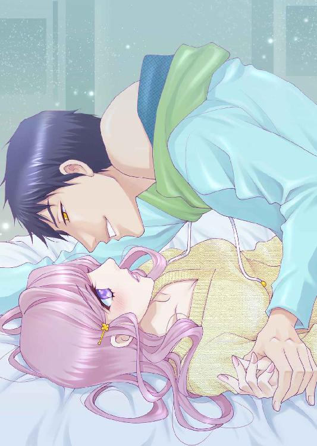
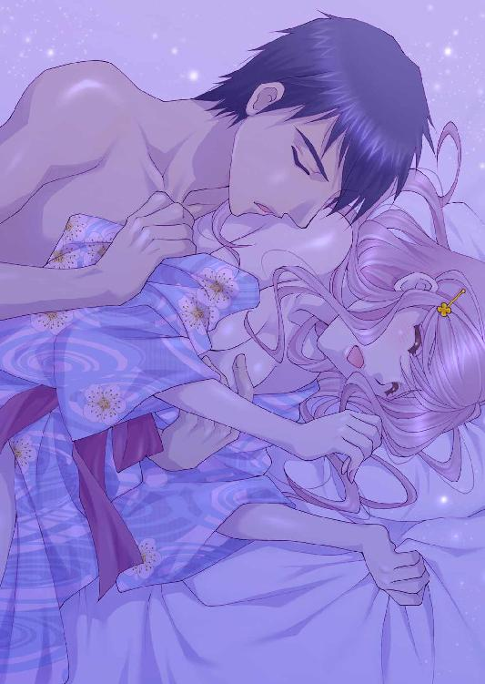

| あやかしの恋人～黒猫と秘密の恋～ (ラブリィキス文庫) | |
| 森田りょう & 大橋薫 | |
| (2015) | |
あやかしの恋人
～黒猫と秘密の恋～
森田りょう
大橋薫
本作品の全部または一部を無断で複製、転載、配信、送信したり、ホームページ上に転載することを禁止します。また、本作品の内容を無断で改変、改ざん等を行うことも禁止します。
本作品購入時にご承諾いただいた規約により、有償・無償にかかわらず本作品を第三者に譲渡することはできません。
本作品を示すサムネイルなどのイメージ画像は、再ダウンロード時に予告なく変更される場合があります。
本作品は縦書きでレイアウトされています。
また、ご覧になるリーディングシステムにより、表示の差が認められることがあります。
一 深まる息吹
一瞬で恋に落ちたのかもしれない。彼の鋭い瞳を見るだけでわたしの心は疼いてしまうの。でも、きっと脈はない。彼はどこか遠い眼差しをしていて、いつも心に闇を潜めているようで......わたしはそれがとても悲しくて、できることならずっと傍に......いたいと思った。
「直子！ なにぼーっとしてるの？」
小学校からの親友、京野都の声を聞いて、はっと我に返った佐山直子は目を見開きながら、都の顔をじっと見据えていた。興国大学で歴史を専攻している直子は知的でとても頭が冴える。可愛らしい都とは正反対のどちらかといえば美人でスレンダーな直子。そんな直子が最近、どこか上の空だということに、都はとても心配していた。
「どうしたの？ 陣くんとなにかあった？」
「別に......なにもないわよ。わたしと陣くんの関係なんて、ただの友達の友達なんだから......」
都の彼氏をみるためにＫＷＡＩカフェへと足を運んだ際、陣というウェイタ―に出会った。カフェは久遠というイケメンの都の彼氏と紗雪という綺麗なウェイトレスと陣の三人で運営している。オーナーは年老いているせいか、あまり顔は出さないらしい。
つんとした猫っ毛の髪に鋭い瞳、やんちゃな雰囲気をかもし出す、気さくで話しやすい陣を見た瞬間、心を鷲掴みにされたようだった。一瞬にして恋に落ちたのだ。それからなんとかして陣に好かれようとカフェの手伝いをするのだが、いっこうに進展しない距離。
陣はなぜかいつも、自分に対して壁を作っているようで、その心の中にはほんの数ミリも入らせてはくれない。唯一そんな陣の心の中に入れるのが、仲が良い都であり、陣は都に対して心を許している。都には彼氏がいるのだが、少し......少しだけ嫉妬したことがある。
「直子、カフェに行くの？」
都の髪が風に揺れ、ふわりといい香りが漂ってきた。守りたくなるような儚げな雰囲気が男受けするのかと直子は納得した。
「う～ん、どうしようかな。昨日行ったばかりだし」
「行っておいでよ。陣くんも喜ぶだろうし」
何気ない都の言葉。なかなか進展しない距離に苛立ちを覚えた直子。
「べつに喜ばないよ。陣くんは、都が行けば喜ぶんじゃないかな？」
棘のある言葉を紡いでしまった。直子はしまったという顔をして、都に顔を背けた。
「それ......どういう意味？」
「......気にしないで。わたしがそう思っているだけ。感じているだけ。都と陣くんと久遠さんといるときって、なんか......わたしだけのけ者扱いされているようでちょっと......しんどい」
「直子......」
都の顔が見られなくなってしまった。駅に向かうまでの距離をとぼとぼと歩く。
──なにをわたしは都にあたってしまったんだろう。ほんと、わたしってバカだ。こんなんじゃ......嫌われても仕方ないよね。
「......ごめん、都」
ふっと笑みをみせて直子は切ない表情ではにかんだ。
◇◇◇
駅から十五分ほど離れた場所。大きな公園と川が目の前にあるＫＷＡＩカフェは妖怪の怪から名づけられており、巷では妖怪カフェと呼ばれている。何故そう呼ばれているのかは、詳しくわからないが、妖怪好きなオーナーが作ったカフェで、店の雰囲気は妖怪にちなんだものはなにもなく、珈琲と紅茶、サンドイッチが美味しいオシャレなカフェだ。
店内はカウンター席が五席、テーブル席が三席とそんなに広くはない。小さなカフェはいつも常連客で常に満席になっており、賑わっている。
「こん......にちわ......」
遠慮がちに店内の様子を探るように、そっと扉を開けた。カランコロンと鐘の音が聞こえ、数人の客の視線を浴びる直子。そんな彼女の姿を見つけ、カウンター奥から明るい声が聞こえた。
「直ちゃん？ 久しぶりじゃん！ どうしたの？」
いつも以上に笑顔が眩しい。ヤンチャそうな人懐っこい笑顔が直子の視線を釘づけにする。久しぶりの笑顔にドキドキさせながら、直子は戸惑いつつも陣の目の前のカウンター席に座った。
「陣くん、ごめんね。最近来られなくて......」
言いながら、直子は陣の瞳を真っ直ぐに見られない。
「大学忙しいんでしょ？ それくらい、俺にだってわかるよ。ほら、俺は大学なんて行ったことないしさ、勉強しているってだけでも......すごいと思うけどなぁ」
陣がそう言っても、直子は伏せていた目すら合わせない。笑顔のない彼女に対して、心配げな面持ちの陣。なんとかできないかと考えつつ、陣は提案してみた。
「直ちゃん、今日はこのまま六時上がりなんだけど......飯でも食べに行かない？ ねえ、久遠さん、いいっしょー？ 俺、六時上がりで」
「はあ？ 陣、お前今日八時上がりだろうが！」
カウンターの奥にある休憩室から慌てて顔を覗かせた都の彼氏の久遠。黒曜石のような真っ黒の髪と瞳。モデル並みにすらりとした体格と整った顔立ちに見ている者はみんなうっとりとその容姿に引き込まれてしまうほど。休憩中だったせいか、ギャルソンエプロンを手に持って、カウンター内に入ってくると陣に軽く小突く。それでもお構いなしに、陣は笑みを見せ、久遠を宥めた。
「いいじゃん、いいじゃん」
「いいわけないだろ！」
「頼むよ、久遠さん！ 紗雪さんにちょっと早めにきてもらってさ。直ちゃんを元気づけたいんだって～。お願い！」
直子にわからないよう、カウンターの後ろで小さな声で話す二人。久遠はふうっとため息を吐き出して口を開いた。
「お前には色々助けてもらっているからな......今日だけだぞ？」
「やりっ！ 久遠さん好きっすよ～」
「おいっ、陣！」
久遠に飛びつくように抱きついた陣は本当に人懐っこい。このカフェのマスコットキャラクターのような存在で、いつも笑顔で話しやすい。
──そんな彼の笑顔にわたしも惹かれた......。
直子はうっとりとした目で陣を見つめた。じっと見ていると、直子の視線に気づいた陣は満面の笑みでこちらにピースサイン。笑うと覗く八重歯がとても可愛くて、胸がきゅんと締めつけられた。
──ああ、可愛い、可愛い！ 陣くんの笑顔、すっごく可愛い！
甘えるのが上手で、まるで猫のようだと直子は思った。日向がとても似合う男の子。笑顔が眩しくて、太陽みたいな男の子──。
真っ赤になりながら、メニューを見つめる。ドキドキが......止まらない──。
◇◇◇
「直ちゃん......」
陣が小さく呟いた。その声に反応して、直子は顔を上げ、壁時計に視線をやる。
──あ、六時前。五時五十五分。
陣の合図によって、直子は身支度をすると、ゆっくり席を立ち上がった。それは陣と直子の約束ごと。
──夕方六時以降は店には入らない、来ない、近づかないこと。
陣が直子に約束させた条件なのだ。何故だかはわからない。理由も教えてくれないからこちらからも理由は聞けない。その代わり、昼間はいつでも来ていいという。それは都に対しても同じ条件で、彼女に聞いても理由はなにも教えてくれない。それどころか、自分だけなにか仲間外れにされているようで、その輪の中に入れない。だからしばらくの間、直子はＫＷＡＩカフェに来ることを戸惑っていたのだ。
「久遠さん、ご馳走様でした。すみません......なんだか、わたしの為に......」
言いながら久遠に伝票を渡す直子。
「いいよ、あいつも直子ちゃんの為を思って誘ったことなんだし......」
「わ......わたしの為って......そんなんじゃないと思います、きっと」
「最近、直子ちゃんが元気ないって都も心配していたよ。ここにもあんまり来なくなったし、だから俺も直子ちゃんの顔が見られて嬉しいよ」
久遠はレジの前で笑顔を向けた。その真っ黒い瞳に一瞬で吸い込まれそうな気分だ。あまりのかっこよさに、直子は息を飲み込む。
──都、幸せ者だね。
「ありがとうございます」
そう言って、直子はそっと笑みを見せた。
「陣......あいつは今、着替えている最中だから。もう少し......外で待ってて」
「あ、はい。ご馳走様でした、久遠さん。また......来ますね」
直子は頭を下げて、それからすぐに扉に手をかけた。そのとき、ぶわっと風が店の中に入り込んできた。
──な......に？
目を見開いて、後ろを振り返るが、店の中では誰一人として風を感じていないようだった。
──そう、なにかが通り過ぎたような。体を通過したような......。人じゃ......ないものが......。
ぞくっと背筋が凍りついた。
「直子ちゃん？ どうかした？」
久遠の声に直子はびくっと体を強ばらせた。
「あ、あの......なんでもないです！ 今日はありがとうございました！ 陣くんに、そこの公園で待ってるって......伝えてください」
慌てて、直子は店の外へと飛び出した。腕時計を見ると、時間は六時を過ぎていた。ほんの数秒、だけど、六時を過ぎた途端、寒気を感じた。
「疲れている......のかな？ 気のせい......なのかな？」
そう呟いて、陣が来るのを待った。
「ごめん！ 直ちゃん！ 待った？」
「ううん、大丈夫。待ってないよ」
直子は公園のベンチに座っていたが陣が来ると、素早く立ち上がった。真っ暗になった公園を陣はきょろきょろと見回して、周囲を気にし出した。
「どうしたの？」
「いや、今まで感じなかったけど、けっこう公園って暗いのなーって。直ちゃん、今度から待つときは駅にしよう。これからだんだん冬に近づいて暗くもなってくるし、危ないっしょ？」
陣の優しい気遣いに、直子はとても嬉しく感じた。ほんのりと頬が赤く染まる。きっと陣には気づかれていない。ぜったい、自分の気持ちを気づかれてはいけない。
──このままの関係でいい。このまま、友達のままでいられたら、ずっと一緒にいられるの。
直子はおのれの気持ちを言うつもりはない。陣は彼女を作らないと都から聞いていたからだ。だから、友達という位置を選んだ。それなら、いつでも傍にいられるから......。
◇◇◇
カフェから二駅ほど離れた駅に降りた。向かった先は陣の近所にある行きつけの居酒屋だった。こじんまりとしたお店で、テーブル席が二席しかなく、あとは全てカウンター席だったが、平日の夜六時過ぎということもあって、まだ店内に客はそれほど多くもなかった。
「ここのだし巻き卵が超―うまいの！ 直ちゃんもほら、食べてみ？」
そう言われて、直子はだし巻き卵を食べてみた。卵を六個も使った特大の出し巻卵はふわふわと口の中でとろけるほどの軟らかさだ。この居酒屋の名物でもある。
「マスターの味付け、けっこう濃いんだけど、直ちゃんは大丈夫？ もしかして、薄味だった？」
「ううん、わたしも濃い味つけが好きだよ！」
顔が近かった。直子の頬が一瞬にして真っ赤に染まった。
「あー、うめぇ！ やっぱ、酒は最高！ 直ちゃん飲まないの？」
「わ、わたし？ まだ、その慣れてなくて......今日はウーロン茶でいいよ」
「ちぇー、つまんないの。つか、俺が鍛えてあげようか？ これでも昔からかなり飲むほうだったからさ～」
「昔から？ え？ 陣くんとわたしってあんまり年変わらないよね？ そういえば、わたし......陣くんの年齢知らないや。何歳なの？」
途端に、陣は目を逸らしてグラスに唇をつけた。
「あー......四......百歳......？」
唇を隠すように小さな言葉で呟いた。
「え？ 四？ 二十四歳？」
直子は小首を傾げながら、さらに陣に尋ねてみる。陣はぼりぼりと頭を掻いて、今度はじっと直子の瞳を見つめた。
「四百歳......つったら直ちゃんどうする？」
「ふぇ？」
目を見開いて再び首を傾げる。陣の瞳があまりにも真っ直ぐに直子を見つめていたから、直子は一瞬、本気なのかと考えてしまった。そんな馬鹿な話あるわけないと思いながらも、陣の言葉は一つ一つ本気のような気がして信じてしまいそうになる。
しばらく黙ったままでいたら「冗談だって！ なに本気にしてんの？ 直ちゃん、面白れー」と腹を抱えて笑う陣。
「え？ あ、冗談だったんだ？」
「四百歳とか、妖怪じゃあるまいし......」
ふっと、陣の笑みが消えた。その瞬間、陣の心の奥にある闇が見えた気がした。
◇◇◇
「酔っぱらっちゃったな～と......」
「もう、陣くん！ しっかりしてよ！ 家の鍵は？ ポケットにあるの？」
「うん～ポケットにあるよ～」
飲んで話していたら時間なんてあっという間に過ぎてしまう。酒には強い陣だが、さすがに何十杯も飲めば気分もハイになるだろう。
ああ、だめだと直子は思った。
──これ、きっと明日には記憶がないパターンだ。
直子はため息を吐き出しながらもべろべろに酔っぱらった陣を介抱することに決めた。
──だって、途中で放置できないし、家に運ぶだけ。それだけよ！ 幸い、足もとはしっかりしているし、このまま肩を貸して家に運ぶだけ。
「陣くん、家......ここだったよね？」
「ん？ あ～そうそう」
適当に答える陣に対して、直子はもう一度溜息を吐き出した。
「もう！ 陣くん！」
声を荒げてしまい、慌てて口に手を当てる直子。真夜中に近所迷惑な奴だと思われたくない。気持ちを落ち着かせようとしたそのとき、陣の腕がするりと直子の首に絡んだ。
「直ちゃん、怒っちゃった～？」
ごろごろと喉を鳴らし、甘えてくる子猫のように陣は直子に抱きつく。こんな風に体に触れたのは初めてで、どうしたらいいのかわからなかった。逞しい体に、心臓は早鐘を打つかのように動いている。
「じ......陣くんっ？」
「あー、なんか頭......ふわふわする......」
「え？ 陣くん！ 大丈夫っ？」
──どうしよう、どうしよう。家の目の前に来てはいるけど、前に通ったときに教えてもらっただけで、部屋番号なんて知らない。でも、たしか......一階って言っていたような......。
二階建ての築数十年は経過しているようなボロアパート。一階に四世帯、二階に四世帯、合計八世帯が住んでいるだろうそのアパートに足を踏み込む。表札を見ればいいじゃん！ そう思ってはみたものの、このご時世、プライベートを知られたくない理由で表札に名前を記入しない者もいる。案の定、郵便ポストにもドアの横にも名前を書いている人は一人もいなかった。溜息をついてあきらめかけていたそのとき、一○一号室のドア横の表札に「陣」と小さな文字で書かれていたものを発見！
──陣くんの家だ！ でも、陣って......苗字？ それとも......名前？
そんなことすらもわからない直子は、肩に乗っかかる陣をちらりと横目で見た。不安げな表情でじっと陣を見つめる直子。名前と働いている場所、本当にそれだけしか知らないのだ。
──陣くんの出身地も出身校も、誕生日も血液型も好きな食べ物も嫌いな食べ物も......フルネームさえも知らない。
「陣くん......とりあえず、鍵。鍵を貸して......」
ごそごそと陣のポケットを弄る直子。
「ふはっ、ははっ......直ちゃん、こそばゆい」
酔っぱらっている陣の言葉は無視して、直子は鍵を探した。ジーンズのポケットからあっさりと見つかった鍵を、鍵穴に差し込む。木造のドアはギーッと不気味な音を醸し出してゆっくりと開いた。中に入ると玄関で靴を脱ぐ。
「陣くんもほら、靴脱いで！」
「え～？ 俺んち......？」
「そうだよ！ 陣くんの家に着いたよ！ 靴、脱げる？」
「靴？ 靴......」
寝ぼけ眼の目、とろんとした瞳の陣は今にも眠りにつきそうだ。
「陣くん？ ちょっと、寝ないでね！ ほら、もうすぐにベッドがあるからそこまで頑張って！」
「ん？ ベッド～？」
「そう！ ベッドに運ぶから、あと少しだけ足を踏ん張って......って、キャッ！」
陣の足がもつれ、支えていた体が直子の体へと倒れ込んできた。
「ひゃああっ！」
ばたんっとベッドになだれ込む二人。気づけば、陣の体が直子の体に覆い被さっていた。
「いった......直ちゃん、大丈夫？」
そう尋ねても返事はない。どうしたのかと陣は腕に力を入れて上半身を持ち上げると、直子の真っ赤になった顔が視界に飛び込んできた。

男に免疫がないと思うほど、真っ赤な表情で目を見開いている。どくんと陣の鼓動が静かに鳴り響き始めた。酔ったせいなのかもしれない。陣の下肢に集まる熱が本能を呼び覚ました。
「直......ちゃん」
陣は頬を赤らめて、虚ろな瞳で直子をじっと見つめていた。パーカーがはだけ、肩が露出している様にドキッと胸が高鳴った直子。
──陣くんの肩が！ 逞しい肩がちょっと見えている。それが、だんだん近づいてきて......。
チュッと首筋にキスをされた。
「へ？ え？ えええ？ ちょっ......ちょっと、陣くんっ？ ま......待って待って！」
陣の唇が直子の首筋に触れる。ゆっくりと直子の手首を掴み、ぐっと体を押しつけられた。抵抗する暇もなく、陣の唇は首筋から鎖骨に下り、そこで止まる。
「直ちゃん......」
とろんとした目で見つめられて囁く声が鼓膜に響いた。そのまま、耳朶に舌を挿し込まれ、直子はぶるっと体を震わせた。
「ひゃっ......ァ、ああ、陣く......んっ、くすぐった......い」
ぺちゃぺちゃと耳の周辺を舐め回されて、直子は体を捩じらせて悶える。手首を掴まれた手は、とても強く払いのけられない。
──酔っぱらったまま、なしくずし？ そんなのやだ......。
「ま、待って！ 陣くん、わたし......あの、は、初めて......で......」
ぼーっとしたまま陣は一度顔を上げると、再び直子の首筋にキスをしてきた。ごろごろと喉が鳴っているようだ。甘え上手なのかもしれない。
──酔ったらだれかれ構わず甘えるタイプなのかもしれない。というか、聞いてないし！ わたし、こう見えても男の人の免疫少ないんだから！ ま、まだなんだから！ こんな大人びた容姿だし、都にも誰にも経験済みだと思われているけど、まだ未経験なんだから！
なんて叫んで抵抗したいけれど......陣くんを好きなわたしにはそれができない。だって、好きな人だし、陣くんは二人きりのときも真面目で、手を出すタイプではないし......今日は本当にどうかしているんだと思う。酔っぱらっておかしくなってるんだと思う。それに、男の人の力には敵わない。
そう思った直子は、ゆっくりと陣の愛撫に身を委ねることにした。
「うっ......ァ、あ......」
怖い。怖くて、男の人の手がこんなにも大きいなんて知らなかった。こんなにも力があるなんて知らなかった。
手首の圧迫感がなくなると、陣の指は直子の肌に触れた。びくんと体を強ばらせる。服を捲り上げられて、下着が露になった。陣は直子の背中に手を回し、そっとブラのホックをはずす。そのまま、つーっと背筋を撫でられて、思わず声が漏れてしまった。
──陣くんは誰を見ているのだろうか。誰を抱いているのだろうか。ちゃんとわたしを見ていてくれているのかな？
そう思うと、すごく胸が締めつけられてしまった直子。陣の両頬を両手で固定し、自ら唇を寄せた。軽く、重ねただけのキス。震えた唇が余計に陣のなにかを壊したみたいだった。
タガがはずれたように、陣は直子の体を抱きしめ唇を押しつけてきた。そのまま、ねっとりとした舌を挿し込むと、喉の奥や歯の裏側までくまなく舌先を這わしていく。
「ふっ......ァ、ンン......っ」
貪るように唇をめちゃくちゃにおかされて、狂ったように啄む。何度も角度を変えて、キスは繰り返された。
「あ、あっ......ァ、じっ......ん、く......ん」
──わたしだって、わかってる？ わかって......ないよね？
涙で溢れそうだった。直子の心には穴があいたようにひどく疼いた。それでも身を預けるのは、陣だから。きっと、陣じゃなかったら蹴りあげて、殴り倒しているだろう。
陣は直子の唇から離れると、今度はブラジャーをずらして乳房の尖端に口づけた。
「ひゃっ......」
そのまま、舌で刺激され続け、ぷっくりと膨れあがったそこを恍惚と眺める陣。
「へへっ、面白ぇ～」
にっこりと満面の笑みを直子に向けた。取っ払っていると思うと、なんだか少し悲しくなって、顔を伏せる直子。
「お、面白がらないで！」
余計に苦しい。とても苦しくなった。両腕で顔を隠す直子に対し、陣はそっとその腕をはずすよう彼女の手に触れる。
「ごめん、ごめん。な？ 直ちゃん......」
「ふえ？」
──いま......直ちゃんって......言った......？ 酔っぱらっているのに......わたしだって......わかってるの？
「陣......くん......」
「舐めて......いい？」
「え？」
「俺、舐めんの好きー」
──ああ、やっぱり酔っぱらってる！ な、な、舐めるって、どこを？ え？ ちょっと......待って、待って、待って！
「陣くんっ？ あの......」
瞬間、下肢に今まで感じたことのないような快感が襲った。
「ふあっ......や、......ァ、ああ」
舌先がそっと赤く熟れた蕾に触れた。ふっと息をかけられ、びくんと体が反応する。茂みを掻き分け、ぷっくりと膨れ上がった蕾を上下に舌で揺らすと、直子の体が仰け反ってきた。
「そ......そんなとこ......だめっ、だめ......だ......め......」
直子の願いも聞き入れないくらい、陣は其処を舐めることに精一杯のようだ。じゅるじゅると、舌は割れ目を往復する。花弁を開いて、おのれの中指を舐めた後、そっと蜜壷へと捩じ込んだ。
「はあっ......ァ、あン......待っ......て......っ......」
異物が中に入ってくる。わかる。ひどく下腹部が熱いこともよくわかる。
「あうっ......陣っ......くん、そこっ......汚っ......い、の」
「綺麗だけどなー、直ちゃんのココ」
浅く入口を掻き混ぜられてびくびくっと体がひくついた。
──なにこれ？ なにこれ？ 頭の中がぴりぴりと痺れてくる。陣くんの唇が......舌が......わたしの中に......入って、めちゃめちゃに掻き混ぜられている。
「あ、あ、......陣く......ん」
今まで入口を掻き混ぜていた指が、ぐぷっと音を鳴らし奥底に辿り着いた。
「ひっ......ァ、あ、あ......」
──指、指なんて......初めて。こんなとこ......まだ誰にも触らせていない......のに......。
ぐちゅぐちゅと奥底でうねる指。指先を何度も上下に動かして、直子の気持ちいい場所を探る陣。かぶりを振りながら直子は初めての快楽に耐えていた。
「直ちゃんの中......あっつい......」
顔が近づいて、唇を寄せられた。
「ふっ......んぐっ......ァ、あ」
キスを繰り返されながら、指の加速度は増していく。水音が溢れるほどに、そこは愛液でぐちゃぐちゃになっていた。
──息が......できない......。陣くんの舌が、指が......わたしの中いっぱいに......拡がって......る。
「んっ......んんっ......ァ、あ、ああ」
唇を塞がれ、喘ぎは陣の口内で消えていく。びくびくと体を震わせて、陣の体にしがみついた。
「直ちゃん......」
耳もとで囁かれ、指をゆっくりと引き抜かれた。
「あっ......」
感じる。今まで指が入っていたそこは、じんじんと熱くなっていって、なにかを欲している。
陣は虚ろな瞳で頬を真っ赤に染めながら、直子の頬を下から上に舐め上げた。ねっとりとした舌が頬を濡らす。
「やばい......食べちゃいたい」
「へ？」
「直ちゃんのこと......すげぇ食べたい」
「なっ......なに言って......は、ァうんっ......ァァ、あああ」
ぐっと腰が沈んだ。陣の雄がゆっくりと花弁を押し拡げ入ってくることがわかった。
「......きっつ......っ......なに、これ......」
いきなり陣の雄が入ってきて、直子は体を仰け反らした。眉間に皺を寄せて、初めての痛みに耐える直子。思わず涙が溢れてきた。痛いのと、嬉しいのと半分半分。泣いていることは気づかれていない。セックスして、泣かれていたら、なんて面倒くさい女なんだと邪険にされてしまう。
──わたしは陣くんにそう思われたくない。嫌われたくない。
「陣......くん、陣く......ん」
とにかくしがみついた。彼の体にしがみついて、痛みがなくなればいいって思った。ギュッとしがみつく直子の体を抱き起して、陣は腰を打ちつける。
「やっ......は、ああ......激しっ......陣く、ん......もっと、ゆっく......り......っ......」
「ごめっ......直ちゃんの......中、すごくて......優しく......できない......っ」
頬に添えられた手、律動を繰り返す陣の顔が揺れ、浮き沈みを繰り返す。ふいに、唇を塞がれた。陣の舌が中でうごめいて、腰を深く打ちつけてくる。恥骨がぶつかるくらい、結合部が密着した。
──息が熱い。熱くて、頭がくらくらして、天井がやけに近く......陣くんの顔がとても切なそうで色っぽくて......わたしは、その後のことを覚えていない。
目が覚めたのは......それからしばらく経ってからのことだった。
◇◇◇
家賃三万九千円の六畳一間のボロアパート。昼間は鳶の仕事、雨の日や鳶の仕事がない日や夜はカフェでアルバイト。とにかく働いて働いて、働きまくっている。これといった楽しみもない。
──そんな楽しみのない生活をして......なんで四百年も生きているんだろう......。
薄く目を開けると、自分の部屋だった。頭がガンガンする。ぼーっとしたまま昨夜のことを思い出してみる。
──ああ、そっか。昨日は直ちゃんと飲みに行って......飲みに......行って......それから......どうしたっけ......。
「あったま、痛ぇ。水......」
とりあえず、水を飲もうと上半身を起き上がらせた陣はベッドの異変に気づいた。
──隣がなんだかあったかい感じ......って、人っ？
ふと、おのれの隣を見てみると、掛布団を肩まで被った【誰か】が寝息を立てていた。息を飲み込む。この猫ッ毛、どこかで見たことがある。
陣はゆっくりと掛布団を捲った。
「おわっ！」
驚いて声を上げてしまった。そこにいたのは......
「直......ちゃん？」
どくんどくんと心臓が忙しなく動く。
──え？ え？ どういうことだ？ なんで直ちゃんが裸で俺の隣に寝てんの？ てか、なんで俺も裸なの？
こんなに焦ったことは珍しい。ごくりと息を飲み込んだ。
とりあえず、昨夜のことを思い返す。順番に思い返す。
──ええと、たしか昨日は鳶の仕事は休みで昼からのシフトで直ちゃんと居酒屋に行って、それから......俺が酔っぱらって......たしか......直ちゃんに送ってもらって......鍵を......ポケットから直ちゃんが取り出して......俺の家に入って......ベッドに、そう、ベッドに倒れ込んで......。
ごくりと再び息を飲み込んだ。そして、隣で寝息を立てている彼女の姿を見やる。頬を赤らめて、口を手で覆った。
──ヤバイ。直ちゃんの......全部覚えている。感じている顔も、味も、熱も、指を入れた感触も会話した言葉も......覚えている。
「直......ちゃん......」
──どうしよう、俺......直ちゃんを......。
目を丸くさせ、しばらく言葉を失っていた陣。隣で眠っていた直子が寝返りを打ちこちらを向いた。そして、目が合ってしまった。一瞬、言葉を失った。裸の彼女はとても艶っぽくて、憂いを帯びていたからだ。
「な......お......ちゃ......」
──声が出ない。こんなことは初めてだ。今までどれだけの女を抱いてきたと思ってる？ そう、こんなことは初めてで......。
「あ......」
震えるほどに脅えている彼女がとても可愛く見えた。
「直ちゃん......俺......ごめん。酔って......た。だから......」
「わかってる！ わかってるの！ 陣くん、彼女作らない人だって聞いていたから......うん、わかってる......」
自分で納得して、直子は陣の話を聞こうともしない。
「また、カフェにも行きたいし......みんなと楽しく過ごしたいし......陣くんの傍にいたいし......だから、このことは......なかったことにする......」
自分一人で話を綴る直子に対して、陣はしだいに苛立ちを覚えてくる。
「直ちゃん！」
ぐいっと肩を掴んだ。掛布団が捲れ、シーツが見えた。そこは互いの汗と感じた証拠によりぐちゃぐちゃになっていた。黙ったままそれを見つめ、二人頬を赤らめる。セックスしたのだと、改めて感じさせられたのだ。
直子はシーツを見ると、小さく頭を下げる。
「あのっ......ごめんなさい。血が......」
見るとシーツに血がほんの数滴、しみついていた。陣の顔色から血の気が引いていく。
「もしかして......直ちゃん......初め......て？」
戸惑いながらもコクンと頷く直子に対し、陣は頭を抱えて項垂れた。
──俺が穢した......。ずっと、カフェに遊びに来て仲良くしてくれていた子なのに。それに久遠さんの彼女の親友に手を出したなんて......。
「直ちゃん、あの......本当にごめん。まさか、俺......あんなに酔うとは......」
俯いたままの直子。陣は言いながら、正座に座り直し直子の正面に向いた。手を取ると、顔を覗き込んで彼女の目を見据えた。
「なかったことにするって......できないよ」
「でも、そうしないと......陣くんは......わたしの目をこの先ずっと見られないままだと思う」
ドキッと胸が高鳴った。あまりに真っ直ぐに鋭く尖った瞳だったからだ。直子の真っ直ぐな瞳に飲み込まれそうになるほど。陣は、彼女に尋ねる。
「直......ちゃん......は、どうしたい？」
「わた......し？」
「うん。直ちゃんの気持ちを......優先したいと思う」
──それって、ずるいことだよな。でも、俺に関わったら......直ちゃんを危険な目に遭わすかもしれない。それだけは......。
陣はグッと拳を握りしめた。
「言って、直ちゃん。どう......したい？」
「この......ままがいい。今ならまだ......一回だけだって......割り切れる」
「うん、うん。俺もそのほうがいいと思う」
「でも......もう一回だけ......お願い」
「うん。......えっ？」
思わず頷いてしまった陣。直子の大胆な発言に驚きを隠せない。
──だって、だってやっぱり......陣くんが近くにいるだけで......もう一度だけ......触れてほしいって......。
それだけで、体が熱くなった。
「酔ったまま......だと嫌なの......。きちんと......したいの。だから、もう一度......お願い」
俯く瞳は微かに震えていた。
──いや、全部はっきり思い出したんだけどね。そういうもん......なのかな。女の子って......。
陣は直子の瞳にそっと手を伸ばした。そのまま、軽く頭を撫でる。
「それなら俺は......責任とるよ」
──守れるなら......俺は......
「直ちゃんの傍にいる。直ちゃんが......俺のこともういいって......言うまで......」
軽く口づけた唇は、ほんの少し震えていた。伏せた瞼がとても可愛くて、陣の胸が高鳴った。こんな感情......初めてかもしれない。
「陣くん......あの......」
くいっと陣の腕を引っ張る直子。続き......とでも言いたいのだろうか？ それでも大胆に誘うことなんてできない直子は、陣の腕に指を乗せたままだった。
「あー......直ちゃん。ごめん。今から鳶の仕事......」
「あ、そうなんだ。ごめんね、気づかなくて......」
「いや、いいけど......」
多分、あれでも精一杯に誘ったんだと思う。顔を真っ赤にさせて、はっきりと言葉にしなくて、昔の俺なら苛立って、一瞬の内に......殺していたかも。
そう考えながら、陣は昔を思い返した。
冷たい瞳になっていたのか、直子の体が強ばった気がした。ハッと我に返って、陣はすぐさま気を分散させる。
「駅まで送るよ！ 俺、後ろ向いとくから......その間に着替えて」
直子はコクンと頷いて、恥ずかしそうにベッドの下に散らばる衣服を手に取った。
◇◇◇
陣の家から自宅まで二人なにも話さずに歩いていた。気まずい雰囲気の中、ようやく駅に辿り着いた。いつもは話しやすい陣の態度がどこかよそよそしい。
──やっぱり、なかったことにしといたほうが......いいのかもしれない。
直子はそう思いながら、陣の服の裾を引っ張る。
「陣......くん、やっぱり......昨夜のことは......なかったことに......」
「電話する。仕事終わったら......ちゃんと電話するから」
言葉を遮られた。きっと、直子がなにを言うかわかっていたのかもしれない。直子の頭をそっと撫でて、にっこりと微笑む陣の姿に胸が昂った。やっぱり、この笑顔が大好きだと再認識させられてしまう。頭を撫でられただけで、笑顔を向けられただけで......どんな苦しいことでも耐えられるほど。
──わたしって......単純すぎ。
頬を赤らめながら、そう考えた直子。
「待ってる......ね」
それは、陣も同じことだった。直子のふとした仕草や笑顔に胸がざわざわとし始めて、感情が昂る。
「気をつけてね。帰ったら......メールして」
直子は頷いて、駅に向かった。その間、何度もこちらを振り返り、手を振る直子。完全に見えなくなったのは五分を過ぎてからだった。思わずその場にしゃがみ込む。
──か、可愛いーっ。今までずっと可愛いとは思っていた。それにすごく話しやすいし、俺のカフェの仕事も手伝ってくれて......。てか、なんだ？ このどくんどくんって、心臓が早くなってる。こんな感情、知らない。
頬を赤らめて、地面を見やる。しばらく直子の笑みの余韻に浸っていた陣だが、突然ぴくりと体を反応させ、その瞳はすぐさま鋭いものへと変わった。唇をキュッと引き締め、ゆっくりと立ち上がる。そのまま、来た道を戻り、家へと向かった。
土曜日ということもあり、まだ、朝も早いせいか、通り過ぎる人は少なかった。カラスの声が聞こえる。陣の頭上で飛びながら、ずっと後をつけてくる一匹のカラス。この辺りは土曜日が燃えるごみの日で、決まって土曜日の朝にはカラスがどこからともなく集まってくる。黒いカラスはどことなく異様な雰囲気をかもし出していて、近所の住民はときおりその数の多さに驚いていた。
公園にさしかかるところで、陣はふと足を止めた。ジーンズのポケットに手を入れて、パーカーのフードを頭にかぶったままの陣の瞳には先ほどの笑顔とは正反対の殺気が溢れんばかりに漂っていた。
一匹の真っ黒なカラスが陣の頭上の木に止まった。背中を向けている陣に背後からじっとその様子を見ているようだ。
『食べなかったのか？』
陣の頭の中に入ってくる声。周りにはなにも聞こえない。
『うるせー。闇鴉、殺すぞ』
陣も同じように、頭の中で会話を始めた。
『たかだか四百年しか生きていないような餓鬼が、いきがりおって』
『黙れ』
『猫又の陣。人に恨みをもって化け猫になったお前が......人の女に優しくしているとは笑っちまう』
『ぶち殺すぞ』
殺気を放つだけで、地面がびりびりと揺れ、木々がざわめいた。闇鴉と呼ばれる真っ黒で大きなカラスは止まっていた木から離れ、陣の周りをからかうように飛び回っていた。
『あの娘、可愛い足をしとるの～？ 食べないなんて、勿体ないの～。でも、舐め回したんだろ？ あの体を......。わしはお前のように人に変化ができないからの～、うらやましい』
闇鴉は散々飛び回った後、ゆっくりと陣の右肩に止まった。目を見開く陣だが、その瞳はすぐに冷酷さを表す。
『妖怪と交わったあの娘......お前の匂いがプンプンしとる。妖怪と交わるなんて変わり者、妖怪の間で噂になって狙われるぞ。自分の餌だと妖怪に施すマーキング行為は逆効果だって......貴様も知っているだろ？』
陣は小さく呟いた。
『うるさいぞ、闇鴉』
その瞬間、右肩に止まっていたカラスの体は無数に切り刻まれ、血しぶきが上がった。ピッと陣の頬に血が飛び散った。ぺろりとその血を舐め上げると、冷酷な表情で唇を吊り上げた。
『なっ......貴様、この俺を斬り刻み......やがるとは......』
『お前が......直ちゃんの足を食べたいって......言うから』
『一本くらいいいだろっ？ 貴様だって、昔は人を食べていたじゃねぇか』
『昔は......な。でも今は、人と共存して生きていく。妖怪界の掟も人を食べないよう決められている。直ちゃんに手を出してみろ。......もっと細切れにしてやる！ 肉片も粉々になるまで』
闇鴉はふらふらになりながらも陣の元から逃げるように去って行った。しんと静まり返る公園内。血しぶきも人には見えない。ただたまに、波長が合う人間がいて、闇の世界で生きている物を見ることがある......が。
陣はぼりぼりと頭を掻きむしる。
「さて......仕事に行くとするか......」
──威嚇はしたがいいが、やはり狙ってきたな。うっかり......マーキングをするとは......。俺だけの物だってあのとき......思っちまったのがいけなかったな。
ふっと陣はため息を吐き出した。
──これからきっと......もっと......直ちゃんを狙う妖怪が来るかもしれない。その度に俺は後悔するんだ。直ちゃんを巻き込んでしまったことを......。
風が陣の髪を揺らす。そっと、その風に包まれているようで、陣はふと、昨夜の直子を思い返していた。
──守るよ、直ちゃん。
何事もなかったように、陣は自宅へと向かった。
二 隠れた闇
あれから、別に進展はなく、直子も忙しくてなかなかカフェには立ち寄れなかった。電話はする。日に三度。朝と昼と夜。でも......会っていない。
「陣くん不足かも......」
「へ？ 直子、今なんて......？」
「うん、だから、陣くんが足りない......ていうか......」
──まだ一回しか体を合わせていないんだけど......。
都とカフェでまったりしている最中、突然、そう言葉を漏らしてしまった。都は相変わらず、きょとんと目を丸くさせていて、なにもわかっていない感じ。
──互いに恋バナを話していた時期もあって、都はなんでも私のことを知っているけど、まさか私が処女だなんて知らないし、大人びた容姿なのでみんな私が過去に数人もの男と付き合ったことがあると思っている。実際、何人かとお付き合いはした。けど、最後まではしたことがなくて......初！ 初めて！ でも、付き合っていない人としたことが考え物なんだけど、今まで守ってきた貞操だし、本当に好きな人だったから、いいやって......。それにしても、陣くん......激しかった。他の人もみんなあんな濃い......濃い......セックスってやつをしているの？
「は～、セックスって......すごいね」
「な、な、直子っ？ どうしちゃったのっ？」
溜息を吐き出して直子はテーブルに伏せった。ごんっと額をぶつけてしまう。
「痛い......」
──嬉しいのに、心の奥底がほんの少し、ちくりとする。だって、わたしたちは別に......付き合っているわけでもない。ましてや好き同士でもない......。
「もしかして、陣くん......のこと？ 陣くんとなにか......あった？」
都の言葉に反応して、直子はガバッと起き上がり顔を上げた。真っ赤になった直子を見て、さらに都が口を開く。
「エッチ......しちゃったとか？」
「ちっ......ちがうっ......いや、ちがわないっ......けど......」
ごつんっと再び、テーブルに額をぶつける直子。恥ずかしさのあまり顔を伏せってしまった。
「心と紗雪さんには......まだ内緒にしていて」
真っ赤な顔をして呟く直子に、都は驚きながらも頷いた。
「でも、陣くん、手が早い」
「早くない！ 少なくとも友達になって数か月、一度も手を出されたことなんてなかったし、......カフェの休憩室で二人きりになっても指の一本も触れないし、デートしても手なんてつながないくらい、なにもないし......反対に、わたし魅力ないんじゃないかなって思っちゃったり......」
直子はふっと息を吐き出すと、もぞもぞと体を揺らした。
「だから、奇跡。陣くんがわたしに手をだしてきたことは本当に......奇跡なの」
言いながら、直子はカフェラテを一口飲んだ。
「無理......してないよね？」
都が心配な面持ちで直子を覗き込む。
「......大丈夫よ」
都に心配をかけさせまいと、直子は笑みを見せた。
◇◇◇
「はあっ......」
カウンターで溜息を吐き出す陣はポットを手に持ちコーヒーを注いでいた。
──妖怪の俺が......直ちゃんを手に入れてしまって......いいのか？
そう考えながら、コーヒーを注ぎ込む。
「おい、陣......」
カップに注ぐ熱いコーヒーがなみなみまで淹れられた。陣はカップぎりぎりまで淹れられたコーヒーに気づかなく、手を止めようとはしない。そのままテーブルに溢れてしまった。
「陣！」
久遠の声にハッと我に返る。真下にあるコーヒーカップに視線をやると、ぼたぼたとカップから溢れていた。
「うわっ、熱っ！」
ガチャンッとカップとポットがテーブルの上に倒れる。そのまま陣は一歩後ろへと下がった。
「失礼しました！」
陣が声を上げたせいで驚いた客に頭を下げて謝る陣。久遠は布巾を手に取るとこぼれたコーヒーを拭き、カップとポットをシンクにそっと置いた。
「大丈夫か？」
「す......すみません、久遠さん。コーヒー......作り直します」
「いや、いい。それより、ヤケドしたところをすぐに冷やせ」
「いや、こんなんすぐ治るっす......」
「陣」
低い声に陣はびくりと体を強ばらせた。見た目は人間そのもの。芸能人なみのルックスに黒曜石の髪と瞳。だけど、久遠の正体は千年以上生きる大妖怪の鵺だ。妖怪になったばかりの頃から久遠には世話になっている陣。久遠には頭が上がらない。それどころか、昔の久遠を知っている陣はその恐ろしさを目の当たりにしており、町を全て焼きつくした久遠のことを思い出し、ぶるっと身震いをさせた。
「すみません......冷やし......ます......」
そう言って、背後にある水道水を出しっぱなしにして、左指を冷やした。妖怪である以上、これくらいの傷はすぐ治る。が、人の形をしている以上は人と同じ生活をすること。それが人の世で暮らす術なのだ。今の時代、妖怪の居場所はない。人を殺し弄んだ償いなのか......。久遠の言いつけを守り、今まで生きてきた。人に慣れること、それが第一条件だ。カフェで働くようになって、人間と触れあうことになって、次第に人を信じられるようになった。
──以前の俺は......真っ赤な血で染まっていた。
俯いて、水の流れを見据える。
「陣」
名を呼ばれ、振り返る。
「へ？ なんすかっ......んぐっ！」
ごくり。喉を通ったのは久遠が作った特製のハンバーグサンド。デミグラスソースが絶品で、この店一番の看板商品だ。
「美味いだろ？」
「......美味いっす......」
もぐもぐ、ごくり。いつ食べても美味いハンバーグサンドは陣も作り方を教えてもらっていた。だけど、このハンバーグは久遠にしか作れない。久遠が作ったハンバーグをサンドイッチにすることはできるけど、味付け、歯ごたえ、全てにおいて真似ができない。
──俺の憧れ、そして、尊敬する妖怪。都ちゃんに会って、本当に久遠さんは優しくなったと思う。
「久遠さん......あの......相談が......」
「は？」
陣の言葉に久遠は小首を傾げた。明るい性格、自由気ままに生きている陣に悩みがあるなんて、四百年傍にいるというのに、初めてのことだ。
◇◇◇
「あーヤバイっす！ ほんと、ヤバイっす！ ね、久遠さん、どうすればいいっすか？」
「だから、酔ったお前が悪い。それにしても、珍しいな。お前がそこまで酔うなんて......。浴びるほど酒を飲んだりしていただろ？ 大昔」
「いや、なんか話が弾んだというか......一緒にいると、こう......」
「癒される......って？」
久遠の言葉に陣の体がぴたりと止まった。しばらく考えていたが、それからすぐにコクンと頷いた。
「初めて......だったんです。直ちゃん......。妖怪の俺が......俺が......直ちゃんを......」
──純粋な彼女を穢してしまった......。
「責任はとりたかったんですよ。でも、俺......妖怪だし、年もとらないし......妖怪って知られることに......脅えている」
「......いつかはバレるんだろうな。このまま付き合っていくと......さ。付き合うっていうことは全てを曝け出すこと。相手を信頼しきって、互いに尊敬し合い、敬う気持ちが大切だ。まあ、人型なら人間との子どもを作れるんだし、妖狐の玉緒の幻術で人間界にて住民になることだって可能なんだし、学校だって行かせられる。子どもは半妖になってしまうが、見た目は普通の人間と変わらない。俺ら妖怪にはすぐにわかるけどな」
「俺は......直ちゃんに全てを話すつもりはないです。危ない目に......あわせたくない」
「マーキングしなければいい。俺の物だって証拠を残さなければ、他の妖怪に襲われない。餌を横取りしようとする妖怪が多いからな」
久遠の言葉に、陣は喉を詰まらせた。
「あ......の、久遠さん。......もう......マーキング......しちゃいました......」
「はあ？ お前、なにやってんの！」
「いや、だって......酔ってたし......我慢できずに......というか、中でうっかり......出しちゃって......」
「一度マーキングしたらお前の匂いはなかなかとれない。俺が都とそういう関係だったとき、都から俺の匂いが沁みついていただろ？ お前は都を同種と......妖怪と勘違いしただろ？ それくらいマーキングっていうのは人間にとってみれば危ない。他の妖怪が近づく可能性があるからだ。俺は都に強力結界を張っているから大丈夫だが......結界のやり方、お前にも教えておくべきか......」
「その結界は千年以上生きている大妖怪の久遠さんだからできることでしょ？ 久遠さんの力が百だとするならば俺の妖力は十程度。俺にはきっと......無理っす」
「俺も都一人に結界をかけるだけで、けっこうな妖力使っているからな......」
「でしょ？ 大変な術なんですって。だから俺は......俺のやり方で......なにか方法を考えます」
「お前さ......勢いあまって喰うなよ？」
「喰うわけないじゃないっすか！ 昔みたいに餓鬼じゃないんですよ！ 人の世界だってそれなりに楽しんでるし、久遠さんだって、昔は凶悪な妖怪で恐れられていたじゃないですか。古事記や万葉集だっけ？ それにも載ってるくらいだし」
「俺は無から生まれた。だけど、お前は......。まあ、この話はいいか。今、お前が人を信じられることになって、俺は......嬉しく思っているよ。直ちゃんのおかげかもな」
久遠の言葉にじっと耳を傾ける陣。目を伏せて、過去をほんの少し思い返す。
「俺が守ります。一匹一匹、ぶっ倒しますよ。彼女に近づく妖怪がいるなら......」
「妖怪界の掟で人間は殺せない決まりだ。昔とは違って、今は妖怪も人を殺さずに生きていく方法を見つけようとしている。まあ、たまに人間の肉の味が忘れられなくてひっそりと山奥で殺す妖怪もいるが......。稀だよ、人を殺す妖怪は」
「......殺さないかもしれない。じわじわと弄り、四肢を奪ったり、死に至らない傷をつけることが目的だったら......。人を孕ませることを目的とする妖怪もいる」
「まあ、そういうのもたまにはいるだろうけど......ほんと、稀だって。なにをそこまで心配しているんだ？」
闇鴉がすでに直子を狙っていたことを、陣は久遠には伝えなかった。もしかしたら、久遠の彼女も巻き込まれるかもしれないと思ったからだ。ぐっと拳を握りしめて黙っていたら、久遠が口を開いた。
「俺も気をつけるようにはするよ。しばらくシフトを変えるか？ 六時あがりにして、妖怪が活発に行動する夜は、なるべく彼女と連絡とれるようにしたいだろ？」
「あ、ありがとうございます。すみません......迷惑かけちゃって......」
しゅんとして、元気のない陣の肩を久遠は軽く叩いた。
「もうランチの時間帯は過ぎたし、火傷のこともある。ここはいいから、一時間休憩してこい」
久遠がそう言ってくれたので、陣は静かに頷いて、休憩室へと向かった。
◇◇◇
真っ暗な闇。どれだけ叫んでも、届かない声。薄く目を見開くと、人がたくさんいた。だが、すぐさまそれは、見えなくなった。
小さな子猫だった陣は人を信じていた。いつも叩かれても、蹴られても、ごろごろと喉を鳴らして人にすり寄っていた。
人っていうものを恐ろしいと感じたのは死んだその日だった。
目玉をくりぬかれ、足は引きちぎられていた。敏感な尻尾は何度も踏まれた挙句、根元から切り取られた。一匹の子猫を大勢の人間が寄ってたかってなぶり殺しにした。
──苦しい。苦しい。憎い。憎い。裏切られた。裏切られた。
死んでからもなお、その魂はこの世への人に対する恨みでいっぱいだった。憎悪が激しすぎて、そのまま真っ暗な世界に堕ちた。堕ちたところで、もう一度......生を受けた。
「あれ？ なんだ、黒猫？ お前......妖になったのか」
──聞こえる。誰だ？ この声は......。
「目が......くりぬかれている。声も......でないのか？ 斬りつけられている」
声は喉を切られていることで、出なかった。目もくりぬかれているので、見えない。体も......動かない。
「酷いな、これは。四肢も全て切り落とされている。お前の小さな体では憎しみを全て受け止めきれなかったようだ。そのせいで......妖となった」
ヒューヒューと、息をして生きているはずなのに動かない体。潰された瞳から血が溢れ出した。
「血の涙......か。俺の妖力をわけてやろう。そうすれば体は元通りになる......」
声の主は、横たわる子猫の体に手を添えた。妖力が一気に体に注ぎ込まれ、切り落とされた四肢の表面が淡く光った。
「これを繋げると、元通りになる。目玉もよかったな、そこに落ちていたからすぐにでも見えるようになる。喉の傷も塞いだ」
「......あ、ありがとう......」
──声が出る。嬉しい！ 今度は目を開いてみよう。助けてくれたのは......誰なんだ？
「見えるか？」
目の前には侍の格好をした男がいた。
「お前、名は？」
「......主人が......、俺をこんな目にさせた主人は俺を陣と......呼んでいた」
「陣......か。俺は久遠だ。いい名前だが......どうする？ このまま陣と呼んでもいいのか？ 陣と呼ばれたら普通の猫だった頃の記憶がよみがえるだろう？」
「陣で......いい。主人が......優しかった頃の主人がつけてくれた名前だから」
黒猫の陣は、目の前にいる久遠に礼を言った。そのまま、よろよろと体をふらつかせながら、久遠の目の前を去っていく。そんな子猫の後ろ姿を見つめ、久遠は呼び止めた。
「猫のままだとまた酷いことをされるぞ？」
「そのときは......人間を殺す」
「生まれたばかりの妖怪が、そんなことできるのか？ どうだ？ 人の姿になれるよう訓練してやる。そうすれば......この世界でも生き続けられるだろう」
黒猫の陣は小さく頷いて、久遠の後について行った。
記憶が揺らぐ。頭の中で蠢いて、へばりついている。
がばっと陣は体を起き上がらせた。荒い息を吐き出して、周りをきょろきょろと見据える。
「ここは......店......だ。そっか......俺、休憩室で寝ちまって......」
夢から目覚めた陣はほっと胸を撫でおろした。
「最悪っ......くそっ......夢見が悪い」
──この記憶は久遠さんによって何百年もの間、封じられていたものだ。久遠さんが十年間妖力を失って、ふたたび妖力が戻ってきたとき、俺の記憶も開放されたらしい。一瞬で俺の頭の中には妖怪になる前の出来事がフラッシュバックされた。恨みが強すぎて、人を殺しまくった俺の記憶を久遠は仕方なく封じていたのだ。きっと、俺を思ってのことだろう。殺されたときの記憶はときおり見るが、こんなにはっきりと見たのは初めてだと頭を抱えた。
「枕返しがきたのか？」
悪夢を見させる妖怪もいる。その妖怪が来たのかというほどの悪夢が陣の鼓動を激しくさせた。
時計を見やると昼の二時十五分。二時から休憩に入った陣は驚いて声も出せないでいた。
──十五分しか夢をみていないだと？ 四百年分見た感じがする。
はあっと溜息を吐き出して、陣は再びソファーへと寝転がる。
──ベッドじゃなく、狭いソファーで昼寝をしていたから悪かったのか？
「本当......久遠さんには頭が上がらないな」
そう助けてもらったのは久遠。バラバラになった体を元通りにしてくれたのも久遠。改めて感じる気持ち。
──あの後、俺は主人を殺した。俺を殺した人間を全て殺した。同じように手足を......もぎ取り血を啜った。復讐するために妖怪になったものだ。だけど全てを殺し終えた後には、虚しさだけが残った。なにを......やっていたんだろうって。
俺はただ......もう一度、この名前を優しく誰かに呼んでもらいたかっただけだったんだ......。そう気づいた。
「あー、もうほんと......なんなんだよっ......思い出させんなっ......」
ソファーの上で項垂れて体を丸くさせる陣。火傷した左指がひりひりと痛む。これが、人の痛み。じっくりと治癒をして、体になじませる人の神秘。
じっとその傷を見据える。妖力で傷を治すことなんて簡単だ。ほんの少し意識を集中して、傷口に力を集める。ただ、それだけで簡単に傷は癒える。大妖怪になると、切断された手や足ですら元通りにしてしまう。命を与えることだって......できる。
それに比べたら妖怪以外の生き物など儚いものだ。
「憎んでいた人間になること......最初は嫌がってたよな」
──でも......人間のことを知っていくうちに......だんだんと好きになっていった。優しい人間もいる。いるんだ。俺は運が悪かっただけ。運命だったはずなのに......自然の理を越えて俺は妖怪になった。
ふうっと溜息をこぼし、瞳を閉じる陣。そんなとき、扉をノックする音が聞こえた。
「はい」
久遠か紗雪だろうと思っていた陣は、開いた扉を見据え目を丸くさせた。
「......こんにちは、陣くん」
「直......ちゃん？」
扉から顔を覗かせたのは直子だった。薄手のブラウスに黒のキュロットスカートを穿いている。太腿からスッと露になった長くて綺麗な足に、陣の鼓動が忙しなく動き始めた。
「店に来たら陣くんは休憩中だからって、ここまで通されたの。陣くんの休憩時間が終わったら一緒に店内においでって久遠さんが......」
「あ、そ、そうなんだ！ びっくりしたー。あ、ここ、座って！」
──焦る。夢のせいだろうか。今、とても情緒不安定だ。
陣はソファーから立ち上がると、直子に座るよう促した。
「あの、これ、差し入れ。......後で......みんなで食べて」
「あ、ありが......とう」
買ってきたお菓子の箱をテーブルの片隅に置くと、直子はソファーにそっと座った。気まずい。足が露出しているせいか、目のやり場に困る。電話はしていたが、実際、体を重ねた日から今まで一度も顔を合わせていなかった。改まってみると、緊張してうまく言葉にならない。
──あー、なに話したらいいかわからない！ どうしよう、どうしよう。それに、昔のことを思い出したせいで、今......人と話したくない。無意識の内に殺してしまいそう......。
陣は直子の隣にそっと座った。ちらりと横目で彼女の姿を見る。
──いや、直ちゃんを殺すなんて......できない。当たり前だ。なにを考えているんだ、俺は......。あんな夢を見たから、心がおかしくなってる。せっかく人を好きになってきたところなんだ。人を好きになっていく感情に蓋をしそうだ。
冷や汗が陣の背中を通過した。そんなとき、直子の手がそっと陣の指先に触れた。びくっと体が跳ねる陣は驚いて直子の顔を見据えた。
「あ......ご、ごめんなさい。指が......痛そうだったから手当しようと......」
赤くなった指を見て、直子は心配していたのだ。
「いや、あ......俺のほうこそごめん！ 考え事してて......」
「......考え事って......わたしのこと？」
「......ま、まあ......半分は......そう......だけど」
──直ちゃんのこともあるけど、さっきの夢のせいで、落ち着かない。
「わたし......迷惑なの？ 考えるほど迷惑？」
直子はなにか勘違いをしていた。ここまで押しかけたことに対し、考え事をしているのだと思ってしまったのだ。
「いや、そうじゃなくて......」
「......帰る」
恥ずかしさでいっぱいになり、その場にいられない。直子は思わず立ち上がった。
「直ちゃん！ 待って！」
そう立ち上がった直子の手を陣はすかさず握りしめた。そのままバランスを崩して、二人ソファーに倒れ込む。
「......迷惑じゃない。むしろ、迷惑をかけてんのは俺の方で......」
必死に言い訳した。このまま帰らせたら、きっと......もうここには来てくれないと思ったから。ふと、視線が合う。思いのほか近い距離に、陣は頬を赤らめ視線を外した。
「小さい頃......のこと思い出してた。それで......ちょっと色々考えてしまって......」
──本当、最悪だ。四百年前のことなのに、未だに鮮明に覚えている。なんの躊躇もなくまるで、オモチャを分解しているように生き物を殺す。人間って、こんなにも残酷なんだってことを思い出した。
瞳を伏せていた陣の頬に、そっと温かな指が触れた。思わず顔を正面に向ける。
「小さな陣くん、きっと可愛いかったんだろうなぁ」
笑顔が眩しかった。胸が一瞬で締めつけられたみたいに苦しくなった。無邪気に笑う直子に対し複雑な思いでいっぱいだった。
「可愛く......ないよ」
声が震える。体も......震える。虐待された思い出しかない幼い頃はとてもじゃないが思い出したくない。
──直ちゃんは知らない。人がどれだけ残酷かってことを。
陣はそっと直子の体から離れ、ソファーに座り直した。俯いたままの陣に直子は首を傾げたが、同じようにソファーに座り直すと陣を見据えた。
──陣くん、どうしたんだろう？ 本当に元気ない。指......痛そう。
直子はそう思いながら、そっと陣の指に触れた。さっきよりも優しく、ゆっくりと。それが逆に陣の心へと響いた。
「痛......い？」
「直......ちゃん......？」
直子は陣の火傷の傷を両手で覆った。
「まだ、これから仕事あるんでしょ？ 私が代わりに......なれたら......って。陣くんの痛みを全部......わたしが代わりに受け止められたらって......思って......」
「直......ちゃん......」
下唇を噛みしめた陣。胸の奥からこみ上げるものが溢れた。残酷な人間もいれば、彼女のような優しい人間もいる。直子の言葉に、陣の心はしだいに落ち着いていった。
「んなこと言われたら......俺......泣いちゃいそう」
言いながら、陣は直子の顔に唇を寄せると軽くキスをした。そして、強くその体を抱きしめると彼女の首筋に顔を埋める。
──あったかい。人って温かい。
「陣......くん？」
ソファーに腰をかけながら、陣は少し体重を直子へと乗せた。そのまま唇を奪う。
「んっ......ン、陣......くん」
陣の舌がゆっくりと唇をこじ開けて侵入してきた。直子の舌を探って、舌先の尖端を上下に揺らすように絡ませる。
「ん、ん、ん──っ」
直子の体はソファーの背もたれへと倒れていくが、それでもお構いなしに陣の唇はくちゅくちゅと音を立てて彼女の唇を何度も貪った。
「んっ......ふ、ァ......ああ」
髪を撫で、首筋に指を這わす陣。そのまま、陣は体重をかけて直子の体をさらに引き寄せる。
「あ、ァ、待っ......て、陣......くん」
とろんとした直子の目が陣を見つめる。顔を赤らめた陣は目を伏せると、彼女の下肢に腕を伸ばした。両足の間に手を入れる陣。そのまま、ゆっくりと手を上に這わせ、股下に辿り着いた。直子は恥ずかしさのあまりグッと足を閉じている。
「あの......あの......」
──改めて、素の陣くんだと思うと恥ずかしい。
そう俯いていた直子だったが、びくりと体を強ばらせた。陣の指が足を割って入ってきたからだ。
「ひゃっ......、陣くん？」
「直ちゃん、俺......」
額を押し付けられるほどの距離で陣は呟く。直子はドキッとして声が出せなくなっていた。一度体を重ねたが、そのときは陣も素面ではなかった。素面の陣に迫られて、どこか戸惑っている自分もいる。それに、休憩室で行為を行うことが恥ずかしくて、どうしたらいいかわからない。
じっと、見つめられ視線が合った。猫のように鋭い瞳。よくよく見ると、うっすらと金色を帯びている陣の瞳はとても綺麗で吸い込まれそうだった。恥ずかしくて俯こうとしたそのとき、再び唇を奪われる。
「んっ......」
陣の舌が口内を埋め尽くす。熱くてざらざらしたその舌は直子の感じる部分をピンポイントについてくる。肩に回されていた手がするっと下に下りた。びくんっと体を震わせる直子。陣のもう片方の手は直子の乳房に触れ、頂にそっと触れていた。ゆっくりと擦られる。
「ふうっ......！」
声を出したくても、出せない。指先は小さな蕾を軽く引っ掻いた。目を瞑り、体を仰け反らせる直子。唇は未だ塞がれたままで、なにも言えない。
「んっ、んっ、はあ......んっ......」
唾液が唇の端から伝うほど、口内をくまなく探られる。頭の中が痺れて、直子は陣のシャツをギュッと握った。唇が離れたと思ったら、陣は頭を屈めながら直子の衣服を捲り上げる。下着をずらされて、直子のお椀型の乳房が露になった。
「じ......んくん、やだっ......」
「え？ いや？」
「そこまで大きくないし......胸......」
「そう？ 俺の手のひらにすっぽり入るくらいだから俺はちょうどいいと思うけど......」
「そ、そうなのっ？ 男の人の気持ちなんて、ぜんぜんわからないし、胸だって大きい方がいいのかなって思っちゃ......て」
「直ちゃんは直ちゃんでいいと思う」
伏せた目で言った後、陣は顔を上げた。視線がぶつかって、互いに顔を真っ赤にさせていたことに気づく。
「もっと......俺の名前呼んでくれたら......それでいい」
「え？ うっ......ァ、ああ」
陣は小さく呟き、直子の乳首を口に含んだ。
「陣く......ン」
ちゅぱちゅぱと子猫が母猫の乳首を吸うようにしつこく攻められる。
「はっあ......う！」
体が跳ねたのは陣が直子の開いた足に素早く手を差し入れたからだ。気持ち良すぎて、体の力が抜け、足をうっかり開いたことを見計らって陣は直子の下肢に触れた。キュロットの隙間から侵入して、下着に触れる。そっと指の腹で撫でつけると、そこはすでに湿っていた。そのまま、軽く擦りつける。中指の腹で花弁を往復させ、親指は小さな蕾を押しつぶした。
「あ、あ、やああ」
「直ちゃん、声......」
陣の声にハッとした直子は、下唇を噛みしめギュッと目を瞑りながら声を押し殺す。それでも、陣の指が加速していくたびに、甘い喘ぎが溢れてくる。必死に堪える姿を見て、陣の胸が締めつけられた。
「直ちゃん、こっち......来て」
そう言われて、直子は少し体を浮かせると、陣はおのれの太腿に彼女を乗せた。
「ソファー、汚れたら怒られるし......ばれるし......」
「ご、ごめんなさい！」
「いや、いいよ。俺はもっと......直ちゃんに感じてほしいと思ってるし」
言いながら、唇を塞がれた。同時に下着をずらしてくちゅくちゅと花弁の中を弄る。ちゃんと潤っているかどうか確認するように、陣はキスをしながら直子の蜜壷の手前を浅く指で掻き回す。
「んっ......んん、ァ......」
頬を赤らめて、眉間に皺を寄せる。
──陣くんの指が......中に入ってくる......。
「あ、あ、ああ......ァ」
ぐぐぐっと、中指が押し込められた。自分でもわかるほどに、中は狭い。
「陣く......ん、怖い......」
この間の痛みを思い出す。体が強ばり、余計に力を入れてしまう。
「怖く......ないよ」
陣はちょうど顔の位置にあった直子の胸の尖端に唇を寄せた。そのまま舌でそこだけを攻め、指の挿入を何度も繰り返す。
「んっ......ァ、ああ......陣......くん......ァあ」
乳首が固く尖ってきたところで、口内にすっぽりと収め吸い上げた。
「ひゃあっ......ァあ、う......っ......ァ」
「すごい溢れてきた」
言いながら、ぐりっと奥底を指で突いた。そして、親指で赤く熟れた蕾をくにくにと押しつぶしてやると、直子の体が前屈みになって、びくびくと小刻みに震えだした。
「待って、待っ......て......待っ......ァ、ァ、ああ」
「ここ？ 直ちゃんのいいとこ......」
こつこつと、指で奥の出っ張りを小突くように触れた。陣は直子の耳朶に舌を挿し込みながら囁き指を加速させる。
「あ、あ、陣くんっ......だめ、そこ......だめ──っ」
直子は陣の体にしがみついて、体を震わせた。ギュッと目を瞑り、未だ痙攣が続く直子の頬に、陣はそっと愛おしそうに口づけた。それに気づいた直子は薄く目を開くと陣の首に巻きついた腕に力を籠める。
「奥......気持ちいい......」
思わず言葉にしてしまった。ハッと我に気づいて、直子は頬を赤らめる。
「いや、あのっ......その......」
──あー、なんかわたし、エッチな子みたいじゃない！ 陣くんに勘違いされちゃう！
とにかく恥ずかしくて顔を俯かせた直子。そんな直子の体を抱き上げて、陣はおのれの両足の上に乗せた。
「ああ、もう！ 直ちゃん、なに言ってくれてんのっ？」
「へ？ じ、陣くん？」
今まで片足に乗せていた体は、向い合せになったことでバランスが保たれた。正面を向いて、互いの頬が赤くなっているのがわかると、さらに恥ずかしさが増した。
「ここでやめようと思ってたのに......直ちゃんがそんなエロいこと言うから......」
言いながら、陣はおのれの雄を露にさせると、直子の下着をさらにずらして蜜壷にあてがう。
「俺......我慢できない」
「じ......陣く......ん？」
こんなにも求めてくれるなんて......と驚いて目を丸くさせる直子。
「直ちゃん、ちょっと......腰浮かせて」
直子は慌てて言われたとおりに足に力を入れて腰を浮かした。
「いいよ、ゆっくり......腰おろして......」
陣の言葉に直子はゆっくりと腰を下ろしていく。あてがわれた蜜壷に陣は雄の尖端部分を擦りつけて蜜壷が拡がるのをただじっと待っていた。
「あ、あ......」
──陣くんがわたしを見つめている。陣くんのものがわたしの中に入ってくる。なんて......嬉しいことなんだろう。酔った勢いで求められただけなのかと思った。素面の陣くんがわたしを求めてくれるなんて......。
「陣......くん......」
唇に近づきたかった。自分からもう一度、キスをしてみたかった。気持ちを知ってほしかった。軽く触れた唇と唇。それから鼻先が触れるか触れないかの距離で、直子は小さく呟いた。
「好......き、好き......」
顔を真っ赤にさせて、とろんとした瞳で見つめられる。
「直ちゃん......」
直子の告白により陣の雄はさらに硬さを増し、大きく膨れ上がった。
「あ、あ、あ......」
──痛い。痛くて泣きそうなくらい。なんか全然......うまく入らない。
「陣く......ごめっ......なさ、うまく......入らな......い、痛く......て......」
涙が溢れてきた直子は、途切れ途切れに言葉を紡いでいく。そんな直子を気遣ってか、陣は指先でそっと彼女の涙を拭うと、残りの涙はぺろりと舌先で舐め上げた。
「直ちゃん......可愛い」
そう言って、何度も頬に唇を添えられた。直子の胸が締めつけられ、熱くなっていく。それからすぐに、顔を少し屈めた陣は胸を撫でまわした。大きな手で、全身が愛撫されていく。背中から脇腹、どんどんと手は直子の体を熱くさせていった。じわりと下肢から溢れる愛液。陣はゆっくり少しずつ下から腰を突き上げた。乳房の頂に吸いついて、片方の手は結合部分にそっと触れる。びくりと直子の体が固まった。もう一つの手で直子の背中を支えてやると、赤く熟れた実をぐにぐにと上下に揺らした。
「はっ......ァ、あうん！」
じわっと溢れる蜜が中で絡まって、陣は喉をごくりと鳴らした。おのれにしがみついて涙を溜めた瞳で見つめられたら、誰だって欲しくなる。
「直ちゃん！」
直子の膝裏に手を入れて支えていた足を浮かすと、思いきり下から突き上げた陣。それにより、直子の中は陣でいっぱいに広がった。
「ひっ......ァあ、あああ」
「やばい。直ちゃんの中......すげぇあったかい......」
ギュッと体を抱きしめて陣は小さく呟いた。
「それ......この間も......言った......」
「そう......だったね。でも......何度もこのあたたかさを感じたいって、思う」
唇を重ねた。二人、激しく貪るように何度もキスを繰り返す。同時に、陣は直子の体を下から突き上げて子宮の奥深くまで到達した。何度も腰を動かしながら、快楽が押し寄せてくる。
「痛く......ない？」
体を労わってくれる陣に、直子の胸は高鳴った。それと同時に、もしかして、気を遣わせている？ と思ってしまった。
「無理だったら......言って」
頬に手を添えられて悩ましげに見つめられた。陣の鋭い瞳は、見つめられただけでも吸い込まれそうになる。その手を直子はそっと握り返し、ゆっくりと目を閉じた。陣の温かさを肌で感じるように。
「陣......くん」
陣は下唇を噛みしめて、直子の体を沈ませた。
「ああっ......！」
「直ちゃん、ごめっ......。俺、もう......限界っ......」
直子の下肢に快楽が広がった。いっぱいに溢れる想いと交差する想い。二つが重なって、互いの吐息と共に漏れていく。陣は奥底にある直子のいい部分を何度も突いて、結合部に指を這わせた。そのまま赤く熟れた蕾を擦りあげ、唇で頬にキスを繰り返す。これだけ求められるとは思わなかった直子は体を震えさせ喜んだ。その身を陣に委ね、全てを受け止める。
「じ......ん、く......ん......」
「その目......やばい。すげぇ......そそる......」
時間もなにもかもを忘れ、そこは二人だけの世界だった。
「おーい、陣、そろそろ休憩終わり......」
ノックをしようと久遠が扉の前に立ったそのとき、扉の向こうから微かに聞こえてくる二人の吐息。一瞬考え込んだ後、久遠はほんの少し顔を赤らめて、再びカウンターの方へと向かった。
吐息だけが静寂な部屋に響いていた。ソファーに押し倒し、彼女の柔らかな腹の上に欲を出した陣は大きく肩を弾ませて息をしていた。
「直......ちゃん」
呼んでも返事はない。
「え？ ちょ......直ちゃんっ？ 大丈夫っ？」
陣の声にぴくりと反応した直子はうっすらと瞳を開けた。ここがどこか今なにをしていたのか、ぼーっとしたまま天井を見つめている。
「直ちゃん......大丈夫？」
──この声は......陣くん？
そう思って、声のしたほうへ顔を向ける。どきっと胸が高鳴った。そう、さっきまで彼と体を重ね合わせていたんだと思いだした。思わず体をソファーの背もたれに向けようとした瞬間、陣の声が直子を止めた。
「わあああ、待って！ 直ちゃんのお腹の上、俺の精子が......っ......」
「え？」
仰向けのままの直子の体に陣は触れた。
「ちょっと待って。今......拭くから」
直子は首だけをお腹のほうへ向ける。たしかに、お腹、胸もとの辺りまで白濁色のねっとりとした精子が飛び散っていた。改めて見ると、なんだか恥ずかしくなった直子は腕で顔を隠した。体が再び熱くなりそう。火照って、おかしくなりそうなくらい。
ふうっとため息を吐き出した。それに気づいたかわからないが、陣は休憩室に置いてあったタオルケットをそっと直子の体にかけてあげた。ソファーに横たわったままの彼女の視線に合わせるかのように陣はしゃがみ込む。
「ごめんね、直ちゃん。体......大丈夫？」
くしゃりと直子の髪の毛を撫でながら、心配げな面持ちで顔を覗き込んだ。腕の隙間から覗いた彼の顔があまりにも不安そうで、直子はゆっくりと腕を外し「大丈夫」と笑みを向けた。
「服整えてからそっちに行くから。陣くんは先にお店に出て。もう休憩時間終わりでしょ？」
「え？ うわっ、やべっ」
時計を見ると陣は慌てて身の回りを片づけた。そして、そのまま入口のドアノブに手をかけたが陣は扉を出ようとはしなかった。一息置いて、直子のほうへと振り返る。
「直ちゃん......俺......」
──人間じゃないんだ。
「なに？」
小首を傾げた直子を見つめた後、陣は「いや、なんでもない」そう小さく呟いた。
「サンドイッチ作っておくから、後で食べて」
陣はそう言いながら、休憩室から出て行った。
店の休憩室は一階に一つ、二階には仮眠室といってソファーベッドが完備されてある。家を改築した店なので、休憩室といっても落ち着ける部屋になっている。二階は壁を取り払い二部屋にして、仮眠室と商品のストックなどを置いている倉庫のみ。
オーナーは妖怪好きで妖怪の怪という文字をとって、ＫＷＡＩカフェというこのような名前のカフェを作ったのだが、高齢の為、店のほとんどの経営を久遠に任せている。従業員は雪女の紗雪と猫又の陣。昼間はランチなどを出す普通のカフェなのだが、夕方六時以降は妖怪の屯する妖怪カフェへと変貌する。六時以降になると、人間の客は一切店には入らせない。いくら妖怪界の掟とはいえ、人間を食べることが禁止になったとしても、過去に人間の肉の甘美さを知る妖怪には耐えがたい我慢をしなければいけない。ときおり、残忍な惨殺事件があり迷宮入りとされているのは妖怪の仕業......の可能性もある。そのような妖怪が店にやってくる......そういうときもありうるからだ。
人に化けることのできない妖怪には住みにくい時代だろう。人に変化して人間として生きている妖怪もたくさんいるのだ。大妖怪ともなるとなんでもできる。住民票さえも偽装して、学校に通う妖怪もいる。テレビに出てタレントになっている妖怪も、大会社の社長になっている妖怪も、本当に人と変わらずにこの世に存在するのだ。
妖怪同士なら匂いで妖怪だとわかる場合もある。見た目でもだいたいは「こいつ、もしかして妖怪だな」とはっきり断言はできないが、なんとなく雰囲気と匂いや感じでわかることができる。あとは危ないかどうか。そいつが危険な妖怪かどうかもわかる。危険な妖怪は血の匂いをプンプンさせているからだ。たまにカフェにやってくる危険な妖怪もいるが、千年以上生きている大妖怪の久遠がマスターをしているということもあって、店には手を出してこない。
「久遠さん、すみませんっ......戻りました！」
バタバタと慌てて店の奥のほうから陣が戻ってきた。休憩室と店を繋ぐドアを閉めて、ギャルソンエプロンを腰に巻きつける。カウンターの中に入り定位置に立つと、久遠に小声で謝った。
「あの、久遠さんも休憩行ってきてください。後は俺がやっときますんで......」
陣がそう言うと、久遠は無言のまま前を見据えた。
『お前、マーキングしてないだろうな？』
「へ？ あ、あのっ......」
頭の中に聞こえてくる久遠の声に陣は驚き声を上げた。集中する間もなく飛び込んできた声に、頭の中での返事ができず声に出してしまったのだ。鼓動を落ち着かせ、集中させる陣。
『ちょっ、久遠さん、なんで知って......』
『さっきサンドイッチ持って行こうとしたときにな。声が少し......聞こえた』
頭の中で会話する二人。妖怪はこうして妖怪同士頭の中で会話できる。他の妖怪には聞こえない。集中すれば便利に扱える。相手が人間だったとしても同じように頭の中で会話することができるが、その人間の分もさらに集中力を高めないといけないから少し妖力を失う。
『まじっすか......』
顔を真っ赤にして項垂れる陣。
『お前が一人の女に執着するなんて珍しいなって思って』
フッと笑みを見せた後、久遠は頭の中でなく、口に出した。
「じゃあ休憩行ってこようかな。二階で」
続いて陣も頭の中ではなく、言葉にする。
「く......久遠さんっ......意地悪......っすね」
「店でそういうことするからだ。まあ、人のことは言えないけど......」
「え？ なんすか？」
以前、都と仮眠室でセックスしたことを思い出した久遠はほんの少し頬を赤らめた。陣はそのことに気づかず、首を傾げる。
「いや、なんでもない。じゃあ後よろしく。なんかあったら呼んで」
「あ、はい！」
言いながら、久遠は二階へと上がった。久遠が休憩に入ったことを確認すると、目の前の仕事を黙々と片づける陣。だけど、さっきの直子の姿が頭の片隅から離れない。
──こんな、俺なんかが幸せを......もらっていいのだろうか？
とくんとくんと幸せの鐘がなるように、心音が鳴る。早く直子が傍にきてくれないかと、陣はそっと目を閉じた。
三 生まれた日
「で、実際のところ、どうなの？」
ガラス張りの広い大学のカフェテラスで直子と都は二人、話をしていた。都の質問に対して、直子は何度も首を傾げ、うーんと呻っていた。
「どうって......言われても......好き......とかは言われてない」
今日は紅茶の気分なのでアイスティーにした。ストローで氷を掻き混ぜながら、溜息を吐き出す直子。そんな二人の背後から、近づいてくる影。
「あれ、ナオちゃんとミヤ。どうした？ なんか深刻そうな表情でさ。なんかあった？」
言葉をかけてきたのは、よく一緒にＫＷＡＩカフェに行く心だった。サッカー部の心は都に何度か告白をしたこともあるが、久遠と付き合っていることを知り、身を引いた。久遠、陣、紗雪たち三人が妖怪だということも知っている。今は紗雪のことが好きでなかなか心を開いてくれないと嘆いており、口説き中だ。アシンメトリーの髪型で爽やかな心は大学でも人気者。気さくに話せる友達の一人でもある。
「な、なんでもないわよ！ ね？ 都」
「陣くんのことで悩んでるってさっき言ったっじゃない......んぐっ」
慌てて都の口をおのれの手で塞ぐ直子。
「心に聞こえちゃうでしょっ？ なにとぼけたこと言ってんのよ！」
「心だって紗雪さんに色々聞いて、もう知っていると思うよ？ ねえ、心。そうでしょ？」
二人でちらっと心のほうを見る。戸惑いながらも心はゆっくりと口を開いた。
「まあ、紗雪さんから軽くは聞いてはいるけど、ナオちゃんの態度......ばればれだと思うけどなぁ。もしかして、案外恋愛に臆病だったりして」
心に簡単に見抜かれてしまった直子は顔を真っ赤にして思わず口を滑らせる。
「悪かったわね！ こんな見た目なのに陣くんしか男を知らなくて！」
「え？ まじで？ ナオちゃんと陣さん......もうそういう関係なの？」
心が驚いて口にした。アシンメトリーの髪を揺らして、もう一度直子に尋ねる。
「じゃあ......あのこと聞いた？」
「あのことって......？」
「だから、陣さんや久遠さん、紗雪さんが妖......」
「心！ それは多分、まだ......だから......」
都がすかさず割って入った。心はしまったという顔をして、言葉を飲み込んだ。
「なによ？ なんなの？」
──なによ。なにを隠しているっていうの？ みんなして、わたしを除け者扱いしちゃって......
「わたし......帰る」
言いながら直子は席を立ち上がった。
「直子！ 待って！ ごめん、ごめんね」
都は直子の腕に縋りつき、必死に言葉を紡ぐ。
「このことは、わたしの口からは言えない。ちゃんと陣くんが言うべきことだから......だから、それまで......」
「......わかったわよ。なんかみんなで隠し事しているみたいだから......わたしだけ......なんかちょっと......邪魔......なのかなぁって......思っちゃって」
「直子......」
都は直子の腕にしがみついたまま、彼女の言葉に胸が締めつけられた。
「じゃあ、じゃあ、今月末の土日、みんなで温泉に行かない？」
「いいね～温泉！ 紗雪さんの浴衣姿見たいな～」
「あ、でも紗雪さん......温泉は......」
「どうしたの？ 紗雪さん、温泉嫌いとか？」
都は紗雪が雪女だということが言えないため、どうしようかと悩んでいたところ、心がすかさずフォローに入った。
「紗雪さん、熱いのが大嫌いだったはず」
「じゃあ、どうする？ 他の場所にしようか？」
──心と都が二人で話し合っている。やっぱり、ほんの少し......わたしは邪魔......なのかもしれない。
直子は笑顔を見せて、口を開く。
「都と心に任せるから、また改めて教えて！ わたしはどこでもいいから、みんなで考えて」
「え？ 直子？ ＫＷＡＩカフェに行かないの？」
「ごめん。用事思い出した！ ほんと、決めてくれていいから！ じゃあ、また明日～」
直子はそう告げると、そのまま大学から駅へと向かった。その夜、都から温泉に決まったとメールがきた。直子はどうしようかと迷ったが、みんなと楽しく過ごそうと温泉に行くことを決意した。
◇◇◇
温泉出発の日。ホームで待ち合わせをしていた直子は旅行カバンを持ってお気に入りのワンピースを着てみんなを待っていた。
──九時に待ち合わせ。まだみんな来てないのかな？
時計を見ると、針は八時五十分を指していた。
──あと十分......。
都は待ち合わせのときはいつも早く来ている。それにしてはやけに遅いと直子は思っていた。辺りを見回していると、背後から声をかけられた。
「おはよう、直ちゃん」
その声に直子は振り返る。そこにはパーカーにジーンズ姿の陣が旅行カバンを片手に立っていた。
「陣くん、おはよう」
少し照れる。エッチはするくせに、何故照れるのかが自分でもわからない。
──陣くんはいつも普通に接してくれるなぁ。わたしのこと、意識していないのかしら？
目と目が合っても、彼は瞳を逸らさない。それよりもさらに鋭い瞳で射抜くようにして直子を見据えている。強く......真っ直ぐに......。
「直ちゃん、ワンピース珍しい～。似合ってるね」
こうしてさらっと女が喜ぶことを恥ずかしげもなく素直に言う陣。
──それがまた、女の子の心をくすぐるってこと、知らないのかなぁ？ わたしもそれにノックアウトさせられた一人だけど......。
「都たち、遅いね。九時すぎの電車......だよね？」
「ああ、うん。まあでも、新幹線じゃなくて特急だしね。遅れたらもう一本後の電車に乗ろう」
直子は頷いて、二人、ホームで突っ立ったまま。なにも言葉はない。
──うー、気まずいよ～。都、なにやってんの？ 心も久遠さんも紗雪さんも、なんで誰も来ないの？
そう思って。ちらりと陣のほうを向く。ばちっと目が合って、思わず逸らしてしまった。直子に目を逸らされ、陣は軽くショックを受けたようだったが、ホームから覗く青空を見据えると一つ息を吐いた。
「あー、久遠さんに電話してみようか？ ちょっと遅いし、もうすぐ九時だし」
「あ、じゃあわたしが都に電話してみる」
「ん。じゃあ頼むわ」
こくりと頷いて、都に電話をかける直子。コール音が三回なってから、都の声が聞こえた。
「あ、都？ もう着いた？ まだ？ わたしと陣くん、ホームで待ってるんだけど......後、どれくらいかかる？」
『ごめん、直子！ 用事があって行けなくなっちゃった』
「え？ え？ どういうことっ？」
突然の都の言葉に直子は驚き声を上げた。
『お店はやっぱり休めないらしくて、一人だとランチの時間大変だからわたしが手伝うことになったの。あと紗雪さんと心も店を手伝ってくれるから、直子、陣くんと二人で行ってきて！ 部屋をキャンセルしたらお金もったいないし。とにかくそういうことだから、それじゃあね！』
言うだけ言って、電話を切った都。直子はなにがなんだかよく理解できずに、唖然としたまま携帯電話を見据えていた。
「都ちゃん、なんて？ もうすぐ来るって？」
「なんか......陣くんと二人きりで......行ってきてって......」
「はあ？ ちょっと待って」
言いながら、陣は久遠に電話をかける。
「くそっ、久遠さん出ねぇ！ 紗雪さんも、心も電話に出やしない！」
チッと舌打ちをして、携帯をポケットにしまうと、頭を掻きむしる仕草。恥ずかしげに俯いたままの直子の手をギュッと掴んで引っ張った。
「行くよ、直ちゃん」
ざっと風を横切る陣の髪が揺れている。驚いて目を丸くさせていた直子の頬が朱に染まった。繋がれた手と手は固く結ばれていた。電車の発車ベルが聞こえる。そして、ゆっくりと電車のドアが閉じた。互いに俯いて、繋いだ手を見ると一瞬にして顔を赤くさせた。パッと手を離そうと思った直子だったが、陣がとても強く握りしめていたため、そのままにしておいた。頬がさらに赤く増して、自然と唇が綻んだ。
「とりあえず、座ろうか、直ちゃん」
言葉がやけに鼓膜に響く。あったかいような、くすぐったいような......甘い囁きが響いている。
直子はそっと頷いて、陣に手を引かれるまま、後について行った。
◇◇◇
降り立った駅は無人駅で、駅員が一人もいなかった。きっぷ入れという箱にきっぷを入れると、目の前には大自然が広がっていた。水は澄んで、山は木々の緑がとても濃く、海は青々とした美しい色をしていた。
「海と山があるなんて、すごく綺麗な場所だね、陣くん」
直子の言葉に陣の表情は浮かない。懐かしむような切ないようなそんな瞳で目の前を見据えている。
「ここって......俺が昔......住んでいたところ......」
「そうなの？」
「うん、四百年前......」
「四百年って？」
思わず言葉を漏らしてしまった。
「ああ、じょ、冗談！ 四年前！ 四年前ってこと」
慌てて陣は誤魔化す。直子は首を傾げただけでなにも気づいていないようだ。陣は胸を撫で下ろした。
「陣くんが住んでいた場所か～。素敵なところだね」
笑顔の直子に対して、陣の胸中は複雑だった。あまりいい思い出がない場所だったからだ。ここで妖怪になった。本当にため息が漏れるほど複雑な気分。
──ああ、もう、くそ！ 電話して久遠さんに文句を言ってやる！
「ちょっとそこで待ってて、直ちゃん。電話してくるから」
「あ、うん！ わかった！」
陣は言いながら、ここから少し離れた場所へと向かった。そんな陣の後ろ姿を確認すると、直子は目を細めて目尻を下げた。
──本当に、ここに陣くんが住んでいたんだ～。その場所に来ることができるなんて、嬉しい～。都、ありがとう！
直子は笑顔のまま、辺りをきょろきょろと見渡す。なにもないといえばなにもない場所なのだが、空気の澄んだとてもいい場所だ。目の前には自然林でいっぱいの木々。どうやら奥のほうには滝もあるらしい。
──覗きに行きたいなあ。でも陣くんまだ帰って来ないし......。
そう考えながら、辺りを軽く見渡して、直子は駅前にある小さなベンチに腰をかけた。駅に降りた数人の観光客も目的地に向かったのか、周りには誰もいなかった。直子はベンチに座りながら、おのれの靴に触れる。
──オシャレなヒールで来たかったけどな～。でも旅行はけっこう歩くし、シューズでよかったのかも。
靴紐を結び直す直子。その目の前に靴が見えた。
「え？」
「あいつの......匂いがしたと思ったんだが......」
声がして、直子は慌てて顔を上げた。目の前にはスーツ姿の見知らぬ男が立っていた。
「あの......どうか......しましたか？」
「いえ、すごくお綺麗な女性がベンチに座っているのを見て、ついふらふら～っと。東京からですか？」
男は爽やかな笑顔で直子に尋ねた。
「はい。東京からです」
「僕も東京からなんです」
にっこりと微笑む男は「隣、いいですか？」と声をかけて、直子の隣に座った。
◇◇◇
──ここまで来れば大丈夫かな。
直子から遠く離れた陣は後ろを振り返り、彼女から見えない場所に辿り着くと携帯電話をポケットから取り出した。久遠に電話をかける。五回コール音が聞こえ、粘っていると久遠がようやく電話に出た。渋々電話をとったという感じの覇気のない声に陣は声を張り上げた。
「久遠さん、なんすか？ 最初から計画的だったってことですか？」
旅行に行く計画を立てた四人が行けなくなり、直子と二人きりになるなんて有り得ないと久遠に訴える陣。
『おお、陣。楽しんでいるか？』
「楽しんでいるわけないじゃないですか！ この場所は俺にとってみれば殺された場所でもあるんですよ？」
『そんなつもりでここを選んだわけじゃない』
「だけどっ......」
『お前が生まれた場所でもあるだろ？』
その言葉が陣の胸に響き、携帯電話を握りしめる手に力が籠る。
『自分が生まれた場所を彼女に見せたいって......思わない？』
「思いません！ それに、直ちゃんは彼女ではないし......」
『だったら彼女はなんなんだよ？ セックスして、優しくして......責任だけのために一緒にいるっての？ そんなんじゃ駄目だ、陣』
陣は黙ったまま俯いた。それからしばらくなにも声を出せないでいると、久遠のほうから言葉を発していく。
『陣、今日はお前が生まれた日だろ？ 誕生日だからこそ、俺は直子ちゃんと一緒にいてほしいと思って......』
──そうか。今日は俺が妖怪になった日。猫だった俺が人間に殺された日。
下唇を噛みしめて、拳を握りしめる陣。
「......だったらなんで......記憶を封じていたんですか。ずっと、俺はあなたと同じ無から生まれた妖怪だと思っていた」
声が震える。陣は初めてそのことを久遠に言った。今まで、記憶を取り戻したときも、最初はショックだったが、まったく気にしていないという素振りを見せた。だが、あまりに過去の記憶が残酷すぎて、しばらくは人を......信じられないほどまで陥れた。
『それは、陣......お前に頼まれたからだ。お前は恨んだ人間を殺した後、涙を流しながら俺に言った。猫の頃の記憶を封じてほしいと。最初から心優しい奴だったんだよ、お前は。だからこそ、記憶が戻った今、お前には乗り越えてほしくて......誕生日に......彼女と一緒にいてほしくて......』
真実を聞いて、陣は動揺した。自分で頼んだのは、人を好きになる覚悟のためなのか......？
その場でかぶりを振る陣は下唇を噛みしめて声を荒げる。
「久遠さんにはわからない。無から生まれたあなたと......殺されて憎しみを持って生まれた俺とじゃ......感覚が違うんですよ。ここで......この場所でお互い生まれたってことは共通しているかもしれない。でも、それは......根本的に違うんですよ」
陣は目を伏せながらそう呟いた。電話の相手である久遠がなにか言葉を紡ごうとしたそのとき、陣は慌てて言葉を重ねた。
「ごめん、久遠さん。今の言葉忘れて？ ちゃんと楽しむから。お土産買って帰るね」
久遠の言葉が怖くて、すぐさま通話終了ボタンを押すと、ポケットに携帯電話をしまい込んだ陣。深いため息を吐き出して、その場にしゃがみ込んで頭を抱える。
──そうだ、今日は......俺の......誕生日......か。
そんなもの、いらないと何度思っただろうか。何度願っただろうか。ただ、主人と笑顔で暮らしたかった。それだけなのに......。
──俺は生まれた。憎しみを抱えて......生まれ変わった。
「直ちゃん！ ごめんね、待たせちゃって......」
陣は直子のもとへと駆け寄ってきた。ベンチに一人、直子が座っている。が、なんだか直子の笑みに疑問を感じるのは自分だけだろうか。誰かと、話している感じだ。
「直......ちゃん？」
陣はゆっくりと歩みを止めた。
「あ、陣くん！ おかえり！」
「......誰か......いた？」
「あ、うん。こちら東京から来ている犬養さん......って言うんだけど......あれ？」
直子の隣には誰もいなかった。まさに狐につままれた表情で直子はじっと隣を見つめたままだ。
「直ちゃん？」
「え？ 今さっきまでここにいたんだけど......あれ？ どっか行っちゃったかな？」
「俺が見た限りでは直ちゃんの隣には誰もいなかったけど......」
小首を傾げ、戸惑う直子に陣はもう一度口を開いた。
「誰かいたって......男？ 女？」
「あ、うん。男の人なんだけど、東京から来てたって少しお話して......もしかしてもう電車に乗っちゃったのかも......」
陣は少し疑問に思いつつも、この地に着いた動揺でなにも考えられないでいた。引きずられたままの心に弄ばれているようだ。
「とりあえずさ、宿に向かおうか」
陣の言葉に直子は小さく頷いた。
──だけど、やっぱりちょっとおかしい。本当にさっきまで隣にいて、普通に会話していたのに......。
ごくりと息を飲み込む直子。
「さっき直ちゃんが言ってたのって......もしかして......幽霊なのかも......」
「ひゃあああっ！」
直子は叫びながら陣の腕に縋りついた。ぐっと腕におのれの腕を絡ませて強く目を瞑って体を震わせた。
「ちょっ......直ちゃん、冗談だって」
「え？ じょ、冗談？」
「うん、冗談。だからもう少し......腕、緩めて。歩きにくい......」
ハッと我に返り、直子は陣の腕にしがみついていた体を少し緩めた。
「あ、ご......ごめんなさい！」
「いや、俺は......いいんだけど......」
──陣くん、ちょっと元気ない？
直子はそう思いながらも、陣の腕に絡ませていた腕を解いた。
「大丈夫。俺がついているから」
陣の言葉がとくんとくんと胸に響いた。直子はそっと頷いて軽く手を握りしめた。
「これなら......いいかな？」
直子の指が陣の指に絡んで、今度は陣のほうがその温もりに胸を昂らせた。小さく頷いて、ギュッと強く握り返す。フッと笑みを見せて、二人山道を歩いて行った。
◇◇◇
駅から徒歩十五分の宿は、見た目はとても豪華で真新しかったが、創業何百年もある老舗の宿だった。チェックインを済ませ、部屋に案内してもらうと、あまりの部屋の豪華さに唖然とした直子。広々とした情緒あふれる和室で、奥には広縁と小さな露天風呂もついている。窓からは庭園が見えゆったりとした広縁から眺められた。
「大浴場もあるって！」
「へ～、二十四時間好きなときに入れるってさっき仲居さんが言ってたね。どうする？」
仲居が部屋を出て、二人きりだということに気づいた直子は途端に鼓動を昂らせた。
「あ、お茶を淹れるね。お茶！」
慌てて直子は座椅子に座り、お茶を淹れようとするが陣の笑い声によって手が止まった。
「ははっ、直ちゃんなんか変！」
「え？ 変？」
「いや、なんか緊張しているみたい。そうだな......一泊だけど楽しまないとね」
陣は自分に言い聞かせるようにそう言葉を紡いだ。テーブルにぐっと体を前のめりにさせて、直子の顔の前で笑みを見せる陣。
「直ちゃん、どこ行きたい？」
「え～と......陣くんとならわたしはどこでもいいんだけど......」
そう言って、直子は正座に座り直す。
「あの、よろしくお願いします」
頭を下げた直子に、陣の胸が締めつけられた。思わぬ直子の行動に、陣は肘をついて手のひらで顎と口を覆い隠す。視線を外し、頬を赤らめた。
「あー、じゃあどっか......散歩でもしよっか」
──やべっ。今すぐ押し倒しそうだった。これ以上部屋にいると一日中やってそう。
陣はそう思いながら、心を落ちつかせる。なんとか理性を保ち、立ち上がった。
「行こうか！ 直ちゃん」
「あ、うん！」
差し出された陣の手はとても温かかった。
◇◇◇
渡月町は自然豊かな町だと歩きながらわかった。山も海も川もある。川の水はとても澄んでいて、飲めるほどだった。地方からたくさんの人が湧水を求めてやってくる。宿から見える海は夕日がゆっくりと沈む様が見えた。山肌を染めていく。ゆっくりと日が落ちて、自然の摂理を体の底から感じられる。
「夏はこの山や段々畑に火が灯されて、火祭りが行われるんだ」
──しばらく見ていないけど......少なくとも三百年前まではやっていたな。
「見たいな～」
「幻想的だよ。見ると心を打たれるっていうか......色んなことが忘れられるほどに心に響く」
「じゃあ来年......は？」
「え？」
「来年の夏......もう一度ここに来るって......どうかな？」
そう言って直子は陣の服の裾をそっと掴んだ。
「直ちゃん......」
可愛くて仕方がなかった。弱くて脆いその体を陣は抱きしめて、唇を重ねた。目を丸くさせた直子は驚いて体を固まらせた。ゆっくりと唇が離れる。
「直......ちゃん、俺......」
──陣くんの吐息と甘い囁き。これ以上触れられたら、だめ。わたしのほうから押し倒しそうになっちゃう！
「あ、陣くん！ そこに神社があるよ！」
「え？ ちょっ......直ちゃん！」
直子は恥ずかしさのせいなのか、慌てて目の前にあった神社へと駆けこんだ。広くて大きな砂利道の奥に本殿がある。日も沈んでしまったせいか、観光客は誰一人としていなかった。
「直ちゃん、待って！ そこは俺が......」
──殺された場所。俺が妖怪として生まれついた場所。
一歩踏み出した途端、どくんっと陣の心臓が呻りを上げた。その場で蹲る陣は砂利道に膝と手をついた。手のひらから伝わる澱んだ気。
──やばいっ......。俺の怨念がまだ......この地に......残って......る......。
「直......ちゃ......夜の神社は......だめだ......」
「え？ 陣くん......？」
直子が振り返ると神社の入口で蹲る陣の姿を見つけた。慌てて駆け寄る直子は陣の背中をそっと抱える。
「だ、大丈夫？ 気分でも悪いの？」
「......っ......俺から......離れて、直ちゃ......ん」
──奇しくも今日は俺が妖怪として生まれた日。俺がここに来たことで、四百年前の恨みが......微かに燻っていた俺の恨みがまだ......心の奥底で残っていた。おのれの体と同調しているのがわかる。せっかく、四百年かけて薄れていた恨みがまたよみがえってしまう。そして、それは......血を欲して......。
「直ちゃん......」
陣の手は直子の肩と首を掴む。震える手で髪をそっと払って、喉の白い柔肌に吸いついた。ぐっと歯を押し当てる。皮膚からほんの少し、血が滲み出してきた。
──だめだ。抑えられない。なんて憎悪だ。そりゃ、そうか。一匹の黒猫が妖怪になるほどの憎悪なんだから。人間に対しての憎悪が溢れて膨らんでいく。これを沈めるなんて......血を浴びることしか......ない。俺にも......止められない。
グッと陣は直子の体に力を入れた。このまま力を入れると、きっとこの体は折れる。そして、柔肌に吸いついた場所に歯を押し当てたら、皮膚が破けるだろう。
「じ......陣くん？」
──意識が......飛びそうだ。殺された記憶のほうが強すぎて......理性が保てない。
そんな陣の体を直子は強く抱きしめた。思わず陣は驚いて目を丸くさせた。体が固まったようになって動けない。陣の動きがぴたりと止まった。
「わたしが......助ける」
助ける......その言葉が胸に打ちつけられた。
「ごめんね、気づかなくて。体調......悪かったの？」
──違う。違うよ。これは俺の恨みのせいで......。
「宿までもう少し、頑張って。わたしが陣くんを背負って......」
──きっと、多分、俺が求めていたもの......。
直子はあっさりとその『言葉』で、陣の闇に潜んだ心を一瞬にして溶かした。
──誰かに助けてもらいたかったんだ。
陣の頬から一筋の涙が零れた。傷痕が埋められていく。彼女の指が闇をすり抜けて、引っ張り出してくれた。
「直ちゃ......ん」
「ほら、陣くん、わたしの背中に乗って！」
涙を流したことは直子には気づかれていない。しゃがんで背中を見せる直子。陣は涙を腕で拭うと、直子の背中に勢いよく飛び乗った。
「ひゃあ！ 陣くん、いきなり飛び乗らないで......」
バランスを崩して直子は砂利の上に倒れ込んでしまう。そんな直子の背中に顔を埋めた陣は、そのまま直子の熱を感じた。心音が聴こえる。とくんとくんと彼女の生きている鼓動が鼓膜に響く。
「俺、けっこう重いから。直ちゃん......運べないっしょ」
「大丈夫！ わたしってこれでもけっこう力持ちなんだから......」
振り返った直子の唇に陣は突然口づけた。
「え？」
目を見開いて、頬を赤く染める直子。
「ごめん。もう......大丈夫だから......」
「陣く......ん？」
陣の熱を帯びた瞳が直子の瞳に焼きついて離れない。艶をまとった瞳に見つめられただけで、言葉を失う。もう一度、陣の唇が近づいてきた。直子はそっと目を閉じてその温もりを感じた。
「んっ......ァ、あ......ふっ......」
「直ちゃん......っ......」
口内を舌先で掻き混ぜられて、おかしくなるほど頭の中が真っ白だった。こじ開けられた唇は陣の舌先で何度もなぞられた。なぞられる度に、びりびりと電気が走ったように、体の感覚がふわっとなってしまう。下肢に陣の雄があてられる。気づくほど大きく膨れ上がった雄は直子の太腿の内側ででぴくぴくと小さく動いていた。
「じっ......陣くんっ......？」
「ごめん。俺のこれ......直ちゃんの中に入りたがってる......」
背中にあった陣の顔が直子の頭のほうまでぐっと持ち上がった。直子の体に覆い被さって、背後から耳もとに唇を寄せる陣。
「いい？」
囁きかけられて、耳朶に舌を挿し込まれた。ぐちゅぐちゅと鼓膜に響くやらしい水音。
「ひゃっ......」
ぞくぞくっと体を震わせて、一瞬だけ瞳を閉じた。すぐさま目を開き、驚きの声を発する。
「こ......ここで？」
「このままじゃ俺......帰れないよ」
膨れ上がった陣の下肢を見つめた直子は恥ずかしさを隠せないでいる。
「ここ......だと......人に......見えちゃう......」
「あっちに......見えない場所がある」
そう言って、陣は直子の体を抱き上げて境内の裏側へと向かった。
◇◇◇
境内の段差がある場所へと彼女を座らせる。
「こ......こんなところでこんなことして......罰が当たっちゃいそう......」
「大丈夫。神様も......目を瞑ってくれている......と思う。それに、もしかしたら留守かもしれないし」
直子の隣に座ると、陣は指を彼女の首筋へと伸ばした。
「留守とかって......あるの？」
「あるある。そんなに移動することはないけど......」
「陣くん、そういうことに詳しいよね。お化けとか......妖怪とか......」
直子の言葉にしまったという表情の陣。慌てて誤魔化すと、直子の腰を引き寄せた。
「あー......まあ、ね。てか直ちゃん、おしゃべり多すぎ......」
「だ、だ、だって、やっぱり......緊張するものよ！ 毎回......そう思う。毎回......ドキドキしちゃって......わたし、陣くんしか......したことないし......」
俯いて小さく話をする直子に陣の胸が締めつけられた。可愛いって心底思って、欲しいって......その体に触れたいと切実に思った......。
「直ちゃん、可愛い......」
言いながら、陣は直子の衣服を捲りその体に触れた。びくんっと体が強ばって、陣の頭を抱え込む直子。正面から乳房を両手で揉まれ、ゆっくりと親指で乳首を擦られた。
「っ......っ......ァ......あ......ん」
声を抑えなきゃいけないのに、甘い喘ぎが零れる。ぴんと反り上がった乳首を口内に含ませると、舌先で転がして上下左右に動かした。
「ひゃっ......ァ、ああ、んっ......陣っ......くん......」
陣の頭を抱え込みながら、直子は体をギュッと小さく丸めた。そして、そのまま陣の手は直子の下肢に伸びていく。指の腹で下着の上からそっと撫でると、すでにそこは湿っていた。
「んっ......」
びくんっと体が反応した。指先が直子の下着の隙間から侵入してきたからだ。熟れた蕾を軽く擦って刺激する。
「まっ......て、陣く......んっ」
吐息が陣の耳もとを濡らして、興奮させた。軽く唇を食んで、ぐっと体を近づける。そして、花弁を開かせて何度も往復させ、ゆっくりと蜜壷に指を捩じ込んだ。
「ふっ......ン、ァ......ああ」
「痛い？ 大丈夫？」
直子は目を強く瞑って、何度も頷く。
「痛いなら、やめるよ」
そう言って、陣は直子の額にキスをした。それだけで、胸がキュンと締めつけられるのだ。
「痛く......ない。ないから......続けて......」
甘い声がこんなにも切なく響くのは何故だろうか。陣はそう思いながら、さらに奥に指を入れた。舌先で口内を弄って、指で蜜壷の奥を突いてやる。
「直ちゃん......」
荒い息が吐き出されて名前を呟く。それに応えるかのように、直子も陣の名を何度も呼んだ。
「陣......くん、好き......」
瞳が憂いを帯びて色鮮やかな世界を映す。こんなにも綺麗な瞳を見たことはない。陣は彼女の中へおのれの雄を押し当てる。
「直ちゃん......俺も......好きだよ」
ぐっと押し拡がったそこに、陣自身が入ってきた。ゆっくりと拡がる蜜壷が陣でいっぱいになる。
「あ、っ......ァ、あ......陣くん、そこ......だ......め......」
「ん？ ここ......？」
奥にある直子のいい場所を軽く突いてやると、直子の体が仰け反った。後ろへ倒れ込み、段差で背中が擦れてしまう。それに気づいた陣は体勢を変えて、直子の体をおのれのあぐらの上に乗せた。
「この体勢......やだ......ァ」
「なんで？ 俺は好きだけど、この体勢......。向かい合って、直ちゃんの顔がよく見えるし」
「それが恥ずかしいの！ あと......奥にも当たっちゃう......から......」
首にしがみつかれて、そんな言葉を言われたら誰だって暴走してしまう。陣は「ごめん」と一言呟いて、直子の体をぐっと深く沈ませた。
「やああ、っ......ァ、あああ」
「ごめん、直ちゃんっ......俺、ほんとやばい......」
「ま、......待って、陣くっ......ン、ああ」
陣は下から直子の体を突き上げて、何度も上下に動かした。水音が動くたびに響いて、さらに快楽へと誘われる。虚ろな瞳で快楽に耐える直子だったが、そろそろ限界がきたようだ。子宮の奥深くから熱いなにかがこみ上げてきた。
「ああ、陣くん......わたしもう......そろそろ......だめ......っ......」
「うん、締まってきた。イきそうならイッていいよ？」
そう言われて額に口づけられる。
「あ、ああ、っ......やああ、ァァ」
その瞬間、びくびくっと体を震わせて、陣の体に強くしがみついた直子。仰け反った彼女の首もとが露になる。うっすらと血が滲んでいるそこは、陣が歯を突き立ててしまった場所。
「ごめん」
チュッとその場所に唇を寄せる陣。直子はそんな陣の頬に手を添えてそっと見つめた。
「どうして......謝るの？ 陣くん、なにも悪いこと......してないよね？」
「いや......なんか、その......ちゃんとゆっくり抱いてないっていうか......ほんと外とか......ごめんね」
「いいの。わたしも......陣くんと......その......したかったから」
「直ちゃ......ん、そういうこと、さらりと言わないでよ。俺......我慢してたのに......もう、限界っ......」
言うなり、陣は下から直子の体を突き上げた。
「はあっ......んっ......」
ギュッと抱きしめられて、もう片方の手に指先を絡ませる。
「直ちゃん......好き......だ」
「わたしも......陣くん好き......」
互いに見つめ合って口づける。そして、陣は彼女の体を強く抱きしめて、果てを見た。
◇◇◇
晩御飯を食べてから、大浴場の露天風呂へとやってきた。
──すごくお料理もおいしかったし、露店風呂も素敵だし、夜空見ながらお風呂に浸かれるなんて、最高！ 陣くんともラブラブできたし......な、なんて。やっぱりまだ、恥ずかしい。
ぶくぶくと鼻先までお湯に浸かる。
──それにしても陣くん大丈夫かな？ 神社での様子がおかしかった。
そう思って、そっと喉もとに触れる直子。
──噛み......つかれるかと思った。だけど、それでもいいと思ったなんて......陣くんには言えやしない。
露店風呂の入口で待ち合わせていた。
──三十分後に待ち合わせって言ったけど、女の子ってお風呂が長いんだっけ。
お風呂から先に上がっていた浴衣姿の陣は、露天風呂の入口で直子を待っていた。右に男性用、左が女性用の入口になっていて、けっこう周りもこの場所で待ち合わせをしている者が多い。目の前には娯楽室のようで、コミックやゲーム、マッサージチェアが数台置いてあり、自販機なども置いてあった。
──牛乳買おうっと。やっぱり風呂の後は牛乳だろ。
そう思いながら、専用の自販機の前に立つ。フルーツ牛乳やコーヒー牛乳など種類も豊富だ。
──俺の生まれた頃からあるもんなぁ、牛乳って。そのときは将軍しか飲めない珍しいものだったけど......昔に比べるとこんな種類ができるなんて信じられないや。
ごくりと一気飲み。指定の木箱に牛乳瓶を置いた陣の背後から直子が現れた。
「陣くん、お待たせ！ 遅れてごめん」
「いや、俺もさっき風呂から上がって牛乳飲んでたとこ......ろ......」
「わー、いっぱい種類あるね。わたしも飲もうっと！ なに飲もうかなぁ？ 陣くんはなにを飲んだ......の？ 陣くん？ どうかした？」
「え？ い、いや、なんでもない！ 俺は普通の牛乳......にしたよ」
──直ちゃんの浴衣姿、やばい。可愛すぎる。思わず見惚れていた......なんて言えない。とても色っぽくて、似合っている。髪も一つに束ねていつもと違う雰囲気に胸が高鳴っている。
「わあ、いちご牛乳も美味しそうだよねー」
──この笑顔を見られるなら......俺は彼女に打ち明けるべきか？ 妖怪ってことを......打ち明けないほうがいいのか？ どっちがいいんだろう......。
「ねえ、陣くん。お散歩......しない？」
「え？ 湯冷めしちゃうよ？ 大丈夫？」
──だって、まだ部屋に戻るなんて恥ずかしいし、なにより陣くんの浴衣が！ 浴衣姿がたまらなくかっこいい！ ほら、周りの女の子もちらちら陣くんのことを見ている。
陣の浴衣は前がはだけており、逞しい胸板が露になっていた。
──ほかの子が見ちゃうじゃない。
直子はそう思いながら、陣の浴衣の襟をそっと掴む。
「じ、陣くん、胸......はだけすぎ......」
「え？ そうかな？」
「帯、結び直してあげる」
間近で見る胸もとにドキドキと胸が高鳴っていくのがわかる。さっきまで、この胸に抱かれていたんだと思うと、恥ずかしいし嬉しくも感じた。
「あ、じゃあ俺がいちご牛乳持っとくね」
「ありがと」
直子は言いながら牛乳瓶を陣に手渡すと、陣の帯を結び直した。器用に紐を結べず悪戦苦闘。ちょうど上から見下ろしたところに直子の頭のてっぺんが見える。少し頭を下に向けているため、うなじと襟が見えた。それだけで、陣の気持ちが昂り、体が疼いた。
──こっから見た直ちゃんのうなじが綺麗すぎて、ちょうど位置も俺の腰辺りだし、このまま顔をあげられて上目使いをされたら一瞬で......。
「ねえ、陣くん。苦しくない？」
言いながら、直子は自分の顔を持ち上げて彼の顔を見上げた。陣の頬が一瞬にして真っ赤になる。
「あ、だ......大丈夫」
思わず持っていたいちご牛乳を一気飲みしてしまった。
「陣くん、それ......わたしの......いちご牛乳......」
「甘っ......。え？ あ、ああ、ごめんっ......」
ぐいっと腕で唇を拭う陣の仕草にドキッとした直子。
──男らしいというか、野生児というか......。
陣には人を引きつける魅力というものがあると直子は考えていた。
「ごめん、買い直す」
そう言って、自販機にお金を入れようとした瞬間、直子の腕が陣の腕に絡んだ。
「陣くん、いいよ。それより、お散歩行こう」
熱くしっとりとした肌に、陣は頬を赤らめながらもコクリと頷いた。
◇◇◇
「お風呂、すごい広かったね！」
旅館の周りは日本庭園のような庭になっていて、夜は常にライトアップされており宿泊客は自由に敷地内を散策できた。満月の光に照らし出され、夜だというのに顔がはっきりとわかるくらいに明るかった。
「女湯の露天風呂ってどうだった？」
「満天の星空を眺められてね～すごい綺麗だったよ～」
「うっそ！ 男湯、そんな露天風呂なんてなかったって！」
「あ～、なんか日替わりか週替わりで男湯と女湯を入れ替えるとか旅館のパンフレットに書いていたけど」
「え～、まじか！ いいな～女湯に入ればよかったな」
「陣くん！」
「ははっ、うそうそ。直ちゃんが喜んでくれたら俺はそれでいいよ」
一歩先に進んでいた陣は、笑顔を向けて直子のほうを振り返る。風が二人の髪をなびかせて、通り抜けた。直子の胸は高鳴り、陣の瞳から目を逸らせられない。陣もまた、直子の潤んだ瞳から視線を逸らせられないでいた。
ふいに、陣の手が直子の頬に触れた。ぴくりと反応する直子。そして、そのまま陣は親指で直子の唇をそっとなぞった。艶めいた陣の視線に直子は言葉を失う。
「冷たく......なってる」
「なって......ないよ」
言いながら、直子は陣の腕をそっと掴んだ。
「熱い......よ。陣くんに触れられたところ......全部熱い」
そう言って、陣の親指を軽く舐めた直子。陣の鼓動が張り裂けそうなほどにざわめいた。
「直ちゃん......」
そう言って、彼女の体を抱きしめようとしたそのとき、その体は人形のように固まってしまった。
「陣くん？ どうかした？」
突然静止した陣の体を心配して、直子は小首を傾げた。
──何故か、騒がしい。ざわざわと、闇に潜んでいるものがいる。
耳を澄まして集中力を高める。ゆっくりと開いたその目は人の物ではなかった。幸い直子の位置から陣の目は見えなかった。ただ、空を見上げたまま一向に動かない陣をじっと見据えている。ふと、陣の手が直子に触れた。
「陣......くん？」
ギュッと直子の手を握りしめた陣は真剣な表情で小さく呟く。
「直ちゃん......やっぱり部屋に戻ろう」
──妖気が微かに感じられる。妖怪が......見ている。監視している？ 俺たちを。狙っているのは直ちゃんなのか......？
「どうか......した？」
「いや......なんでもない」
陣の瞳が鋭く変わったことに、ようやく直子は気づいた。空を見上げて、なにかを威嚇しているような、集中しているような......そんな、簡単には近寄れない雰囲気だった。
「陣......くん？」
ハッと我に返って、いつもの笑顔を見せる陣。
「行こう。部屋に」
「あ、うん」
陣に手を引かれ、部屋まで戻った。
◇◇◇
ばたんっと扉を閉めた。部屋に着くなり、全てのカーテンを閉める。
──カーテンなんて閉めたって意味ないのに......なにをバカなことをやってるんだ、俺は。
「直ちゃん、外に出るときは俺も一緒に出るから、声かけて」
窓際に立ち閉めたカーテンを握りしめながらそう声をかけると、広縁の手前にある障子も閉め直す陣。
「あ、うん。わかった。あの......陣くん」
「ん？」
「お布団......敷かれてあるんだけど......どっちで......寝る？」
「え？ あ、まじ？ 気づかなかった......」
テーブルが端っこに寄せられて、布団が二つ部屋の真ん中に敷かれていた。ぴったりと隙間もなくくっつけられた布団を見て、互いに恥ずかしくなり顔を真っ赤にさせる。
「わたし、どっちでもいいけど......」
「あー、じゃあ......一緒に......寝る？」
照れ隠しなのか、陣は頭を掻きながらそう告げた。
──冗談のつもりだったんだけど......これはこれで......恥ずかしい。
後ろからギュッと抱きしめられながら、二人で布団に入った。直子は顔を真っ赤にさせて身動きがとれない。
──この辺りはさすがに都会と比べ妖怪が多い。妖怪の俺の匂いがする人間の直ちゃんのことが物珍しいのか、覗きにくる妖怪がいるのだろう。直ちゃんをがっちりガードして俺が守らなきゃ！
グッと背後から抱きしめたその細い体をさらに強く力を籠めた。ドキッとして、直子の体がぴくりと跳ねた。それに気づいた陣は直子の耳もとで囁く。
「ごめん。痛かった？」
「痛く......ない。びっくりした......だけ。陣くん、なんでいつも謝るの？ 謝ってばっかり」
「ごめん」
「もう！ またっ......」
「俺、多分......人の顔色うかがっている。人に......嫌われたくないって、人に裏切られたくないって......ずっと、そう思って生きてきたんだと思う」
陣の言葉が直子の言葉を遮った。途切れ途切れに紡ぐ言葉が、やけに切なく聞こえてくる。直子はもぞもぞと体を反転させ、陣のほうへと顔を向けた。
「そんなの、わたしだって一緒。誰だって一緒だよ。陣くんはすごく優しくて、いっぱい働いて、面白くて、話やすくて、かっこいいし......もっと......自信持っていいんだよ」
何気ない笑みが愛おしくて、胸に響く。浴衣の襟もとがほんの少しはだけていて、横向きに寝ているせいか、胸の谷間がちらりと見えた。
「あの、直ちゃん......胸......見えそう」
「え？」
思わず胸もとを確認した直子はさっと腕で隠した。もぞもぞと、今度は布団の下のほうへと潜り込む。
「あ、ちょっ......直ちゃん！ あんま、下に行かないでって......ば！」
ガバッと陣は後ろから直子の体を捕まえ、下へ潜ろうとする直子の体を止めた。
「その......擦ったら......やばい。俺のアレ......に......当たってるっつーか......」
──心臓の音が早い。静かな部屋に響き渡るくらい......。
「ご、ごめんなさい」
「あ、ほら！ 直ちゃんも謝った！」
「わ、わたしはいいの！ じ、陣くんは謝っちゃだめ。悪いこと......してないし......」
「じゃあ......謝らないようにするから。お互い、そうしよう。それならいいでしょ？」
直子はゆっくりと頷いた。ギュッと抱きしめられているからか、体温や呼吸が近い。肌の温もりがすごく心地よくて、互いに目を瞑った。
「直ちゃん......俺が守るから。なにがあっても守るから」
背後からの言葉に直子は目を見開いた。ゆっくり顔と体半分だけ後ろを向く。
──今日は好きって言われて、守るって言ってくれて......なんて幸せな日なんだろう。
「じ、陣くん......あ、ありがとう」
にっこりと微笑む直子の笑顔に、陣の頬は瞬く間に赤く染まってしまった。さっき擦られたせいで、半勃ち状態だった陣の鼓動は興奮しているのか、早鐘を打つかのように止まらない。浴衣を纏った直子はいつも以上に色っぽく艶めいていた。見た目は遊んでいるような恋多き女のように見られがちだが、男を知らなかったというギャップに陣も惹かれてしまった。美人で話しやすい直子が処女だったということは奇跡に近い。陣も今までいろんな女を相手にしてきたが、処女なんて今までいなかった。なので、余計に守りたくなるというか、彼女の全てが欲しくなる。
──ああ、もう、くそっ。限界だ。

陣は後ろからするりと襟もとの隙間へと指を滑り込ませ直子の肌に触れた。ビクッと体を強ばらせる。そのまま手を肩ごしに滑らせる。着物がゆっくりと剥ぎ取られ、直子のうなじと首筋が露になった。陣は唇を落として、舌を這わす。うなじに何度もキスを落としては胸をそっと揉み始めた。
「んっ......ァ、あ......」
小さな喘ぎが漏れ始めた。甘い声は陣の鼓膜にも触れる。
「じ......ん......く、ん......っ......ァ、待って......」
舌先はそのまま背骨に沿って這う。ゆっくりとじっくりと肌の甘さを確かめるように、そっと吸いついて離れない。陣の体はどんどん下がっていく。腰辺りまで脱がされた浴衣は帯がかろうじて肌にくっついているようで、足もとの浴衣もはだけ白い柔肌が露になっていた。真っ白な綺麗な背中を見つめると陣はごくりと息を飲み込んだ。
「こんな綺麗な体が......俺のものだなんて......」
うっとりと恍惚に眺めると、陣は背中に唇を落とす。何度もそこにキスを繰り返して、舌を這わして舐め回した。
「ふっ......ぁ、ああ......」
ぞくぞくっと直子の体が敏感に反応する。舐められただけで感じるなんて、おかしい。と思っていた直子だが、陣の執拗なまでの舌が下肢に熱を集中させた。そのまま陣の手は後ろから直子の胸を掴む。ゆっくりと形をつぶさないように揉みしだいて、乳房の尖端に指を引っ掛けた。
「あぁっ......」
指と指で挟めるほど、そこはぷっくりと腫れあがっていた。そのまま、陣の唇は背中を通過し、腰回りに到達した。ぐっと腰を引き寄せられてしまう。
「え？」
陣は体を起き上がらせ、直子のお尻にキスをした。腕で体を支え、四つん這いの格好をさせられた直子は顔を真っ赤にさせ、なにをされるのかわからずに緊張していた。下着の上から指でなぞられる。
「溢れてる」
言いながら、陣は指の腹で何度も割れ目をなぞり、唇でそこにキスを落とす。
「あ、あ、陣く......んっ」
そのとき、陣のざらりとした舌が、後ろから舐め上げた。
「はっ......ぁ、ああ、やっ......やぁ」
下着をずらされて下から上に花弁を舐め上げていく。丁寧に、そこだけをゆっくりと舐め上げていく。
「直ちゃん......」
陣が口を開くたびに、吐息がそこにかかり、直子は体を震わせた。
「やっ、やだ！ 陣くん、恥ずかしいっ......」
「なんで？ 直ちゃんの......すごく綺麗だよ」
花弁を両手のひとさし指で拡げると、中から桃色の蜜壷が露になった。じわりと蜜が溢れ止まらない。陣は蜜壷に吸いついた。やらしい水音が部屋に響いて、直子は強く目を閉じた。ときおり舌を蜜壷の中に差し込まれると、びくんっと体が反応した。赤く熟れた実にそっと触れると、さらに溢れてくる愛液。くにくにと実を押しつぶして、蜜壷の中に指を挿し込んだ。くちゅくちゅと浅く掻き混ぜられながら、実をそっと舌で刺激される。
「あ、あ、やぁぁ、陣くん、待って......それっ......だめっ......」
「なんで？ 気持ち良くない？」
「ちがっ......ゥ、それ、だめな......のっ......ぁぁ」
「イきそう？」
舐めながら唇を動かされると、それだけでびくんっと体が跳ねてしまう。陣の指がだんだんと加速していく。もう、感じることしかできない。身を委ねることしかできない。陣は直子の腰に腕を巻きつけ引き寄せた。ぷっくりと大きくなった実を強く吸いつくと、直子の体は小刻みに揺れた。
「はっあっ......ぁ、あ、んっん......」
びくびくと震えが止まらない。それでも陣は直子の腰を引き寄せてギュッと腕で抱きしめていた。
「あ、あ、あ......」
小さな喘ぎはその余韻を残すかのように、未だに零れていた。ひくひくと動く蜜壷を愛おしそうに唇で押し当てる陣。
──陣くんの唇がわたしのそこに......。なんて愛おしそうに触れてくれるのだろう。
直子は背後の陣の姿に目をやると少しの時間見惚れていた。そんな直子と目が合った陣は欲望を抑えきれずに直子の体を押し倒した。
「直ちゃん！」
ぐっと手首を掴む。はだけた浴衣姿の直子はとても妖艶で色気を帯びていた。化粧をしていないせいか、多少いつもより幼く見えるが、それでも薄紅の頬は見る者全てを虜にしそうなほどだった。
「入れて......いい？」
もう限界だと言わんばかりに、陣は息を吐き出した。
「お......お願い......します......」
恥じらいながら、直子は瞳を伏せてそう言った。
「浴衣......すごい似合ってる。んで......すげぇエロい......」
薄紅の頬を舌で舐められて、熱い瞳で見つめられた。陣の視線はとてつもなく鋭くて、熱を帯びて、それでいてどこか寂しげで......。その目に見つめられるだけで、いつも胸が締めつけられてしまう。直子は震える手で陣の横顔をそっと撫でた。
「陣くんもすごく、浴衣......似合っているよ。かっこいい」
直子の手のひらの温もりに、陣は頬をすり寄せた。まるで、猫が人の手を好んで、すり寄せてくるように。
興奮を抑えきれず、陣はおのれの雄を直子の蜜壷にあてがった。ゆっくりと馴染ませるように、まだ、中には入れず擦り合わせる。
「......っ......ぁ、あ......」
それだけでも感じてしまう直子は腕で顔を覆い隠した。
「すごいよ、音が溢れてくる」
少し入口を擦っただけで、水音が奏でられる。
「やだっ......言わない......で......」
「痛かったら......言って」
陣はおのれの腰をゆっくりと沈めていく。ぐちょっと音を鳴らし、蜜壷が拡がって、陣自身を飲み込んだ。
「......っ、直ちゃん......そんなに、締めないで」
「んっ......締めてないっ......勝手に......力が入っちゃう......の」
小ぶりな唇から、甘い吐息が漏れている。陣はそんな唇を塞ぐと、律動を始めた。
「あ、あ......っ......ぁ、ァア......陣く......っん......」
直子の様子を見ながら、陣は腰を沈めていく。舌先が絡み合い、唾液が顎まで伝う。
「んっ......ン......ぁ......」
舌先はゆっくりと唇の形をなぞり、端から垂れた唾液を舐め上げた。
「はあっ......ン......」
それだけでぞくぞくと体を震わせる直子。感じているのか、痛みで目を固く閉ざしているのかわからない。
「目......開けて。俺を見て......」
「陣......くん......」
瞼を開けた直子の瞳は憂いを帯び、とろんとしていた。ごくりと息を飲み込んだ。顔を隠していた腕を陣は手に取ると互いの結合部へその手を持っていく。陣の雄は半分ほど直子の体内へ入っていた。その入口部分に直子の指を這わせた。
「ほら、俺ら繋がってる。あと少しで......全部......直ちゃんの中に俺が......入る......」
ぐっと腰に力を入れた。ずぶずぶっと直子の中に入っていくのがおのれの指先を伝わりはっきりとわかった。顔を真っ赤にさせる直子。
──このまま奥をがんがん突き刺したいんだけどな......。そんなことしたら痛がるか、嫌がられるか。ああ、でもやっぱり直ちゃんの中、キツイ。
「大丈......夫......？」
そう言って、陣は直子の頭をそっと撫でた。
──陣くん、わたしのことばかり気を遣ってくれている。こんなときにまで......気を遣って、優しくしてくれて......。
直子の胸はどんどん締めつけられていく。
「陣......くん......」
──大好きって、どうやって伝えたらいいかわからなくなった。ただ、好きと言うだけで伝わるのかな。
陣は直子の唇にキスをすると、再び律動を開始した。
「んっ......ぁ、あ......」
「直ちゃん、もうちょっと奥......突いていい？」
唇を離し、彼女の顎にキスをしながら呟いた。余裕のない表情は直子にもわかった。我慢しているのだとすぐにわかるほど......。
直子はギュッと陣の首に腕を巻きつけ強くしがみつく。
「おわっ、直ちゃん、動かないで......」
「陣くんの......好きなように動いてくれていいから。わたし、陣くんになら......なにをされてもいい──」
耳もとで囁かれた言葉が陣の中で広がった気がした。理性がはじけ飛びそうで、本能が剥き出しになりそうで、怖い。陣は震える手で直子の体をおのれの体から外した。
「直ちゃん......そんなこと言われたら......ほんとやばいよ」
一度外した腕を、直子はもう一度陣の首に絡ませた。直子の吐息が耳もとにかかり、甘い香りが鼻孔をくすぐる。彼女の柔らかな首筋にはおのれの唇が触れていた。
「いいの。陣くんになら......なにされても......わたし、嬉しいの」
なけなしの理性を吹き飛ばすにはそう時間もかからなかった。陣は直子の体を反転させると、後ろから思いきり突き刺した。
「ひゃあっ......あ、ああ」
ぐっ、ぐっと腰を打ちつけられ、奥へ奥へと陣の雄が侵入してくるのがわかる。
「あ、あ、あ......っ......」
容赦はない。多分、きっと、理性を失ったのだろう。一心不乱に腰を打ちつける陣は直子の腰を強く掴んでいた。後ろから突かれているからか、いつも以上に奥に当たって、直子は嬌声を上げた。シーツをギュッと掴んで、必死に快楽に耐える。
咎められるならばきっと、人と妖怪との行為なのか。この行為に愛がないと言えるのだろうか。
──可愛くて、愛おしすぎて......狂いそうなほど。
陣は舌を出し、おのれの唇を舐めた。
愛する者を食べてしまいたい衝動に駆られるが、彼女の声を、温もりを、全てを感じるとその想いは守ってあげたいという考えにいつしか変わっていった。
「ああ、......っ......ン、......やああ、待っ......っあ、だめっ......だめっ......」
かぶりをふりながら、直子の体が大きく痙攣を繰り返した。がくっと肘と額を床に押しつけて快楽に耐えている。
「うっ......ぁ、ァ、あ」
痙攣が止まらない。陣が腰を打ちつけたままだからだ。
「やっ......まだ、動いちゃ......だめっ......ぁ......ぁ、ああ」
また、すぐさま絶頂を迎えた直子。丸みを帯びたお尻を強く掴んで離さない陣は尚もそこばかりを突いてくる。奥がキュッと締めつけられて、陣も眉間に皺を寄せた。
──もっと、近くで感じていたいのに......。
「陣......く......ん」
イッたばかりの虚ろな瞳で、直子は後ろの陣を振り返り見つめた。
──我を忘れて......いるの......かな？ 傍に......きてくれないの......かな？
直子はそう思いながらも、陣を見つめる。しょうがない......と目を伏せて、あきらめかけたそのとき、震える手に、そっと陣の手が重なった。ハッと再び顔を上げると陣の顔が目の前にあった。
「直ちゃ......ん」
──あ、なんだ。ちゃんとわたしを見てくれている。今なら......言える......かも。
「あの、陣くん......」
「なに？」
改まってなにかを言おうとする直子に、陣は首を傾げた。
「あの......お誕生日......おめでとう」
陣は目を見開く。驚いて言葉を見失っていた。
「え？ 誕生日......じゃなかった？ 違う日だった？ 久遠さんにこの間、聞いた日にち......間違ってたかな？」
慌てて動揺する直子に陣は涙を堪えて唇を持ち上げた。生まれた日は殺された日と同じだった。ずっと、恨み続けていたその日を、彼女の言葉が一瞬にして鮮やかな光にしてくれた。
「間違えて......ないよ。うん、今日は俺が......生まれた日」
唇が近づいて、閉ざしていた唇はいとも簡単に舌先でこじ開けられた。
「んっ......ふっ......ぁ、ああ」
陣の舌は口内で直子の舌に絡みついて、離れない。同時に腰も後ろからどんどんと貫かれ、直子は腕でおのれの体を支えられないでいた。
「陣......く、陣......っ......」
「はっ......ぁ、直ちゃ......ん」
唇を貪り合う。ずんっと奥に突かれた瞬間、びくびくっと電気が体中に走った。
「ふあっ......あああ、ァア」
直子は再び体を震わせる。強く締めつけられた。直子の中はとても狭くて温かくて、陣も体をぶるっと震わせて欲を吐き出した。
◇◇◇
小鳥の囀りと太陽の光で陣はゆっくりとその瞼を開いた。一晩中、抱き合っていた。彼女の体を後ろからギュッと抱きしめたままどうやら眠ったらしい。おのれの腕の中ですやすやと眠る直子の額にそっとキスをして、口元を綻ばせた陣は静かにもう一度目を閉じた。
──こんな幸せ、来るとは思っていなかった。目覚めると、いつも......いつも......真っ暗で孤独で......誰もいなかった。だけど、今日は腕の中に彼女がいる。
「う......ん......」
もぞもぞと直子は体を揺すり、目を擦った。
「おはよう、直ちゃん」
その声に体が跳ね上がる。ゆっくり後ろを振り返ると、陣の笑顔が瞼に焼きついた。口もとを綻ばせ、直子も笑顔を向ける。
「おはよう、陣くん」
その笑顔に悶えそうになった陣は直子の体をぎゅーっと強く抱きしめた。
「ああ、やばい！ こんな幸せな朝を迎えられたことない」
「ちょっ......陣くん、苦しい」
「ほんと......幸せすぎて怖いくらい......」
陣は小さく呟いた。直子はそんな陣の腕に手を重ねると強く握りしめる。
「わたしも......だよ」
もう一度彼女の体を強く抱きしめた。力を入れたら壊れてしまいそうな彼女の体を強く、強く......。
◇◇◇
一泊二日の楽しい旅行はすぐに終わりを迎えた。翌日の朝早くから鳶の仕事が入っていたため、陣と直子は昼間のうちに東京に帰ろうと決めていた。
宿をチェックアウトして、駅までに向かう途中の土産物屋で、二人はお土産を選んでいた。
「あ、久遠さんにお土産......。いっか、今度でも」
「だめ！ 陣くん、久遠さんや紗雪さんや都や心、みんなにお世話になったでしょ？ ちゃんと選んでお土産買わなくちゃ」
適当な陣に対し、直子は説教をする先生のようだ。
「俺、こういう選ぶとかいうの、苦手で......さ」
「じゃあ、わたしと一緒に決めよ？」
直子の笑顔に、陣は見惚れてしまった。仕草一つ一つが可愛くて、思わずここで抱きしめたくなるくらい。そうしてずっと見惚れていると、昨日のことをふと思い出した陣。今まで色々あってあまり気にも留めていなかったが、落ち着いて考えてみるとやはり気になった。
「ねえ、直ちゃん。こっちに来たとき男の人に会った......って......言ってたよね？ ......どんな人だった？」
「え？」
「急に消えたって......」
「あああ！ 多分、あれ、わたしの勘違い！ きっと電車に間に合わずに急いで乗ったと思う」
直子はわざと、そう思い込んでいるのだろうと陣は考えた。そんな不思議な話は体験した者にしかわからず、後からよくよく考えてみれば「ああ、あの出来事はもしかしたら夢だったんじゃないのか」と思い込んでしまうからだ。もしかして、いや、やっぱり違うと自分自身に言い聞かせるように。
「そう......なんだ」
「うん。そう......だと思う」
陣はそれ以上直子になにも尋ねなかった。
──違うよ、直ちゃん。あの時間帯に電車なんて来ていなかった。もしかしたら、そいつ......妖怪なのかもしれない......。
と、心で思うが、そんな話は誰も信じないし、直子は妖怪がこの世にいることさえ気づいていない。
──ごめん、もしかして俺が直ちゃんに手をだしてしまったから。
そう考えて、陣は俯いた。ただの興味本位で近づいただけならいい。もし......本気で目をつけられたとなると......。
陣は拳を握りしめた。強く風が二人を吹き抜ける。まるで、宣戦布告のような風が......辺りに吹き荒れた。
四 幸せの甘い罠
「久遠さん、この間は電話で失礼なことを言って、申し訳ありませんでした！」
ＫＷＡＩカフェに入るなり、陣は久遠に深く頭を下げた。
「陣......さっさと着替えて来い」
「うぃっす」
久遠の低い声に焦りながら、陣は慌てて休憩室に向かった。
──あああ、久遠さんやっぱ怖ぇー。そりゃ、俺なんか四百年そこそこのガキだけど、久遠さんは平安時代からいる大妖怪だもんなあ。久遠さんは一体しかいない妖怪の中の妖怪だし、俺なんかは世間一般では化け猫呼ばわりされているそこら辺りにいる妖怪だし......力の差が......あるよなぁ。
休憩室の扉を閉め、陣は考える。
──結界......教えてもらわないと。直ちゃんを守れないもんなぁ。だけど、かなりの妖力を使う以上、厳しいかもしれない。俺が教えてもらうのはスキルの高いもの......。
ぐっと拳に力を籠める。
──もっと力があれば......。
◇◇◇
「入ります」
陣は店に入る前に深く礼をするとカウンターの前に立った。
「久遠さん、お土産......休憩室に置いてあるんで、食べてくださいね」
「ああ、わかった。陣、二番テーブル片づけて」
「あ、はい」
言いながら、カウンターの外に出て、テーブルを片づける。布巾でテーブルを拭いて、綺麗に仕上げるとカウンターの中へと戻った。食器を流しに置くと、洗い物をする。その隣で久遠は仕込みのサラダを作っていた。
「......どうだった？ 旅行は」
電話のこともあったからなのか、少し気まずい態度の陣に、久遠から声をかけた。久遠から声をかけてきたことに驚いた陣は、久遠の顔をじっと見つめる。
「あ、あのっ......行って......よかったと......思って......ます」
「そうか。なら......よかった」
食器を洗い終えた陣は蛇口を止めた後、口を開いた。
「あの、久遠さん......強力結界......教えてもらっていいですか？」
「強力結界？ 直子ちゃんにかけるための？」
「......はい」
陣は強く久遠を見据えて頷いた。真っ直ぐ久遠の瞳を見据える陣に、久遠は息を吐き出し「わかった」と呟いた。
「教えることは教える。まあ、お前は覚えが早いからな。すぐにコツを覚えられるだろう。けど......結界を張って丸一日、いや、一週間......お前は動けないかもしれない。それか、しばらく元の姿に戻り、妖力が回復するまで人の姿には戻れないかもしれない」
「黒猫の姿っすか......？ ちょっと厳しいな。仕事もそうそう休めないし......」
「それでもいいなら教えてやる」
だが、考えている余裕なんてない。今すぐにでも直子を守る術を覚えないと、彼女自身が危ない目に遭ってしまうから。久遠の言葉に陣は頭を下げた。
「お願いします！」
久遠はそんな陣の強い意思をひしひしと感じた。
「なあ、もう......吹っ切れたのか？ 俺はもう......記憶を消さなくて......いいか？」
久遠は戸惑いながらそう尋ねた。そんな久遠に気づいてか、グラスを後ろの棚に並べ口を開く陣。
「久遠さん......記憶消したのって、俺が頼んだからでしょ？ そこの記憶は......曖昧というか、まだ思い出していなくて。俺のためを思ってしてくれたなら、もういいんです。俺......きっと、乗り越えられたと思います」
「俺は......お前が可愛いんだよ。まだ人に化けることのできなかった黒猫のお前が俺の膝で昼寝をしていたよな。あのときからお前はずっと俺の傍にいてくれる。家族みたいなもんだ。だから、お前の悲しむ姿は見たくなかった。記憶を封印して、お前が明るく笑顔でいられるなら......そう思って......」
久遠の想いがとても心に伝わった。ぐっと涙を堪えながら陣は笑みを見せる。
「ありがとうございます、久遠さん」
「お前の笑顔を、みんな好きだと思っているよ。妖怪に限らず、人間も......きっと」
久遠の言葉に、陣はそっと頷いた。
◇◇◇
「都！ 心！ 色々ありがとうございました！ なんか......気を遣わせて、ありがとう......。これ、お土産です！」
そう言って目の前の二人に頭を下げた直子は大学の帰り道でお土産を手渡した。
「どうだった？ 温泉旅行」
都は目を輝かせながら、直子に尋ねてくる。
「俺もナオちゃんのラブラブ話聞きたいな～」
心もにやりと唇の端を持ち上げて直子の話を待っている。そんな二人から逃げるように直子は駅に向かってひたすら歩いて行く。
「そ......想像にお任せします！」
「ちょ、直子！ 歩くの早いよー」
「ごめん！ 急いでる！」
「カフェ行かないの？」
「......行かない。明日......朝早く用事あるし、明日の用意もしなきゃいけなくて......ごめん」
直子がごめんと胸の前で手を掲げ、謝る仕草をしながら二人にそう告げた。
「あ、もしかしてナオちゃん、陣さんとデート？」
心が半分からかいながら直子にそう言った。
「違う！ 陣くんは明日もう一つの仕事で......」
「あ、じゃあお弁当作ってあげるとか？」
「都っ、なんでわかるのっ？」
慌てて口を押さえる直子。真っ赤な顔で恥ずかしそうに俯いた。
「そんなの、小学校からの付き合いなんだし、直子の考えていることはわかるよ」
都の言葉に顔を上げた直子。彼女の優しい笑みに、直子の心が癒されていく。
「またゆっくりちゃんと話すから。とにかく今は、突っ走りたいの！」
気合を入れるように、直子はその場でガッツポーズをする。
「うん、頑張って～」
「ナオちゃん、頑張れ！」
都と心、二人の友達に応援されて、直子は満面の笑顔を二人に向けた。
「ありがとう～！ お先にごめんね！」
そして、直子は一目散に駅へ向かって走り出した。
◇◇◇
──卵焼きに唐揚げ、ウインナーにミートボール、あとブロッコリーの炒め物と焼肉！ とりあえずお弁当の定番というものを弁当箱に詰めて、陣くんの家までやってきたはいいが......ただいま朝の四時半。辺りは真っ暗。
暁の空はとても綺麗で、直子はうっとりと眺めていた。秋も深まった頃でほんの少し肌寒い。手に持ったお弁当箱を陣に渡す予定で早起きしたのだ。幸い今日は土曜日で大学は休み。陣のアパート前に来たが、連絡もなしにやってきたので、迷惑なんじゃないかと、なかなかインターホンを押せないでいた。
──よし！ お、押すよ！ 押しちゃうよ！
直子はギュッと目を瞑ってひとさし指でインターホンのボタンを押した。だけど、なかなかドアは開かない。もしかして寝ているのかな？ そう思ってもう一度インターホンを押すとガチャッと勢いよく扉が開き、大きなあくびをしながら頭を掻きむしる陣が出てきた。
「ふぁい......。誰？」
寝ぼけ眼の陣は寝癖を立てて、とても可愛かった。少し生えたひげがいつもと違う印象で直子は驚きながらも見惚れていた。
「あの、おはよう......陣くん」
「あーい、おはよう......」
あくびと伸びをしながら陣の体がぴたりと止まった。すぐさま直子の姿を確認すると目を丸くさせ、二度見した陣。どうやら今の一瞬で一気に目が覚めたようだ。
「え？ え？ 直ちゃんっ？ どうしたのっ？ こんな朝早く......」
「ごめんっ、迷惑......だったよね。今日、現場のお仕事って聞いてたから、お昼に食べるお弁当......作ってきたの。これ......よかったら食べて」
ガサガサと紙袋の中から出したのは、直子が夜中に起きて作ったお弁当だった。
「え......と、俺に？」
陣は戸惑いながらも弁当を受け取る。
「あの、なんかお昼用意していたとか、誰かと外食するなら......あの、食べなくていいから！」
「いや、食べる。すっげ～嬉しい」
にっこりと笑みを見せる陣は少年のようにそのお弁当を眺めていた。
「う......嬉しい？ 迷惑じゃ......なかった？」
「いや、ほんと、俺こういうの、憧れてたんだ」
陣の笑顔に直子も自然と口もとが綻んでいく。嬉しさでいっぱいになった。
「本当？ よかった～。いらないって言われたらどうしようかと......」
「いらないって言うわけないじゃん。直ちゃんが作ってくれたんだから」
「でも、不味いかもしれない」
「愛情が入ってるから......美味しいに決まってんだろ？」
陣の言葉に思わず照れてしまった直子。
──そ、それはそうなんだけど......改めて言われると恥ずかしくて......。
こくんと小さく頷いて、俯いてしまった。
「あー、今のセリフ、忘れて！ すっげ恥ずかしい！」
そんな直子の照れた姿に気づいたのか、陣も顔を真っ赤にさせる。ふふっと直子は笑って、陣の姿を見つめた。仕事前ということもあり、長居してはいけないと思って、口を開くと紙袋を直して帰ろうとドアノブに手をかけた直子。
「とにかく、それだけ渡したかったの！ 朝早くからごめんね。じゃあ、わたし、帰るね。仕事......頑張って」
「え？ え？ ちょっと直ちゃん！」
ぐいっと直子の腕を引っ張り、玄関先へと招いた陣はゆっくり扉を閉めた。
「あ、用意するまで......待って。ほら、今の時間帯まだ暗いから、危ないよ。それに電車もまだ始発は動いていないし......って、あれ？ どうやってここまで来たの」
「え～と、タクシーでそこまで」
「あ、もしかして、タクシー待たせてあるの？」
陣の言葉に直子はかぶりを振った。
「なら、これから仕事の用意するからさ、一緒に出よう。俺も駅に向かうし」
「うん。ありがとう」
直子はほんの少し頬を赤らませながら頭を下げた。陣の胸がぐっと締め付けられる。
──こんなお弁当まで作ってきてくれたなんて、嬉しい。
そう思いながら、直子の体をそっと抱きしめた。
「ありがとう、直ちゃん。俺、今日一日、仕事頑張れる」
「陣......くん」
とくんとくんと陣の鼓動の音が聞こえた。直子はそっと目を瞑る。そして、彼の体に腕を回した。
「とりあえず、ここ座って」
そう言われて、ベッドの脇に腰を下ろした直子。
「陣くんって、いつもこんなに朝早いの？」
「あー、今日は遅いほうかな。六時集合だから。いつもは四時半とか五時集合とか。まあ、派遣だからそんな毎日でもないし、俺も体力有り余ってるから」
言いながら、陣は素早く用意を始める。直子は部屋の中を物珍しそうに見回した。ゆっくりと彼の部屋にいるのは初めてだ。こうして招き入れられたことも初めて。ぐっと腕を伸ばすと、枕に手が届いた。
──あ、陣くんここで寝てるんだ。それに......ここって......わたしが初めてエッチをした場所......。
思い出して、顔が真っ赤になってしまった。
「あ、直ちゃん、今日よかったら......直ちゃん？」
「は、はい！」
ぴんと背筋を伸ばして大きく返事をした。動揺しているのが窺える。陣はどうしたのかと首を傾げたが、その後、すぐに直子が顔を赤くして緊張をしている原因がわかった。
「直ちゃん......もしかして......思い出した？」
着替えていた陣は洗面所からひょこっと顔を出して、直子を見据えた。かぶりを振りながら俯く直子の仕草が可愛くて、いいことを思いつき、唇の端を持ち上げる陣。
「な～おちゃん」
陣はベッドに座る直子の目の前の床に座ると、下から彼女の顔を見上げた。陣の格好に直子は驚く。
「陣くん、その格好......」
「ニッカポッカって言うんだけど、鳶とか型枠大工の人がよく着てんの......見たことない？」
「あるよ。あるけど......陣くんのその格好初めて見た」
白い上下のニッカポッカを着込んだ陣は、見惚れるほどかっこよかった。いつものカフェの姿もかっこいいけど、やんちゃそうな彼の姿にはこういう格好も似合うなぁと直子は考えていた。
「ちょっと......充電していい？」
「え？」
見惚れていたからか、陣の顔が近づいたのがわからなかった。いつの間にか唇は奪われ、口内を舌で弄られていた。
「んっ......ふっ......ぁあ、ああ」
「......っ......直ちゃ......んっ......」
くちゅくちゅと舌先が絡まる。朝からこんな......エッチなことをしていいのかと、疑問に思ってしまうが、そんなことも考えられないほどの深いキスに、直子の体は力が抜けていった。
「っ......ぁ、あ......」
陣の体がぐいっとベッドに乗り上げて、さらに唇が密着した。直子の体は後ろへと倒れそうになったが、おのれの肘で体を支えた。
「うっ......ン、ァ......陣く......ン......」
舌は直子の口内を詮索するように、丁寧に動いて絡まる。ギュッと直子は陣の衣服を掴んだ。震える手が可愛くて、陣の胸が締めつけられる。鼓動が昂って、直子の胸に指を這わせた。びくんっと体が跳ね、大きく目を見開いた直子。そのまま服の上から陣の指が頂を擦りあげる。
「ふっ......ぁ、陣くんっ......」
唇が離れ、陣は舌を首筋に這わした。何度も擦っていると下着の上からでもわかるほどぷっくりと膨れ上がった乳首を、今度は直に触る陣。そのまま頬を染め上げた直子の鎖骨を唇でなぞり、下肢にそっと手を伸ばす。ジーンズの上から指の腹で往復させるように撫でてやると、直子の体は力が抜けたのか、支えていた肘に力が入らなくなり、完全にベッドへと沈んだ。
「直ちゃん......可愛い」
ギシッと軋む音と共に、陣の体が覆い被さってくる。鼓動の激しさが体中を駆け巡るように、思わず体を固まらせた。どくんどくんと心音が相手にも伝わりそうで、恥ずかしい。
「陣くん......仕事......は？」
「うん。六時集合だからまだ大丈夫......」
頬に陣の手が伸びて、鼻先を擦られた。
「あと......ちょっとだけ......お願い、直ちゃん......」
そんな甘えた声で、甘い言葉を囁かれたら誰だって頷いてしまう。直子は陣の体を強く抱きしめた。陣は直子の髪や耳もとにそっとキスをすると、ジーンズを膝まで脱がした。それからゆっくりと太腿に指を這わして、下着を一撫でする。
「はっ......ぁ、ン」
直子の甘い嬌声が響いて、陣の頬が朱に染まった。形がくっきりとわかるほどに何度も擦られて、蜜が溢れてくるのがわかった。陣は下着の中に手を滑り込ませ、茂みを掻き分けながら熟れた実を押しつぶした。
「ひゃあっ......ぁ、ああ」
円を描くようにそっと撫でられる。それだけで、直子の体は打ち震えた。
「ま......待って、陣く......んっ......」
「どした？ もうヤバイ？」
陣の言葉に直子はぶんぶんっと頭を縦に振る。フッと笑みを見せた陣は彼女の耳朶に舌を挿し込んだ。ゆっくりと手は花弁を拡げて、蜜壷に指をつぷりとあてがった。浅く掻き混ぜて、水音を響かせる。
「あ、ァ......やっ......それっ......だめっ......」
「直ちゃん......奥より浅いのが好きでしょ？」
「っ......わ、わかんなっ......い」
「すごく、ぎゅーって俺の指、締めつけてる」
陣は浅く指を掻き混ぜていたが、さらに激しく加速させた。
「ひっ......ぁ、ああ、やっ......陣くっ......ン......」
直子は陣の衣服を握りしめていた手をさらに強める。それに気づいた陣はそっと耳たぶを甘噛みしながら尋ねた。
「奥は......まだ怖い？」
その言葉に、直子は小さく頷く。
「でも、カフェでやったときは奥、気持ちいいって......言ってたでしょ？」
ぐっと奥に指が捩じ込まれた。そして、奥にある突起をそっと撫でられた。
「ふあっ......」
びくっと体が反応した。
「ここ、ちょっと出っ張った部分、直ちゃんのいいところ......見つけた」
「まっ......待って、陣くっ......ぁ、ああ」
何度もそこを指の尖端で擦って、直子の反応を確かめる陣。中指でその場所を突きながら、親指で赤く熟れた実をくにくにと潰した。
「はあっ......ぁ、ああ、やっ......ああ、ァ......」
ギュッと衣服が握りしめられ、直子の背中が仰け反った。息ができないような、過呼吸のような喘ぎが唇から洩れる。体の痙攣がおさまるまで少しの時間がかかった。ゆっくりと指を引き抜くと、陣の指は直子の愛液がたくさん絡みついていた。陣はおのれの指をうっとりと眺めた後、悩ましげにそれを舐める。
「直ちゃんの......甘くて美味い......」
陣は艶めいた表情で直子の姿を見ると、ごくりと息を飲み込んだ。そして、直子の体を真横に傾けさせて、露になったお尻を掴んだ。
「え？ 陣......くん......？」
横向きのまま、蜜壷におのれの雄をあてがった陣。ジーンズを脱がすのも惜しいくらいに、今すぐに彼女の中へと入りたかったのだ。ジーンズは膝の場所で脱げないまま、お尻だけを突きだしている格好の直子。
「ま、待って、陣くん」
足を広げることもなく、そのまま陣自身が中へと入ってきた。
「ああっ！」
ずぶずぶと拡がる蜜壷は、陣の形に馴染んでぴったりと張り付いていた。
「あっ......直ちゃ......ん、すごく締まって......る......」
「ひゃっ......ぁ、んっ......ああ」
音が鳴り響く。陣は激しく腰を打ちつけ律動を繰り返した。水音が部屋にやらしく鳴り響いている。
──こんな体勢、したこと......ない。
「あ、あ、ああっ......」
──足を閉じているからか、陣くんが横から挿入しているからなのかわからないけど、奥に......当たって......。
「やっ......ぁ、ああ」
「直ちゃ......ん、もしかして......イき......そ？」
陣の声にかぶりを振りながらも直子は快楽に悶える。奥底を何度も貫かれて、愛液が太腿にまで伝っていた。結合部がぶつかる激しい音が鼓膜に響いて、それだけで体が震えてしまう。おのれの膝裏を必死に抱えて、真横から打ちつける陣の腰使いに体が揺さぶられた。
「......んっ......ン......ァ、あんっ......はっ......」
「ああ......っ俺もやばっ......い。直ちゃん......出して......いい？」
何度も頷くことしかできない直子。激しく体を揺さぶられ、快楽の頂点へと誘われる。ぐっと陣の体が近づいて、直子の肩越しに顔をすり寄せてきた。
「一緒に......イこ。直ちゃん......」
目を見つめられるだけで、おかしくなりそうなほど熱くて、狂いそうなほど切なくて......互いに見つめ合って、唇を貪り合った。
◇◇◇
吐息だけが部屋に響いていた。陣は直子の耳にキスをするとそっと囁いた。
「ごめん......荒っぽくして......」
「謝らなくていいって......この前言ったよ。陣くんの......好きなようにしてって......」
直子の手が陣の頬に触れた。それだけで唸る心臓。一度だけじゃ足りない。そう思っていた陣だったが、ハッと我に返り慌てて時計を見た。
「やっば！ 遅刻しそう！」
陣はすぐさま衣服を整えると急いで玄関に向かった。
「あ、陣くん！ お弁当！」
直子の声に気づき、テーブルまで戻り弁当箱を鞄の中にしまう。そして、ポケットから鍵を取り出し直子に手渡した。
「え？」
「俺、今から仕事行くけど......お風呂、勝手に使っていいから。冷蔵庫のものも......あんま入ってないけどジュースとか飲んでいいから。俺の部屋、自由に使って。鍵はポストにでも入れておいて」
「......うん。わかった......」
そう言って、直子は鍵を大事そうに手に持った。
「あー......さっき......する前に言いかけたことだけど......もし直ちゃんさえよければ......今日......泊まってってくれる？ 明日俺、仕事ないし、どっかデートでもできれば......いいなって」
「陣くん......」
「あ、別に親がだめだとか、用事あるってんならいいんだけど......」
「うん。じゃあ今夜は......お世話になります。一度家に戻ってからまたこっちに戻って来るね」
直子の言葉に陣の表情はぱっと花が咲いたように明るくなった。
「六時には終わると思うから......じゃあ......いってきます」
陣はそう言うと、玄関で靴を履いた。
「あ、ま、......待って、陣くん！」
直子は慌てておのれの衣服を整えると玄関まで駆け寄る。陣は振り返ると首を傾げながら「どうかした？」と尋ねた。
「あ、あの......」
陣の肩を掴み、しゃがむように促すと、軽く唇を重ねた。目を見開く陣は驚いて声も出せない。
「い......ってらっしゃい。お仕事、頑張ってね」
顔を真っ赤にさせて、陣は体を固まらせたまま。今度は直子が首を傾げた。
「陣くん？」
「あ、うん。い、いって......きます」
バタンッと扉を閉めて、しばらくそこに立ち尽くしていた陣。
──やっべ！ これ以上直ちゃんの前にいると押し倒すとこだった。
ふっと先程抱いた感触を確かめるように思い出す。
──ほんと、やばい。やばい......やばい。だけど、俺は妖怪......直ちゃんは......人間......。終わりが......見える恋......。
強く拳を握りしめて、陣は下唇を噛みしめた。
◇◇◇
直子は一度家に戻って、母親に泊まることを告げた。もちろん、陣の家とは言わない。都に頼んでアリバイ工作もしてもらった。
「とりあえず、アリバイはオッケー。後は、陣くんが帰ってくる前に晩御飯を作って......そして......寝る......だけ......」
ドキドキと今朝の出来事を思い浮かべた直子。陣の家の最寄り駅に着くと、スーパーに立ち寄った。
──カレー......しか作れないや。都みたいに料理上手くないし......。
じゃがいも、にんじん、玉ねぎやお肉などを購入し、レジで精算した。ずっしりと重くなった買い物袋に苦戦した。じゃがいもと玉ねぎ両方買えば、けっこうな重さになることを直子は知らなかった。ふらふらしながら歩いていると、ドンッと目の前の人にぶつかってしまった。
「きゃあっ......」
思わず持っていた買い物袋をぶちまけてしまう直子。同時に尻もちもついてしまった。
「おわっ ご、ごめん！ 大丈夫っ？」
ぶつかったのは若い男の声。手を差し伸べられて、直子はゆっくりと立ち上がる。
「あ、ありがとうございます。すみません、前を見ていなかったもので」
男は散らばったスーパーの中身を袋に入れると、直子に差し出した。
「僕のほうも前を見ていなかったから、ごめんね」
「いえ、こちらこそ......」
男の顔を見た途端、直子は驚いて目を丸くさせた。
「あれ？ キミは......渡月町にいた......」
「あ、そうです！ あの、東京からいらしてた犬養さんでしたよね？」
男は以前、直子が陣との旅行で出会った犬養という男だった。目鼻立ちのすっきりと通った端正な顔立ちをしている。身長はすらりと高く、陣よりも高い。
「そうそう！ え～と......」
「佐山直子です。お会いできるなんて偶然！ びっくりしました。今は......お仕事ですか？」
「改めて、犬養六郎です。そう、外回り中の仕事なんだ。東京に会社があるんだけど、この前みたいに色々な地を回っているんだ。たしか、この前は彼氏......と来てたよね」
「彼......って言うのかな。言わないのかな」
切なくはにかむ直子の姿に犬養はなにかを閃いたのか、直子の手を取った。ギュッと握られて、驚く直子。
「ここで会ったのも縁だ。ぶつかったお詫びにコーヒーでもおごらせて」
「え？ いえ、けっこうです。ほんとに......」
「遠慮しないで。ほら」
犬養はそう言うと、直子の買い物袋を手に持って近くのカフェへと向かった。
◇◇◇
「あ......コーヒーおごっていただいてありがとうございました」
「どういたしまして」
犬養はどちらかというとインテリ系な雰囲気をかもし出していた。すらりと長い足を組み、コーヒーを飲む彼はどこかの俳優みたい。周囲の目は彼に釘づけだった。観察するようにじっと犬養を見据える直子に首を傾げる犬養。
「どうかした？」
「あ、いえ、あの......この間渡月町の駅前で会ったとき、犬養さん急にいなくなったので......もしかしたら幽霊か妖怪なんじゃないかって......ずっと思っていたんです」
ぴくりと犬養の指が動いた。だが、そのまま直子にも気づかれず、コーヒーのカップを手に取る。
「へ～、僕が幽霊か妖怪......ねぇ。直子ちゃんって、面白いね。そういうの、信じるタイプなんだ」
「いえ、ただ周りがけっこうそういう幽霊や妖怪を信じている人が多いので......私が通っているカフェも巷では妖怪カフェって呼ばれているらしいです」
「へ～、面白そうなカフェだね。今度教えてよ」
「はい！ 是非！」
直子はぺこりと頭を下げて、コーヒーを飲みほした。
「あの......そろそろ帰って......晩御飯の支度をしないと......」
「直子ちゃんの家ってこの辺なんだ？」
「あ、いえ。ここは陣くんの......あ、の......彼氏......のアパートがありまして......」
「陣くん......て......名前なんだ？ 直子ちゃんの彼氏」
こくんと頷いて、直子は顔を真っ赤にさせた。
「これ、僕の名刺。その妖怪カフェに行くときは教えて」
犬養は直子の手をギュッと握りしめ、名刺を渡した。すらっと伸びた指先に思わずドキッとしてしまう直子。
「あ......りがとうございます」
直子はそっと名刺を受取り、頷いた。
◇◇◇
陣に借りた鍵で部屋に入ると、直子はすぐさま晩御飯の支度を始めた。カレーとポテトサラダを作りながら直子は考える。
──ほんと、偶然だったな～犬養さんと出会うなんて。
それにしても不思議な人だと思った。
──なんだか影がないというか......もしかして、幽霊とかっ？ いや、ちゃんと名刺もらったし、足は二本あったし、大丈夫。
そう自分に頷いて、直子は出来上がったポテトサラダの味見をする。直子が作るポテトサラダはじゃがいもをつぶして、そこに炒めたベーコンとゆで卵を細かくつぶしたもの、刻んだ玉ねぎを入れ、マヨネーズであえれば出来上がりだ。
──ポテトサラダとカレーだけお母さんに作り方を教えてもらっててよかった。
そう胸を撫で下ろした。
◇◇◇
仕事を終えて陣は駅から家までを歩いていた。
──直ちゃんの手作り弁当、美味しかったな。蓋を開けた瞬間、幸せで胸がいっぱいになった。疲れも吹き飛ぶほどに......。
陣はそっと笑みを見せる。そして、アパートに着いた瞬間、家に明かりが灯っていることに気づいた。
──そうだ。鍵......渡してたんだっけ。扉を開ければ直ちゃんが......いる。
ぐっと息を飲み込んで、陣は家のインターホンを鳴らした。パタパタと駆けてくる足音。
「陣くん、おかえりなさい！」
エプロン姿の直子は笑顔で扉を開けた。
──想像通りだ。いや、想像以上に......可愛すぎだ。
「あ、あの......ただ......いま......」
恥ずかしくて顔が真っ赤になる陣は小さな声でそう呟いた。しばらく立ち尽くしていた陣に直子は首を傾げる。
「どうかした？」
「いや、なんでも......ない」
玄関からすぐ隣の脱衣所へ行くと、陣はニッカポッカを勢いよく脱ぎ始めた。
「先にシャワー浴びる」
「あ、ごめんなさい。お風呂沸かしておけばよかったね」
「いや、いつも大体シャワーだけだし、いいよ」
「じゃあ、上がったらご飯の用意するね」
直子の言葉に陣は頷いて風呂場へと入った。バタンと風呂場の扉を閉めて、しばらく考える。
──あ～、一瞬押し倒しそうになった。危ない......。
お湯を出し、シャワーを頭からかぶる。
──今、俺......一番幸せかもしんない......。
そう切ない表情をして、陣は彼女の姿を想像しながら静かに目を閉じた。
◇◇◇
直子の手料理のカレーとポテトサラダを食べた二人。
「あー、美味かった！ 直ちゃんのカレー」
「ほんと、簡単な物しか作れなくて......ごめん」
テーブルを片づけていた直子。
「ほんと、美味しかった。ありがとう。あ、お弁当も美味かった」
陣はテーブルに肘をついて顎をのせ笑顔でそう言った。直子の胸がキュンとなる。
「お、お弁当どうだった？ 卵焼きが甘い卵焼きかだしの卵焼きかどっちかわかんなかったから、わたしの家の卵焼きを作ってみたんだけど......口に合った？」
「うん。美味しくいただきました。彼女に作ってもらったって言ったら、仕事仲間のみんなにからかわれてさ」
──え？ 彼女？ わたし、今彼女って......言われた？
「じ、陣くん......わたしって......彼女......なの？」
ドキッと陣の胸が高鳴る。鼻の頭をぽりぽりと照れながら掻いた後、小さく呟く陣。
「そう......だけど。少なくとも......俺はそう......思ってる」
「う......嬉しい」
陣に見せた笑顔に、目を見開いた陣。なんて顔をするのだろうと、真っ赤になりながらも驚いた。
──すごく可愛くて、たまらないと何度言っていることか。だってさ、そんな嬉しそうな顔されたら......押し倒したくなっちまうだろう？ 今日は朝からヤッちゃったんだし、今夜は我慢しなくちゃ......我慢......。
「あ、あと陣くん......これ......」
言いながら、直子は小さな小包を手渡した。
「え？ なに？ 俺......に？」
「うん。誕生日プレゼント。この間の温泉で......渡せなかったから」
プレゼントの包装紙を開けると、中からはしっかりとした箱が出てきた。それを開けると中にはシルバーリング。
「指輪......俺にくれるの？」
「仕事のときに邪魔になるかなって思ったんだけど、お休みの日につけてほしいなあって思って......あの......アクセサリーとか嫌いだった？ そういえば陣くんあまりアクセサリーつけてないよね？」
「いや、嬉しいよ！ 直ちゃんありがとう！」
陣は喜びのあまり、直子に飛びついた。
「ひゃあっ......」
バランスを崩して、直子は後ろへと倒れ込む。陣に抱きつかれたまま、後ろへと倒れ込んだ直子は、そっと彼の背中に手を回した。とくんとくんと静かな鼓動がだんだん早く刻まれていくのがわかる。
「本気で......嬉しいって思ってるから......」
陣の声が直子の鼓膜に響いた。ゆっくりと顔を上げて、陣はシルバーリングに唇を寄せる。
「これ、大事にするから......」
チュッと指輪にキスをする陣。それから自分の左薬指に指輪をはめた。そして、今度は顔を直子の胸に沈めるように抱きしめた。胸の谷間に息がかかる。それだけで、体が熱くなって......疼く。
「我慢......我慢......」
陣は呪文のようにそう呟いていた。直子は首を傾げて「どうしたの？」と尋ねてみる。
「いや、朝ヤッたばっかだし......今夜は我慢しようと......思って......」
びくんっと陣の体が跳ね上がった。直子の手がそっと触れたのは、陣の大きく膨れ上がった雄だった。
「なっ......直ちゃんっ......？」
そっと服の上から撫でるように陣の性器を小さな手で掴んでいる。
「こ......んなに......なってる......」
下から上に撫で上げると、陣は首を逸らせるように呻きを上げた。
「......っ......直っ......ちゃ......ん」
ゆっくりと上下に擦り、直子は陣の瞳を見つめた。
「我慢......しなくていい......のに」
蒸気した頬、薄紅の唇が揺れて、全てを覆いたくなった。理性が引き千切られて、本能を剥き出しにさせて、陣は直子の唇を勢いよく奪った。
「ふっ......ゥ、んんっ......」
「直ちゃんが......煽るからっ......俺......」
貪り続けた。互いの息が止まりそうになるほど、貪って、味わって......。
「んっ......ぁ、ああ......ふっ......ぁ」
求めあい、抱きしめ合う。唇の中は陣の舌でいっぱいになって、喉奥にまで届きそうなそれが隅々まで動いていた。その間にも、直子は陣の股間を両手でゆっくりと擦りあげる。
「うっ......あ」
陣の甘い声が鼓膜に響いた。びっくりした直子は思わずその手を止めた。
「ご、ごめん！ 痛かった？」
「いや、違う......。気持ち良すぎて......直ちゃんの手......すごく優しく触れてくれて......俺......」
「そんなの......言ってくれたらわたし......いっぱい触るし、なんでも言うこと聞いちゃうよ......」
直子はうっとりとした目で陣の雄を見つめると、そっとそれを下着から取り出して直に触れた。細い指先が熱をもって、触れられた場所はすごく熱くなって、陣は直子に覆い被さったまま眉間に皺を寄せる。
「待っ......て、直ちゃん......」
尖端が少し濡れてきた。くちゅくちゅと陣の雄から音が溢れ出して、直子は頬を真っ赤にさせながらも真剣に陣の雄を見つめていた。
「ちょっ......直ちゃん、そんなに見つめられたら......さ。なんか、恥ずかしいんだけど......」
「ふえっ？ あ、ごめん。初めて......こんなに触ったり、見て......陣くんを間近で感じることができて......わたし、嬉しいの」
おのれの腕の中でそんなことを言われれば男なら誰だって、愛おしくなる。陣はそっと直子の髪をかき上げる。そして、首筋にしゃぶりつくと舌先で肌を刺激した。
「ひっあ......ぁ、あ」
思わず陣の雄から手を離してしまう直子。そのまま舌先はつーっと上り、耳朶の中を舐め回した。
「それ......だめぇ、音が......」
「音？」
陣は意地悪く、さらに耳朶に舌を挿し込む。
「ひっ......ぁ、あ、やあっ......」
ぐちゅぐちゅと鼓膜に響き渡り、直子は体を反応させるように小さく震わせた。
直子の体が熱くなってくる。下肢にじわりと快楽の波が押し寄せてきて、もぞっと足を擦りつける。それに気づいたのか、陣は直子の足を持ち上げた。
「朝、舐められなかったから。時間なかったし、もっとじっくり直ちゃんを味わいたいと......仕事の合間ずっと考えていた」
言いながら、陣は直子のスカートを捲り上げ、下着の上から唇を押し当てる。
「ひゃあっ......」
軽く甘噛みして、指の腹で上下に往復させた。じわりと下着に滲みだしてくる直子の蜜。とろりとした蜜は直子の下着の中で溢れて止まらない。
「んっ......ぁぁぁ」
直子は悶えながら、陣の髪を掴んだ。蜜は下着の上からでもたくさん溢れているのがわかるほど、ほんの少し指で擦るだけでにちゃっと音が溢れ出す。スカートと下着を脱がして、さらに直接舌を這わした陣だったが、直子の体を引き寄せようとしたそのときに彼女の体がぶるぶると震え始めた。
「んっ......ぁ、あああ」
腰を引き寄せ、花弁に舌が触れた瞬間に絶頂を迎えた直子は虚ろな瞳で天井を見据えた。大きく肩で息を繰り返す直子の顔を確認すると、陣は口もとを吊り上げた。
「早いね。朝もイッたのに......」
「じ、陣くんが...うまいんだと思う......」
「俺はっ......別に......。こんなに丁寧にしたの......直ちゃんが初めてだし。そもそも......付き合うなんていうものはしたことがなくて......」
──陣くんが他の子とエッチしてたなんて......やっぱり妬いちゃうなぁ。
少ししゅんと沈んでいた直子はゆっくりと体を起き上がらせた。
「直ちゃん？ まだ......舐め足りないんだけど......」
「わたしもしたい。陣くんの......」
「え？」
陣が驚いている間に、直子は体を起こし、陣と向い合せになった。そして、ゆっくりと陣の雄を下着から出した。そのまま、唇を近づけて、雄の尖端にそっとキスをする。
「......っ......直ちゃ......ん！」
陣の甘い声が微かに漏れた。それは直子にもちゃんと伝わり、同時に胸の鼓動も早くなっていく。
「待っ......て、本当にそんなこと......しなくていい......」
陣に言われるが、直子はその言葉を無視するかのようにただ、黙ったまま、雄を口に含んだ。
「......っ......」
ねっとりとした舌先で陣の雄を舐めとりながら口内に入れたり出したりを繰り返す。
「直ちゃ......、もう出る......から、顔......離してっ......」
──朝から興奮してそのままだったから......まじ、ヤバイ！
陣はおのれの意思とは裏腹に、直子の頭を掴んだ。
「......ごめん、直ちゃん。ちょっと頭、押さえさせて......」
「んっ......」
ぐっと押さえつけられて、直子の喉奥いっぱいになるまで陣の雄が入り込む。
「......はっ......ぁ、......直ちゃん......」
陣は体を震わせながら、直子の頭を無意識の内に押さえつけた。
「......っ......はっ......」
大きく肩で息をして、しばらく彼女の頭を押さえつけた格好で静止していた。どくどくと流れ込む陣の欲が口の中いっぱいに広がる。欲を全て出し切り、我に返ったのか陣は大きく目を開かせた。
「な、直ちゃん！ うわあ、ごめん！ ティ......ティッシュ！」
ティッシュを慌てて探す陣を後目に、ごくりと直子は欲を飲みこんだ。それに気づいた陣は呆然とその様を見つめていた。
「な......お、ちゃん......」
蒸気で茹であがったような頬をしながら、陣は直子にそっと近づいた。直子の唇の端から伝うおのれの欲を親指でそっと拭ってやる。
「飲まなくても......よかったのに......」
──こんな俺の......全てを......知ったら......直ちゃんは、受け入れてくれるのだろうか？
陣は親指を直子の口内に入れた。くちゅくちゅと直子は陣の指を舌先で転がす。
「直ちゃん、すごくエロくなった......」
「んっ......こんなの......陣くんにしか......見せてない......」
ぐちゅぐちゅと、さらにもう一本の指を口内へ押し込む陣。
「俺にしか見せないで......こんな姿......誰にも教えたくない。俺のもんだって証拠......直ちゃんにいっぱい刻みたい」
言いながら陣は、直子の口内から指を引き抜くと、おのれの欲と直子の唾液で熟れた指を彼女の蜜壷へとあてがった。そのまま、ゆっくりと指を沈める。
「はあっ......ぁ、ンンン」
指をくの字に曲げて、陣は浅く掻き混ぜた。指は二本。直子の中でばらばらと動くその指に直子は悶え、陣の肩にしがみついた。
「直ちゃん、少し腰を浮かせて。できる？」
陣の言葉に直子は腰を浮かせた。陣は膝立ち状態の直子の腰に腕を巻きつけて体を支えてやると、下から指を突き上げた。
「ふっ......ぁ、ああ！」
中指とひとさし指が直子の中で暴れる。細長い陣の指は直子の奥にあるポイントを狙って突いてくる。
「ひゃっ......あうっ......そこ、だめ......」
「だから、ここが直ちゃんのいいところなんだって。ほら......」
ぐりっと中にあるひだを抉られた。
「ひっ......ア、ああ」
「すぐイッちゃった......」
陣の首に強く腕を巻きつけて、しがみつきながら直子は体をびくびくと小刻みに震わせた。ぽたりぽたりと雫が陣の手のひらにたまっていく。
「あ......ァ......」
未だ余韻のせいで震えが止まらない。垂れ流し続ける蜜が陣の手首を伝った。陣は頬を赤くさせ、直子の首筋にキスをする。そして耳たぶを甘噛みして小さく囁いた。
「もう一回......ここ......触っていい？」
そう言って、中にあるざらざらとした突起を軽く触る。
「あああ、だめ、だめっ......陣くんっ......それ、触っちゃ......やっ......ァあ」
がくがくっと腰を震わせて、直子は再び快楽の頂点に達してしまった。
「俺の手、手首まで直ちゃんの蜜でぐしょぐしょ......」
「陣くん......お願い......もう、......指だけじゃ......」
唇と唇が触れるか触れないかの距離で、直子は呟いた。何度も達したせいで、直子の表情はとても艶めいており、陣の興奮もそろそろ抑えられないでいた。
陣は指を引き抜くと、蜜で絡んだ指を丁寧に舐める。その蜜でおのれの唇をなぞり、直子の瞳を強く見据えた。
「直ちゃん、俺に乗って......」
直子の腕を引き寄せて、陣は囁いた。直子は小さく頷いて、恥じらいながらも陣のあぐらの上に跨る。雄はその入口で蜜壷を待っている。ゆっくりと直子は腰を下ろし、あてがわれた雄は彼女の中に沈んでいった。
「んっ......ァ、はっ......」
じわじわと快楽の波が押し寄せてきて、直子は瞳を閉じて天井を見上げた。露になった喉もとに陣は舌を這わせた。
──この間の......傷痕、残らなくてよかった。
陣はそう胸を撫で下ろすと、直子の首筋からうなじ、鎖骨全体をすべて舐めつくす。
「あ、あ、......陣くん......全部......入っちゃ......う」
「うん。足上げて？ 根本まで......入るから......」
言われた通り、直子は足の力を緩め、浮かせてみた。それを待っていたかのように、陣は直子の膝裏を抱えてぐっと上に持ち上げると下から何度も腰を打ちつけ突き上げた。
「あああっ......ァ、あ、待ってっ......陣くっ......」
足を持ち上げられたことによって、さらに深く突き刺さった。それは直子の気持ちいい場所を探るように周辺を何度も突いてくる。
「ひっ......ァ、ああ、はうっ......ンン......」
「直ちゃんっ......可愛い」
陣の腰は止まることを知らない。さきほどイッたせいで、なかなか絶頂を迎えない陣は直子の中を掻き混ぜながら、乳首を舐め回した。
「ふっ......ァ、ああ」
陣の雄を締めつけている入口がきゅうっとなって、さらに狭まった。陣はお構いなしに奥を打ちつけるどころか、赤く熟れた実を親指で捏ね始めた。
「あっ......それ......だめなのっ......！ そこっ......弄っちゃ......やっああ」
「やめないよ。直ちゃんが感じるところ全部......弄りたいから」
「......っ意地悪......あ、ああ」
直子は涙を溜めて陣に呟いた。しがみつくことさえも許されていない状態に、直子は懇願する。
「おねがっ......い、陣くん......せめて......ギュッとさせて......」
「直ちゃん......」
かぶりを振りながら、直子は陣に縋った。陣は直子の膝裏からゆっくりと手を解き、そのまま彼女の体をベッドへと寝かせた。陣は彼女の体に覆い被さった後、頭を愛おしそうに何度も撫でる。その行為だけで、直子の体はぶるぶると震えた。繋がった部分がギュッと締めつけられる。陣は眉間に皺を寄せながら、腰を打ちつけた。
「んっ......はァ......」
今度はゆっくりと、リズミカルな動き。それに合わせて、直子の甘い喘ぎが漏れ出した。
「直ちゃん......好きだよ」
「陣く......ん、わたしも......」
快楽に酔いしれながら、直子は震える腕を持ち上げて陣の顔へと手を伸ばす。そんな直子の手をギュッと握りしめた陣はその手に指を絡ませた。そのまま、律動を繰り返し、陣の雄は直子の中で暴れる。握りしめられた陣の指にはシルバーリングが光り輝いていた。直子はその指輪にそっとキスをする。そんな仕草の直子をさらに愛おしいと感じてしまった陣は強く抱きしめた。
「俺が......守るから」
陣は自分に言い聞かせるように何度もそう呟いた。
◇◇◇
行為の後、陣は冷蔵庫からミネラルウォーターを取り出して、喉を潤した。
──うっすらと直ちゃんから感じる妖気は俺の気のせいだろうか......。
そう考え直子を見据えるが、自分でも半信半疑な部分があり、それに妖怪の気がうっすらと感じられるなんて言葉は彼女には言えない。妖怪ということを隠している陣にとっては尚更だ。だけど、やはり気になる。言い方を変えて尋ねてみようか。陣はそう考えた。
「ねえ、直ちゃん。今日......誰かと会った？」
衣服を整えベッドから起き上がった直子は、突然質問をしてきた陣に驚き振り返った。
「え？ あ......うん。スーパーに寄って......帰りに偶然......この間、旅行行ったときに会った犬養さんって人とぶつかったの」
陣がどうしてそのような質問をするのか少し戸惑ってはみたものの、別にやましいことはないし、正直に話そうと思い、直子はそう伝えた。
「それって......あの、直ちゃんと直前まで話をしていて俺が来たときにいなくなった......例の男......？」
「そう！ 私も驚いたんだけど、実はあの後すぐに電車に飛び乗ったんだって。陣くんには黙っていたけど、わたし、本当は幽霊と出会ったんじゃないかって思っていたの。でも、それが今日、幽霊じゃないってわかって、内心ホッとしたっていうか......よかった」
陣は指に顎を支え、少しばかり考え込んだ。
「連絡先とかは......交換してないよね？」
「し、してないよ！ 大丈夫。心配しないで」
──名刺もらったことは......言わないほうがいいよね。最初からかけないつもりだったし、家に帰ったときに捨てればいいんだし。
「それならいいんだけど......もう会ったりとかしないで」
「......妬いて......るの？ 陣くん......」
「......だとしたら？」
ごくりと水を喉へ流し込んで、陣は直子を見据えそう言った。
「......嬉しい」
頬を赤らめた直子があまりにも可愛かったから、陣はペットボトルのキャップを閉めると直子の目の前に座る。そして、顔を少し屈めて軽くチュッとキスをした。じっと見つめ合って、もう一度陣の顔が近づいてきたそのとき、照れ隠しのせいなのか直子はパッと顔を背けた。
「実はね、それペアリングなの。もう一つ......わたしの分はね～」
言いながら、鞄の中を漁る直子。
「あ、あれ......？」
いくら探しても、鞄の中から指輪は出てこなかった。
──え？ ない......。どうして？ なんで？
「直ちゃん？ どうかした？」
「う、ううん！ なんでもない」
──せっかくペアリングで買ったのに。どうしよう、どこかで落とした？ 家に帰って陣くんへのプレゼントとわたしの指輪を鞄の中に入れて、それから電車に乗るまではちゃんとあったはず。駅に着いて歩いて......スーパーに行って......出てくるときに......犬養さんとぶつかって......荷物を落としちゃって......。
目を見開いて、青ざめる直子。
──多分、きっと、そうだ。あのときに落としたんだ。捜しに行かなきゃ。
「あ......陣くん......あのね、ちょっと駅......まで行きたいんだけど......」
「駅？ なに買うの？」
「え？ あ......ちょっと......色々......」
「ふ～ん。じゃあ俺もついて行く。夜は女の子一人で危ないし」
思わぬ陣の言葉に直子は慌てふためる。
──陣くんがついてきちゃったら、指輪が探せない。どうしよう。
「本当に......まだ夜の九時前だし、一人で大丈夫」
「だめ。俺が......心配なの。もし、直ちゃんになにかあったら俺......」
ごろごろと喉を鳴らす子猫のように陣は直子に抱きついてきた。
「じゃ、じゃあ一緒に行こう！」
というわけで、直子と陣は歩いて駅まで向かった。陣は直子の手を強く握りしめて離さない。
──これじゃあ探せないなあ。陣くん、ずっとわたしの手を握ってくれている。嬉しいけど......指輪を見つけたい！
「あ、じ、陣くん！ もう少し......ゆっくり......」
「え？ あ、ああ、悪い」
スーパーの出入り口付近に差し掛かると、直子はさきほどよりもゆっくりと歩いた。
「な、直ちゃん？ どうしたの？」
そう尋ねる陣の声も聞こえないほど、地面をじーっと見ていた。そんな直子を不思議に思って見つめるが、陣はぴくりと体を静止させた。鼻の奥につんとくるような匂いに気づく。
──この匂い......やはり妖怪だ。直ちゃんから漂ってきた妖気と......同じ匂い。スーパーに寄ってそれから男と出会ったと言っていた。
「直ちゃん、今日会った男って......」
──いや、あんまり詮索してもおかしく思われる。
「いや、なんでもない」
──強力結界を直ちゃんにかけなければいけない。すぐにでも......。
「直ちゃん......明日のデート終わったら......しばらく会えなくなる」
「え？ どういう......こと？」
突然の陣の言葉に直子は驚いて振り返った。
「二、三日......出張っつーか......」
「そう......なの？ それじゃあ仕方ないね」
「うん、電話もメールもできないけど......」
なんとか誤魔化して陣は直子に告げた。強力結界の術を実行すれば、陣の妖力ではしばらく人型には戻れないからだ。
風が吹き抜けた。それはとても不気味で、夜の闇の中に再び消えゆくように吹いていた。
五 戸惑いの涙
陣とのデートはとても楽しかった。水族館に行って、ランチをして、夜景の見える高台の公園で景色を堪能して、すごく楽しかった。それからすぐに陣とは連絡がとれなくなった。
──出張と言っていたから、連絡が来るまで待とう。その間にわたしは......ペアリングの指輪の居所を掴んだ。
「直子ちゃん、お待たせ」
その声に顔を上げて、直子は頭を深く下げた。目の前に現れた人物は犬養六郎だった。
「わざわざ、申し訳ありません」
「いや、大丈夫だよ。直子ちゃんから連絡くれるなんて嬉しいよ」
「指輪を持っていてくれてありがとうございました。あの、でも......わたしの電話番号......削除していただきますようにお願いしてもよろしいでしょうか？」
「......どうして？僕は別に直子ちゃんに下心なんて......ないけど？」
「陣っ......いえ、彼氏が......心配性なもので」
──犬養さんに会わないよう言われているなんて言えないけど......。
「僕に会わないよう言われた？」
心を見透かすように、犬養は直子に尋ねた。ぎくっと直子は驚くが、なんとか平静を装う。
「え？ そ......そんなことは......。とにかく......早く......あの、拾った指輪を......返していただけませんか？」
「わかった......よ。これ......あの日、直子ちゃんとぶつかったときに落ちていた指輪」
そう鞄の中から取り出したのは、小さな指輪。リングの裏側にはローマ字で自分の名前と彼の名前が彫られていた。
「直子って書いていたからすぐに直子ちゃんの指輪だと思っていたよ。連絡先を知らなかったから、名刺にかいてある電話番号に電話をくれるのをずっと待っていたんだ。今日は渡せてよかった......」
「あ、ありがとうございます！ ほんと、わざわざこちらまで足を運んでくれて、助かりました！」
指輪を目で確認すると安堵の表情が浮かぶ。その指輪を犬養から手渡されるとばかり思っていた直子だったが、一向に指輪を返す気配がない犬養に首を傾げた。
「あの......犬養さん？ 指輪......返してください」
「直子ちゃんの彼氏って......うるさいの？」
「え？」
「やっぱり、今日一日僕につきあってよ。そうしたら......この指輪、返してあげる」
目を見開いた直子。思わずその体を固まらせた。そんな直子を見つめ、犬養はフッと唇の端を持ち上げて口を開く。
「ただ、食事に付き合ってほしいって意味だよ。それくらい、いいでしょ？」
──指輪を返してもらうため......。
直子はそっと小さく頷いた。
◇◇◇
──夢を見た。陣くんがわたしの部屋に入ってきて、寝ているわたしの顔を切ない表情でじーっと見つめているのだ。そのまま、陣くんの手が伸びてわたしの胸もとに触れた。それからすぐに温かい光でわたしの体は包まれ、なにか温かいものが体に入り込んできた。陣くんはわたしにそっと口づける。だけどうっすら目を開けたわたしは、ぼんやりと黒い猫の姿が目に映った。
「陣......くん」
小さく呟くと、黒くて小さな猫はわたしに振り返る。
あれは......夢だったのだろうか。
「......ちゃん、直子ちゃん！」
その声にハッと我に返った直子は、目の前にいる犬養によって起こされた。
「どうしたの？ 急にぼーっとしちゃって。注文、そろそろしなくちゃ。店員さん待たせちゃってるよ」
「す、すみません！ わたし、え～と、ナスとベーコンのパスタでお願いします」
「じゃあ僕はエビのトマトクリームパスタで」
店員にそう告げる犬養はメニューを店員へと手渡す。紳士的な笑顔で、店員も客も犬養の笑顔に見惚れていた。
鼻筋の通った綺麗な顔。すらりとした手足。色素の薄い髪と瞳は若干グレイがかっていた。小さなパスタの店に入った二人。白昼夢というのだろうか、一瞬、直子の頭の中になにかが流れ込んできた。犬養はそんな直子の様子を窺うように顔を覗き込んだ。
「どうかした？ すごい汗」
「いえ、なんでも......ないです。ちょっと頭の中で......なんか......夢の出来事を......思い出してフラッシュバックしちゃったような......あー、すみません。わたし、なに言ってるんだろう。忘れちゃってください！ 今の話」
「白昼夢？ どんな？」
「え？」
直子は顔を上げた。犬養の瞳が直子に突き刺さる。鋭い感じはしない。
「笑わないから、教えて。僕、そういうこと......すごく興味ある」
優しい声で犬養はそう言うと、直子の心も次第に解れていった。
「わたし......の体を......陣くん......彼氏がじっと見つめていて......。胸を......胸もとに彼の手がそっと触れてそこから温かいなにかが流れてきて......その後は彼ではなく黒い猫が......」
犬養はグラスを手に取ると、唇の端を持ち上げた。
「もしかして......黒い猫って妖怪だったりして」
「え？」
「いや、それよりも......その彼氏自身が......妖怪だったりして......」
目を見開く直子。そんなこと、考えもしなかった。いや、普通はそんなことなんて考えたりはしない。だけど、ときおり見せる鋭い瞳を見ると、彼に対して人以上のなにかを感じる。
「僕は妖怪について色々、調べているんだ。興味本位程度だけどね。世の中にはね、君の考えている以上のこともあるんだ。人に紛れて生きている妖怪だって......少ないながらも現実にはいるんだよ」
「そんなはずは......ありません......」
「なにか思い当たる節はないかな？ そう......だな。体に傷をつけられたとか......喉もとを軽く噛んで引き千切られそうにはなっていない？」
直子は目を見開いて考える。旅行での出来事を思い出した。神社で陣が倒れ、我を失って喉に歯を立てられたことがある。
直子の表情が強ばる。それに気づいたのか犬養は唇の端を再び持ち上げた。
「その顔は思い当たる節がある......ということかな？」
「......いえ、なにも......」
びくりと直子の体が跳ねた。テーブルの上に乗せていた直子の手に犬養の指先が触れたからだ。
「犬養さっ......ん？」
向かいの席からぐっと腕を引っ張られ、体を引き寄せられた。直子の体は前のめりになり、テーブルの側面にぐっとお腹を押し当てられたまま。
「妖怪の愛することって、その人を食べるということだよ。知ってた？」
じわりと耳に響く声。
──違う。違う。陣くんはすごく優しくて......わたしのことを愛してくれている。
犬養の言葉が直子の心の中に留まった。
パスタ屋を出て、直子と犬養は駅に向かった。
「今日はごちそうさまでした。あの......指輪を......」
「ああ、指輪だったね。ごめんね、忘れるところだった」
そう言って犬養は直子にそっと指輪を渡した。
「また......いつでも相談に乗るから。ね？ 直子ちゃん」
犬養は言いながら、殺気に満ちた手で直子の体に触れようとした。その瞬間、バチッと大きな音をかもし出し、直子を包む光によって犬養の手は弾き飛ばされた。
「......っ......」
「犬養さん？ どうかしましたか？」
直子には見えていない。音も聞こえない。全ての人間に直子がまとっているこの黄金の光は見えないのだ。
「いや、なんでもないよ。それじゃあ気をつけて」
犬養の言葉に直子は頭を下げて、駅の改札口へと消えていった。犬養は壁に頭を打ちつけ、項垂れる。
「......くそっ......」
手のひらを広げると、そこは真っ赤になり、焼かれたように皮膚がただれていた。
「結界を張るなんて、卑怯だぞ、陣。しかも......強力結界か。大妖怪でもなかなか破れないほどの術をお前がかけるなんて......。おかげであの娘に手が出せないじゃないか。それほどまでに大事なのか？ あの小娘が......」
にやりと犬養は不気味な笑みを零していた。焼けただれた手のひらを握りしめる。そして、その場から風の如く消え去った。
◇◇◇
──陣くんがいない。電話をしてもいない。どこに......いるんだろう。お願いだから、声を聞かせて......。
直子は犬養と別れて、自宅へと向かっていた。足取りが重い。なんだか、体がすごくだるい。疲れた。
そう思いながら、ゆっくりと帰り道を歩いていた。自宅の少し手前の公園で、直子は目を見開いて立ち止まる。
「陣......くん？」
壁に背を預け、夜空を見上げる陣がそこにはいた。直子の声に気づいた陣は笑顔を向ける。
「直ちゃん！」
名前を呼ばれるだけで胸が高鳴る。色々聞きたいことがある。確かめたいことがあるのに......彼の顔を見ると、なにも言えなくなる。
「どう......したの？ 陣くん。ずっと、電話もつながらなかったし、カフェにもシフト入ってないって言われたし......出張、二、三日じゃなかった？ もう......五日目なんだけど......」
──ああ、わたしって性格悪い。なにを八つ当たりしているんだろう。せっかくここまで陣くんが来てくれたというのに。
「うん。ごめんね、直ちゃん。ちょっと......体調崩しちゃってさ。思うように体が......動かなくて......連絡できなかったんだ」
「大丈夫......なの？ すごく......顔色悪い......」
そう言って、直子はそっと陣の頬に手を添えた。そんな直子の体を強く抱きしめた陣。
「よかった。無事で......」
「無事って......大げさだよ？ 陣くん......」
とくんとくんと陣の心音が聞こえる。心臓が動いている。温かい。
──こんな陣くんが妖怪だなんて嘘。嘘......うそ......。
直子はそっと陣の背中に腕を回す。ずっと彼の鼓動を聞いていた。心地よい心音に、直子は静かに目を瞑った。
◇◇◇
カランコロンとカフェの扉が開いた。白い肌、薄紅色の唇はとても妖艶で色っぽく、紗雪が店に入ってくるだけで客の男は声を上げるほど。開店前のカフェは仕込みで大忙しだ。
買い出しから戻ってきた雪女の紗雪は久遠に買い物袋を手渡すと、店内の清掃をしていた陣に声をかけた。
「陣、それは私がやっておくわ。少し休みなさい。まだ......妖力は回復していないんでしょ？」
そう言って、紗雪は陣が手に持つほうきを取り上げると椅子に座るように促した。
「いや、もうだいぶましになったほうですよ。ほんと、強力結界を直ちゃんにかけた後は三日以上人の姿に戻れなかったし。久遠さんに少し妖力をもらって、なんとか復活できたけど......」
陣は鋭い瞳で前を見据えた。拳をギュッと握りしめカウンターで仕込みをする久遠に口を開いた。
「久遠さん、また来週......結界を張りたいと思います。シフト変更......いいですか？」
「来週？ 彼女には結界を張ったばかりだろ？ だいたい、強力結界を張ったなら、二週間から長くて一カ月はもつぞ？」
「それが......」
陣は重い口を開いた。二人にことの真相をゆっくりと話し始めた。
「結界が破られかけていた？」
「結界が張られていたとしても、俺や陣、紗雪のように殺気のない妖怪には無意味な結界だ。彼女に触れることだってできる。そう、殺気に反応する強力結界だ。ということは、直子ちゃんを狙った妖怪がいるってことか......」
紗雪と久遠の言葉に陣は静かに頷く。
「そう......です。この間、闇鴉を脅したんですよ。もしかしたらそいつかも......」
「闇鴉ではないかもしれないわね。闇鴉なら強力結界に触れた瞬間に粉々にされてしまうわ」
紗雪の言葉に陣は顔を上げた。
「紗雪さんはどう思う？ 直ちゃんに言うべきか......言わないでこのまま......やり過ごすか」
「陣はどう思うの？ 彼氏が妖怪だと知って、直子さんは真実を受け止められる。そう思う？」
紗雪は質問を返してきた。その質問に対し、陣は顔を俯かせる。
「俺は......自信がない。きっと俺......直ちゃんに全てを拒絶されたら......もう、生きてけないかも」
「だが、隠し通すことは難しいと思う。ずっと強力結界をかけ続けるつもりか？ その間、お前は元の姿に戻る。三日以上は猫のままだ。その間、どう彼女にフォローをする？ 理由もなしに音信不通。女は連絡を怠った場合、けっこううるさいぞ」
ふっと笑みをみせながら笑う久遠。
「経験あるんすね、久遠さん」
陣もふっと笑みを見せるが、やはりいつもの元気がない。そんな陣の姿を見つめ、久遠と紗雪はどうしたらいいか考える。
「都も心も俺たちを受け入れてくれている。本当にいい人間だよ、あいつらは。だからきっと直子ちゃんも......」
「そう......そうっすよね。俺、今からちょっと行ってきます」
「あ、おい！ 陣！ ......ったく、ほんといつも勝手なんだから、あいつは......」
「でも、久遠様は陣をほっとけないんですよね。猫になった陣の世話も自ら名乗り上げて......」
「何百年ぶりかの猫の姿は......まあ可愛かったが。あいつは、本当に弟のような可愛らしさがあるんだよ。もちろん、紗雪、お前も俺の妹のように可愛いけどな」
「お褒めいただき、ありがとうございます、久遠様」
にっこりと優しい笑みを見せる紗雪。
──冷酷な雪女だったのに、こんなに優しい笑顔をするようになって......。
「お前も変わったな」
そう小さく呟いた。
◇◇◇
「妖怪は空も飛べたり瞬間移動も容易いってこと......知ってた？」
直子は目を丸くして驚いていた。大学の最寄り駅に着いた直子の前には、犬養がスーツ姿で立っていたからだ。
「犬養さん......どうして......ここに？」
「これをこの前......忘れていたようだったから」
そう言って手渡されたのは、寝る前に外した赤い薔薇の形をしたピアスだった。
──これってたしか......昨夜お風呂に入る前に耳からはずしたピアス......。どうして犬養さんが持っているのかしら？
直子は疑問に思いながら息を飲み込んだ。
「薔薇のピアス、この前僕と会ったときにつけてたよね？」
「え？ あ、はい。そうでした......」
──薔薇のピアス......だったかな。覚えてない。ただ、昨日ははずしたと思っていたのに......わたしの勘違いなのかな。
直子はだんだん自分が勘違いしたものだと思い始めていた。
「あの、犬養さんはどうしてここに？」
「ん？ 僕は......直子ちゃんの気を感じて......」
「......気......？」
「いや、うそうそ。今日の営業回りがこの辺りでね。たしか直子ちゃん、興国大学って言ってたから、会えるかなあと思って」
「あの、会うのは......ちょっと困ります。わたし......彼氏が......」
「陣くん......だっけ？ 何度か直子ちゃんの口から名前は聞いている。直子ちゃんには色々聞きたくて......あ、僕ね、こういう仕事もしているんだ」
そう言って犬養はもう一つの名刺を手渡した。
「......ライター」
「そう、フリーランスのライターも副業でしているわけ。主には妖怪についてだけなんだけど......コラムとか全国の妖怪の話を巡って記事にしたりしているんだ。趣味程度だけどね」
「だからそんなに妖怪についてお詳しいのですね」
「巷で噂のＫＷＡＩカフェについて聞きたくて......直子ちゃんに」
名刺を眺めながら、直子の体がぴくりと反応した。
「ＫＷＡＩカフェ......がどうしたんですか？」
「妖怪カフェって言われているでしょ？ どうしてかわかる？」
「妖怪の怪を店名にしている......からじゃないでしょうか？」
「それが......違うと言ったら？」
腕を掴まれた。とても強い力で思わず体が強ばった。
「わ......わたしより友達のほうが詳しいと思います。男友達で同じ大学なんですけど......多分、もう大学ついていると思うので、連絡してみますね」
そう携帯電話を取り出そうとした直子だが、腕の締めつけが先ほどよりも増していった。
「犬養さ......ん、痛いです」
「友達より、僕は直子ちゃんの話が聞きたい。妖怪と付き合っているって......どんな感じ？」
「え？」
直子は目を丸くさせ、顔を上げた。
「どういう......意味ですか？」
「そのままの意味なんだけど......この間教えたでしょ？」
「この間のことは推測であって......彼が妖怪だという証拠はなに一つないです」
今度は強く犬養を睨みつけた直子。
「証拠......証拠ねぇ......。そうだなぁ......それじゃあ......夕方六時以降にカフェに行ってみるといいよ」
「六時......以降？」
それは陣と約束をしたことを破れと言っているようなものだ。六時以降にカフェには近づかない。それが彼との約束だから......。
直子はしばらく黙りこみ、考える。
「直子ちゃん、きっと君はあのカフェには辿りつけない」
意味深な犬養の言葉が直子の鼓膜に響く。
「犬養さんはどうしてそんなことをわたしに言うのでしょうか......？」
「あいつが......君に本性を隠しているから......」
「あいつって......」
ぐっと腕を握りしめられた。今度はもう片方の腕も握りしめられる。
──すごい力っ......。振りほどけない......。
そんなとき、陣の声が聞こえた。
「直ちゃん！」
──どこから現れたのかわからない。ただ、気付けば目の前に彼はいて、わたしのことをその背中で守ってくれていた。
ザッと現れて、背中で直子の体を庇う陣。
「大丈夫？」
陣のおかげで、直子はその手を振り払うことができた。
「いったい......どうしたの？」
心配してくれている陣の姿に安堵の表情を浮かべるも、犬養の言葉が気になる直子は内心複雑な気分だ。
「別になにもしていませんよ。ねえ？ 直子ちゃん」
その声に陣の目が鋭く変わった。そして、殺気を放ちながら恐ろしい形相で相手に振り返った。
「......六郎っ......やっぱりお前だったか......」
「陣、久しぶりだな」
互いに睨み合い、黙ったままだ。先に口を開いたのは陣だった。
「直ちゃんに近づくな、六郎」
「ここでやり合うのか？ 彼女の目の前で......」
──今ここでやりあったら、直ちゃんが巻き込まれる。
陣は歯を食いしばって、六郎に背を向けた。
「直ちゃん、行こう」
そう言って、直子の手首を強く握りしめると、大学へと向かった。
◇◇◇
その途中の路地裏で、陣は歩みを止めた。少し険しい表情の陣はおのれに頷いて、直子に振り返る。
「直ちゃん、もうアイツに近づかないで。お願いだから......」
「犬養さんと陣くんっていったい？ どういう知り合いなの？」
「昔の......知り合い。地元......この間一緒に行った渡月町の知り合いだよ」
「妖怪の記事を書くフリーライターって言ってたけど......」
その言葉に陣は黙ってしまった。口を噤んで、直子の視線から目を逸らす。
「ねえ、陣くん。なにを隠しているの？」
──怖い。まだ、直ちゃんに妖怪だと知られることが......怖い。でも、ここで言うべきなのだろうか。もうこれ以上隠してはいられない。それに......あいつに......六郎に触れてほしくない。殺気はないにしても......俺の......直ちゃんに......触れさせない。
陣は直子の手首を掴み、ぐいっと腰を引き寄せた。
「じ......陣くん？ んっ......」
そのまま、直子の唇を強引に塞ぐ陣。口内を舌でめちゃくちゃに掻き混ぜる。
「んっ......待っ......んっァ」
いくら抵抗しても抗えない。陣の胸を何度も拳で叩いて、抵抗するも、すぐさま手首を掴まれて体を押さえつけられる。
「直ちゃん、暴れないで」
低い声が直子の鼓膜に響いた。びくりと体が強ばって、ほんの少し怯んだ。
──右側の結界が壊れかけている。気を高めて修復しないと......。そのためには、房中術しかない。直ちゃんと交わらなければいけない。
「直ちゃん......」
「ちょ、ちょっと待って！ こんな外でなんて......」
「直ちゃん、いいから俺を受け入れて......」
陣は直子の乳房を揉みしだくと、そのまま衣服を捲り上げた。それからすぐにスカートを捲り上げ、下着に触れた。じわりと溢れる蜜が下着を濡らしている。そのまま下着の隙間から指を蜜壷へと挿入した。
「ひっ......ァ、ああ」
「直ちゃん......ごめん......」
ぐちゅぐちゅと掻き混ぜられて、水音が奏でられる。浅く何度も挿入を繰り返し、その後ゆっくりその長い指がにゅっと奥まで突き刺さった。
「はうっ......ァ、ああ......陣く......ん」
直子の感じる部分を懸命に探すその指は、中で色んな方向へと動いていた。
「ああ、あぁ......ァァァ」
がくがくと膝が震える。立っていられなくなる。
「ごめん、直ちゃん......ごめん」
──どうして謝るの？ どうしてそんな悲しそうな表情でわたしを抱くの？ この行為は愛じゃないの？
「じ......んく......ん」
直子は手を伸ばし陣の頬に触れた。
「直ちゃ......ん......」
陣は直子の手をギュッと握り返し、おのれの頬にすり寄せた。そのまま、ぐちゅぐちゅと指は膣口を柔らかくするように解していく。
「んっ......や、ああ、ァ」
赤い実の突起を摘んだ陣。親指でゆっくりと円を描くように軽く押しつけながら回した。同時に奥を貫く指も激しさを増した。
「ふっあ......ァああ」
──ごめん。直ちゃんのためなんだ。って言えたらいいのに。けど、まだ言えない。俺が覚悟を決めていないっていうのもあるけど......。
陣は直子の下着を膝までずらすと、硬く尖った雄を蜜壷へあてがった。そして、直子の体を後ろ向きにさせるとゆっくりと自身を埋めていく。
「ひっ......ァ、ああ」
音が響いて、直子の甘い嬌声も聞こえた。
「直ちゃん、声......」
陣に言われても、声なんて勝手に出てくるし、自分だけでは抑えきれない。かぶりを振ってそれを伝えると、陣はゆっくりと手を伸ばした。直子の口を手で塞いで、耳もとで甘く囁く。
「声......抑えて」
そう言った後、陣は後ろから思いきり突き上げた。
「んんっ......んっ」
律動を始めて何度も腰を打ちつける。
「あ、あ、ああ」
唇の隙間から零れた直子の声。陣は後ろから直子の唇をおのれの唇で塞いだ。
「ふっ......ァ、あ、......ァは」
舌先を絡め合わす。それと同時に腰を何度も動かした陣。直子の足は限界だった。がくがくと快楽に耐えるよう、必死に踏ん張っている。
「んっん──」
背中を仰け反った。そのまま陣の胸に背中を押し付け、体がぴくぴくと痙攣する。
「あ......あ......」
空を見上げ、ただひたすらに快楽を感じる。陣を感じている。今までちゃんと愛があるって確認できた。すごく優しくてとても癒されるって、思って抱かれた。なのに今日は......なんて乱暴にわたしを抱くのだろうか......。それが悲しくて......悲しくて......。
「ひっ......くっ......うう」
「直......ちゃん......」
声を押し殺して泣いた。
◇◇◇
行為後、直子はなにも話さず、ただ黙ったままだった。
「直......ちゃん」
陣が肩に触れようとした瞬間、直子の言葉が陣を静止させた。
「触らないで」
「直ちゃん......俺......」
「これから......授業受けないと。今から大学に行ってくる。落ち着いたら......わたしから連絡するから」
背後の陣に対し、刺々しい言葉を発した。それからすぐに口を噤んで黙り込む。彼が今、どんな顔でわたしを見つめているのか。わからない。ただ「ごめん」と小さく呟いた声は震えていた。遠ざかる靴音、我慢しきれなくて振り返ったそこには、すでに陣の姿はなかった。
「うっ......ふうっ......」
声を押し殺してもう一度泣いた。しばらく瞼の腫れはおさまらなかった。
六 愛し君
ペアリングの指輪だと聞かされたのはつい三日前。
──それなのに......俺は、なんてことをしたんだろう。またおのれの欲のために直ちゃんを押し倒してしまった。今度は無理矢理だったと思う。直ちゃん......泣いていた......。
陣はおのれの左薬指のシルバーリングを切なく見据えると、顔をテーブルの上へと平伏した。こつんと小さくテーブルの上に額を押し付ける。何度かそれを繰り返し行い、溜息を吐き出した。
「そんなことしてたら、こぶができるぞ」
「いいんです。俺......反省してるんです」
「反省って、お前またなにかやらかしたの？」
久遠の言葉に、陣は目を細め小さい声を出した。
「房中術のために無理矢理直ちゃんを押し倒しました」
「ああ、だから妖力が戻ったのか」
久遠はふっと笑みをみせてアイスティーを作っていた。
「完全ではないんだけど、これであいつと対等に戦うことができる。いつ来ても......戦闘態勢は万全にしておかなくちゃ......」
「あいつって......？」
「六郎です。あいつ、直ちゃんに近づいてこの間は殺気で直ちゃんを攻撃しようとして......その部分の結界が弱まった」
久遠の手が止まる。首を傾げて思い出したように陣に尋ねた。
「六郎って......たしか犬神だったよな？ 渡月町にいたとき、お前のことをいつも目の敵にしていた妖怪か？」
「そうです。俺と同じく人型をマスターして人間界に馴染んでいる犬神です。あんな凶悪妖怪、野放しにしておいていいんですかっ？」
「う～ん、現場を押さえないと玉緒を呼んで、妖怪界に閉じ込めることができないからなぁ」
「あいつ......昔から俺の......好きなものをなんでも横取りするんです。だから......今回も......俺と直ちゃんのことをからかっているんだ」
「陣......」
「とりあえず、俺の妖力は直ちゃんのおかげで......元通りになりました。後は......強力結界を来週......もう一度行います」
陣の瞳の色が変わった。
「無茶......するなよ？ なにかあったらすぐに助けを呼べ」
「ありがとうございます、久遠さん」
陣は言いながら、頭を軽く下げた。
◇◇◇
──陣くんに無理矢理やられてしまった。なのに、ずっと謝り続けていた陣くん。切ない表情もしていた。どうしたんだろう......。
そう思いながら、直子は大学から駅までの距離をとぼとぼと歩いていた。
──怖かった。怖かったけど、やっぱり陣くんのことが好きだから。大好きだから......。
やっぱり陣くんに会いに行こう。こっちから連絡するって言ったんだから。
時計を見ると、針は午後五時を指していた。
──五時......。約束の時間まであと一時間......。
そう、六時以降はカフェから出て行かなければいけない。理由は教えてくれない。都や心もきっちりその約束を守っている。
──なにか知っているのかもしれないが、きっとわたしにはなにも教えてくれないんだろう。それがもしかして......妖怪のこと......なのだろうか。本当に陣くんは......妖怪......という生き物なのだろうか。
ぶるっと震えた直子。
──それを知ってどうしろと言うのだろうか。わたしは......彼を受け入れられるのだろうか。
確かめたい。
そう思った直子はＫＷＡＩカフェへと向かった。
カフェに向かった直子はカフェ近くの公園で身を隠していた。秋は過ぎ、季節は冬になっていた。吐き出すたびに白い息が空へと昇って行く。草陰にしゃがみ込んでいた直子は両手をおのれの息で温めた。かじかむ手。
──きっと陣くんなら......ギュッと握りしめてくれるんだろうなぁ......。
直子は時計を確認する。五時五十九分。あと......一分。
ごくりと息を飲み込む。そして、じっとカフェを見つめている。まばたきもできない状態だ。
──五、四、三、二、一......。六時になった！
心の中でカウントダウンした。だが、店はなにも変わらない。いつもと同じ風景だ。直子は首を傾げる。
──あれ？ なにも......変わらないじゃない。やっぱり、犬養さんの思い違いよ。
そう思いながら、一瞬だけ時計に目をやった。そして、顔を上げた次の瞬間、ＫＷＡＩカフェは跡形もなくなっていた。
「え？」
目を見開く直子。冷や汗が額に滲み、ごくりと息を飲み込んだ。和菓子屋の二軒隣。その次が花屋、そしてＫＷＡＩカフェが一番角にある。それなのに、和菓子屋、花屋、そして道路になっている。
──お花屋さんが角になっている？ え？ どうして？
一番端っこだと思っていたＫＷＡＩカフェが消えた。直子は思わず立ち上がった。よく見ても、和菓子屋と花屋の二軒だけしかない。目を擦って、ふたたび見据えても、同じことだった。直子は震える手で携帯電話を手に取った。震える指先が発信ボタンを押す。コール音が二回聞こえた。それからすぐに電話は繋がった。
『もしもし、直ちゃん？ よかった。電話待ってたんだ』
「陣くん......いま......どこ？」
直子は震える声で尋ねた。
『今はＫＷＡＩカフェだけど......どうしたの？』
電話をしながら、直子は公園から目の前の道路に移る。体が震える。たしかに昼間、ここにはカフェがあったはずだというのに......今はないなんて。
この目で確かめた。確かめて、何度も花屋の裏側を見たけど、彼の姿さえもない。
「わたし......今......、近くに......いるんだけど......」
ぐっと喉が詰まるようだ。
「陣くんのいるところに......辿りつけない」
言葉がこんなにも詰まるなんて、初めて知った。下唇を噛みしめて、涙が溢れる。
『直ちゃん......。ちょっと待ってて！』
彼の声が慌てていたように聞こえた。そして、ぷつりと電話が途切れた。
直子は携帯電話を握りしめ目を閉じた。そっと、ペアリングの指輪に触れる。その場でしゃがみ込み蹲る。
「直ちゃん！」
息を弾ませた彼が目の前にいた。直子は濡れた瞼を持ち上げると小さく言葉を紡いだ。
「陣くん、今どこから出てきたの？」
「直ちゃん......」
店の制服姿のままやってきた彼に直子は尋ねる。
「ねえ、わたしをＫＷＡＩカフェに......案内して」
「それは......」
直子の願いに、陣は言葉を詰まらせた。
「できないの？ どうして？」
「俺......には見えるけど......直ちゃんには......見えないんだ」
ぐっと拳を握りしめ、目を伏せる陣。
「なによ、それ......。どういうことかさっぱりわかんない！」
「ごめん......俺の......正体は......」
陣の言葉に直子は耳を塞いだ。かぶりを振り続ける。
「......聞きたくないっ......」
そう声を荒げると、左薬指にはめていた指輪を陣に投げつけた。
「直ちゃん！」
直子は夜の闇の中、走り去った。一度も振り返らずに、彼から遠ざかるように。
「直......ちゃん......」
直子の投げた指輪を拾うと、陣の頬に一筋の涙が零れた。その目に直子の背中が焼きついている。陣は追いかけようともせず、ただ、呆然とその場に立ち尽くしていた。
◇◇◇
「はあっ......はあっ......」
駅まで全速力で走った直子。近くのベンチに座ると、大きく肩で息を繰り返す。薬指には指輪の痕が残っていた。
──指輪......投げちゃった......。ああ、どうしよう。妖怪......なの？ 陣くんは......妖怪なの？ あんなに普通だよ。普通に人間なんだよ？ もしかして、わたしだけ知らなかった？ わたしだけ除け者扱い？ わたしだけ......。
直子は歯を食いしばった。それからすぐに、涙がこみ上げてきた。
──もしかして、陣くんはわたしを監視するために......付き合ったというのかしら。わたしだけ舞い上がっていたの？
零れる涙を拭うが、次から次へと溢れてくる直子の涙。そんな涙が指先で拭われた。ハッと顔を上げた直子の瞳に映ったのは犬養の姿だった。
「い......犬養さんっ......？ どうしてここに？」
犬養は直子の涙を拭った指先を舐め取った。唇を吊り上げて、言葉を発する。
「ＫＷＡＩカフェを取材しようとしたら、あなたの姿が見えたのです。どうでした？ 六時以降......カフェの存在が一瞬で消えたでしょう？」
「ええ。消え......ました。というより、どこにあるかがわからない」
「妖怪にはちゃんとあの場所にカフェは存在しているということがわかるのです。......ときおり人間でも力のある人間には見えることもありますが、幻術によって見えなくなるようにしているようですね」
「周りの人にも、そう例えば隣のお花屋さんにも幻術がかけられてあって見えないということ？」
「そうです。朝になれば幻術は解け、人にも見えるカフェになる。カフェの存在をしっている方も夜になると気にも留めないので場所がどこだったかわからなくなる......一種の催眠術のようですね。あなたはその催眠にかけられまいと必死に心に言い聞かせていた。だからカフェの存在がなくなる六時以降にその存在を覚えておくことができた」
「犬養さん......どうしてあなたはそのことを詳しく知っているのですか？」
目の前にいる犬養から、直子は後ずさりをしながら尋ねた。
──もしかして、この人......。
「妖怪は空も飛べるし、瞬間移動もできると......言っていましたよね？」
「ええ。空を飛べる妖怪は限られていますが......瞬間移動はある程度妖力のある妖怪なら、その気を追って空間を飛ぶことが可能です。ただし、けっこう妖力は奪われますけどね」
ごくりと息を飲み込んだ直子。
「さっきカフェの近くに......本当にいましたか？ 足音が全く聞こえなかった」
言葉に反応しない犬養に対し、直子は直球で勝負しようと考えた。
「犬養さんは......妖怪......なんですか？」
直子の言葉に唇を吊り上げた犬養。そして、次の瞬間、犬養の背後から尾のようなものが伸びて直子めがけて飛び込んできた。
「きゃあっ......」
鋭く尖った尖端は刃物のようだった。直子の肩にそれはぶつかるが、結界のおかげでその体は傷一つなく守られた。だが、あまりの衝撃により直子の体は軽く吹っ飛び地面へと倒れ込んでしまった。
「痛い......。い......いったい、なにが起こって......」
顔を上げると犬養が目の前に立っていた。しゃがみ込み、痛めた肩を庇う彼女の目線に合わせ、犬養も座り込む。その距離は鼻先がぶつかるほどの距離だった。
「あ......あ......」
恐怖で声が出ない。犬養はにやりと笑みを零し、指を直子の胸もとに伸ばした。
「守られちゃってますね～。直子ちゃん」
「......どういう......こと？」
「あなたには強力な結界が張られています。この結界が張られている限り、あなたは妖怪に襲われない。ただし、殺気に満ちた場合のみです。今、僕には殺気がない。だから、こうして......あなたにも触れられる」
犬養の手は、直子の頬をねっとりと撫でつけた。
「ひっ......」
「あの木の上に闇鴉がいますね。ずっとあなたを狙っているようだが......この強力結界に触れると粉々に散ってしまう。それほど強力な結界であなたは守られているのです」
言いながら、犬養は尾を振り上げ、木の上にいた闇鴉を一瞬の内に突き刺した。
「きゃあっ」
尾は短くなり、犬養の元へと戻る。自由自在に操られる尾は犬養の腰から生えているようだ。
「見えるでしょう？ 今のあなたなら。妖怪と何度も交じわったあなたなら......もう、低級霊さえも魑魅魍魎さえも見える......」
直子の体は無意識の内に震えていた。
──きっと犬養さんの尾のようなものも、そこに横たわっているさっき殺された妖怪の屍さえも誰にも見えないんだわ。他の通行人にはわたしがしゃがみ込んで男と話している......そういう風に見えるんだ。
「携帯電話......借りますね」
もう声も出ない。助けを呼んだとしても......誰も......助けてくれない。
ただ、震えるしかなかった。絶望というのはこのことを言うのだと、初めてわかった。
◇◇◇
「ダメです。コール音は鳴るけど通じません。留守電になってしまう」
「飛んでしまえばいいじゃない。彼女の気を辿れば簡単でしょ？」
紗雪は陣にそう告げると、テーブルの上を布巾で拭き始めた。
「久遠さんみたいに妖力たっぷりじゃないんだから、そう何度も飛べるわけじゃないんですよ！ それにしても......俺が妖怪だって......バレちゃいましたね。たぶん......直ちゃんは勘づいている。だけど......」
「正体言う前に逃げられたって？」
久遠の言葉に陣は小さく頷いた。
「今は心の整理が必要なんだろう。もう少し......落ち着いてから連絡すればどうだ？」
「そう......っすね」
言いながら、陣は携帯電話を眺めた。すると、着信音が店内に鳴り響いた。幸い、今の時間、店内に客は一人もいなかった。陣は目を丸くさせ、慌てて携帯電話に出る。
「も......もしもし。......直ちゃん？」
しばらく応答がなく、もう一度彼女の名前を繰り返す。
『直子ちゃんは今、なにをしているでしょうか？』
心臓が呻る。冷や汗が背筋を通過するのがわかった。
「その声は......六郎っ？ なんでお前が直ちゃんの携帯電話に？」
『お前の直子ちゃん、可愛いねぇ。食べたら......美味しいだろうなぁ？』
その一言で全てを察した陣。携帯電話が壊れそうになるほど強く握りしめる。
「六郎！ てめえ、直ちゃんに手を出したらどうなるかっ......」
『わかってるよ。お前の悲しむ顔が見られる。......そうだろ？』
にやりと不敵な笑みを見せた六郎はそれだけ言うと電話を切った。
「直ちゃん......」
通話が途切れた携帯電話を握りしめ、陣は下唇を噛みしめ、拳を強く握りしめた。
「久遠さん......俺......一人で行ってきていいですか？」
「陣......。なにかあればすぐに助けを呼べ。いいな？」
強い瞳を真っ直ぐ久遠に向けると、陣はこくりと頷いた。そして、直子の気を確かめると、その場から消え去った。
◇◇◇
呼吸は整った。時間が経ったから、次第に鼓動も落ち着きを取り戻していった。飛ばされた衝撃で肩を強打して痛めた。それだけで済んだのは不幸中の幸いとでも言うべきなのだろうか。
「ここであいつを待ってみよう。それからあいつの目の前で直子ちゃんの柔らかい喉を噛み切ってあげる」
びくりと直子の体が跳ね上がる。再び、震える体。落ち着くことはできない。このまま、妖怪に殺されるのだろうか。
そう考えた瞬間、直子の気を辿って陣が目の前に現れた。
「直ちゃん！」
驚いて目を丸くさせる直子。
──今、陣くんの体がパッと現れて......今、わたしの目の前に......いる？
「陣......くん......」
急に現れた陣を見て、声が出せない。本当に瞬間移動というものがあるのかと目の前で見た直子は、開いた口が塞がらなかった。
犬養は直子の腕を掴んで離さない。それどころか、さきほど闇鴉を殺した尾の先端を直子の喉もとに押し当てたのだ。
「ひっ......」
声を上げるも、恐怖で言葉が出てこない。つぷりと赤い鮮血が滲み始めた。
「このまま、ずぶずぶと刺そうかどうか、迷っているんだ。そうだな......陣、お前の態度で決めてやる」
「六郎......貴様っ、いつもいつも俺の大事なものを......横取りしやがって......」
「いつもへらへら笑っているお前が気に入らないだけだ。恨みで妖怪になったカスがいきがって、人として生きようとするお前が大嫌い。ただそれだけなんだよ。俺はただお前の困る顔が見たいだけなんだ。理由はない。それだけで俺の心は満たされ胸が騒ぐ。お前がいなかった数百年は退屈で仕方がなかった」
六郎は鋭い尾をさらに直子の喉もとに押し当てた。目を瞑る直子は怯んだまま、動けないでいる。
「二百年前だったか、お前に懐いていたメス猫を串刺しにしたこともあったよな。この女はどう調理してみせようか......。そうだな、お前の前でこの女を犯して、孕ませてやってもいい。僕の子を産ませてから、ゆっくりと四肢をもぎ取って切り刻んでいこうか......」
言いながら六郎は直子の体を座らせた。背中に尾を突き立てる。直子の目が丸くなり、震え始めた。背中に押し当てられた尾の感触が伝わる。
「六郎！」
陣は一瞬の内に六郎の懐へと入った。そして、右手の指を変形させ、鋭く尖った爪が伸びた。その右手を六郎の腹に思い切り突き刺す陣。六郎の体が空へと舞いあがった。
「直ちゃん、大丈夫っ？」
陣が助けにきても、直子は体をガタガタと震わせていた。
──だめだ。あまりの恐怖で放心状態だ。俺のことが目に入らない。
「直ちゃん、しっかり！ 逃げるよ！ 立って！」
陣が直子の体を支えて立たせようとしても、直子の足には力が入らない。
「直ちゃん......ほら、しっかりして！」
両手で彼女の頬を掴んだ。じっと目を見つめる。次第に視点が定まり、直子の瞳の色が変わった。
「じ......ん......くん？」
「直ちゃん！ よかった。気をしっかり持って！ さあ、逃げようっ......」
「いや！」
直子は思わず陣の手を払いのけた。震えながら、体を小さくして陣に背中を向けた直子。
「なお......ちゃん......」
──そうか、妖怪って......ばれてしまったんだっけ......。
陣はグッと下唇を噛みしめて、空を握った。
「この間みたいに怖がらせちゃったね......」
言いながら陣は直子の手を握りしめた。
「でも、怖がっている暇もない。直ちゃん、しっかり意識を保って」
──陣くん......。
「わた......し......」
そう手を握りしめようとしたそのとき、犬養の尾が二人めがけて飛び込んできた。
「直ちゃん！」
陣は直子を壁際に追い込み、おのれの体で彼女の体を覆った。ぐっと直子を抱きしめた陣の背中はがら空きになる。そんな背中に向かって尾が突き刺さった。
「ぐあっ......」
呻き声を発する陣。突き刺さった尾は陣の体を貫通して、尖った尾は直子の鼻先で止まった。
直子の叫びがこだました。再び恐怖と絶望で体が震え始めた。
「じ......陣......くん......」
「だ......いじょうぶ。俺は......このくらいじゃ......死なない」
そう言って、おのれの胸を貫通している尾の先端部分を強く握りしめると陣は顔を少し上げた。
「もっとぐりぐりと貫いてやるよ！ 死ね！ 陣！」
「死ぬのはテメーだよ、六郎」
低い陣の声が聞こえた。六郎に顔を向け、唇の端を吊り上げたと同時に、陣の体からぶわっと風が後ろへと舞いあがった。その瞬間、六郎の体は無数の爪痕で引っ掻かれたように、全身が血だらけになって倒れ込んだ。自慢の尾は根本から切り刻まれ、再生は不可能だと思わせるほど深く切り込まれていた。
「殺しはしていない。ただ......しばらくは起き上がれないだろうし、人間の命を奪おうとしたお前は妖怪界の掟を破った。何百年かは牢に閉じ込められるだろうよ」
言いながら、陣は自分の胸を貫いている六郎の尾を引き抜いた。痛みで顔が歪む。唇の端からは鮮血が伝い、胸には風穴が開き真っ赤な血が大量に噴出していた。全身は六郎の返り血とおのれの血で衣服は真っ赤に染まり、人ではない異様な雰囲気をかもし出している。妖怪の血は人には見えないが、人型のときの血は一般の目にも触れてしまう。
──早くここを離れないと......。人に見つかってしまう。
「直ちゃんっ......早く......」
振り返った陣は言葉を失った。血まみれの陣を見て、直子は脅え震えていたからだ。涙を流しながら、壁に沿ってしゃがみ込む直子の姿を見ると、胸が苦しくなった。陣はゆっくりと彼女の元に近づき、手を伸ばす。だが、びくっと直子の体は跳ね上がり、その手を再び拒絶した。
「もう......触れないから、安心して」
陣の言葉がやけに虚しく響く。
──ああ、最後に強力結界だけ......直ちゃんに......。
そう思いながら、陣は直子の胸にそっと触れた。
「あっ......」
「大丈夫。最後に......結界だけ......張らせて」
一瞬ドキッとして声を上げた直子。陣は彼女を安心させた後、なにか呪文を呟く。手のひらから温かいものが彼女の中に注ぎ込まれた。
──ああ、もう俺の妖力......空っぽだ......。久遠......さん......助けて......くだ......さい......。
パタリとその場に倒れ、陣の姿が小さな黒猫へと変わった。
「じ......陣くん......？」
「それが陣の正体だ」
頭上から声が聞こえた。息を切らした久遠がそこにはいた。陣は倒れる寸前に久遠に声が届くように頭の中で自分の危機を伝えていた。それからすぐに、久遠は陣の気を辿り、ここへとやってきた。
「久遠さんっ？ 陣くんが......黒猫......？」
「ああ、そうだ」
言いながら、久遠は小さな黒猫になってしまった陣を両手でそっと抱きかかえた。胸に刺された傷があり、微かな呼吸音が聞こえるが意識は失ったまま。
「やばいな。早く手当をしないと......」
──六郎は妖怪界の奴らに任せて、とにかく陣を手当しなければ。
「陣が危ない。今すぐカフェに戻って手当をする。直子ちゃんはどうする？」
「え？ わたし......？」
「俺も陣も......紗雪も妖怪だ。六郎に殺されそうになって、直子ちゃんは今、とても恐怖を感じている......よね？」
俯いた直子は、さっきの陣と六郎の戦いを思い出し、おのれの手でおのれの体を包んだ。
「はい。とても......恐ろしかった」
久遠は息を吐いて、直子に尋ねた。
「記憶を......消すこともできる。直子ちゃんがなにも知らなかった頃のこと......陣に片思いをしていた頃に......戻れる。だけど、陣はぜったいに君に触れないだろう。それでもいいなら......さっき見た恐ろしい記憶を消すよ」
「わ......わたし......」
「どうする？」
久遠の言葉が静かに鼓膜に響いてくる。そのまま、直子は瞳を閉じた。
◇◇◇
閉店したカフェにうっすらと灯りが灯っていた。二階からゆっくりと下りてきた紗雪は一階の店内に戻ってくると、椅子に座る久遠に声をかけた。
「久遠様......。陣の様子はどうですか？」
「今、眠ってるよ」
久遠の膝の上で丸くなる一匹の黒猫は包帯を巻かれ、静かに呼吸をしていた。
「大丈夫......でしょうか？」
「ああ、俺の妖力をわけた。そうじゃなかったら今頃......危なかったかもしれないな。まあ、しばらくはこの姿のまま過ごさなきゃならないけど......」
久遠の言葉を聞いて、紗雪はホッと胸を撫で下ろした。
「そっちはどうだ？ 直子ちゃんは？」
「はい。直子さんも今、眠ってらっしゃいます。朝になれば帰れるでしょう」
「そうか、ありがとな、紗雪。こんな夜中まで付き合ってくれて......。もう、帰っていいぞ。心が心配するだろうし」
「し、心配なんて......。大丈夫です。あの方は......わたくしのことを......信じておられますので」
小ぶりな唇から零れる甘い言葉に久遠は笑みを見せた。
「久遠様は？ 今夜はここに泊まるのでしょうか？ なら、わたくしも......」
「大丈夫だって。ほら、さっさと帰る。しばらく陣の代わりにシフト出てもらいたいからさ。明日から忙しいと思うけど......悪いな」
「いえ。わたくしたちは家族です。助け合うのが当たり前でしょう？ では、失礼します。お疲れ様でした」
「おー、お疲れ。明日もよろしく頼む」
「はい」
にっこりと笑みを見せた紗雪の姿がすーっと消えた。静まり返る店内。久遠は膝の上で眠る猫の姿の陣の体を優しく撫でていた。
──可愛いな、陣は。
「こうしていると、昔を思い出すな」
微笑みながら、ずっと背中を撫でていると、陣の目が開いた。
『四百年前......のことですか？』
「陣、起きたのか？」
猫の姿の陣は人の言葉を話せない。なので、久遠の意識に集中して頭の中で話しているのだ。
「あまり話すな。キツイだろ？ 傷は痛む......か？」
『いえ......大丈夫......です』
そう言って陣は体を震わせながらも四肢に力を籠めて、ゆっくりと起き上がった。
『久遠さん、直ちゃんは......？』
「二階の仮眠室で眠っている。大丈夫だよ」
『少しだけ......直ちゃんの顔を見て来て......いいですか？』
「陣......どうすんだ？」
『指輪を......返したくて』
久遠の頭の中に響く声は、とても切なく感じた。陣の服は休憩室に置かれていた。陣はおのれの衣服のポケットをその小さな鼻先で探すと、同じく小さな口で指輪を二つくわえた。
「記憶は消した。そう言ったら......お前はどうする？」
二階へ上がる階段の手前で、久遠は壁に背を預けながら尋ねた。陣は瞳孔を開かせて目を大きくさせた。猫の瞳で久遠をじっと見つめる。金色に光り輝く瞳が、哀しげに視線を外した。
『それでも......少しだけ......傍にいさせてください。記憶消したんだったら......俺が陣だということもわからないでしょ？ 今はただの黒猫に見えるんだし......』
「......好きにしろ」
軽く舌打ちをして、久遠は再び店の中へと向かった。
『ありがとうございます、久遠さん』
陣はそう頭の中に語りかけると、ふらふらした足取りの中、ゆっくり階段を上った。
◇◇◇
ドアノブに飛び乗り、うまく扉を開けた。開いたほんの隙間からするりと長いしっぽでバランスをとりながら、部屋へと入る。痛む体を我慢してなんとかベッドに飛び乗って、じっと直子の寝顔を見つめていた。
──直ちゃん......。肩、少し赤い。痛そうだな......。大丈夫かな？
心配げな面持ちで、陣はくわえた指輪をそっと直子の顔の隣へと置いた。
──小さい指輪は直ちゃんに持っていてほしいって......俺のワガママだけど、少しでも......記憶のほんの片隅でいい。覚えていてくれたら......。
陣は直子の顔を覗き込み、切ない表情で見つめる。
──直ちゃん、直ちゃん。ほんと、ごめん。俺のせいでこんな目に合わせてしまって......。最後、これが最後だから......。
そう思いながら、陣は猫の姿で直子の唇にそっとおのれの唇を重ねた。
──愛してる。ずっと......たとえ......もうその肌に触れられなかったとしても、傍に......いられなかったとしても......。
陣は閉じていた瞳をうっすらと開けた。その瞬間、驚いて体が跳ねる。丸くて大きな目をさらに大きく見開いた。直子と目が合ってしまっていたからだ。
──や、やばい。直ちゃん、起きてた？
慌ててベッドから飛び降りて、逃げようと扉に駆けていく黒猫姿の陣。
「陣くん！」
その声に、陣の足がぴたりと止まった。前足を下ろす寸前で体が固まってしまって動けない。
──今......俺の名前......呼んだ......？
思わず振り返ってしまう。振り返ってしまったら、それこそ自分だと言っているようなもんじゃないか。だけど......振り返ってしまった。声が出ない。言葉を出したいのに、出せない。今は猫だから......なにも話せない。
目を強く瞑り、陣は再び直子に背を向け、扉を出ようとしたが、またしても彼女の声によりその体は動けなくなってしまった。
「陣くん......」
──愛しい声。大好きな直ちゃんの匂い。でも、俺はもう抱けない。この手で......二度と......。
その瞬間、ふわっと彼女の甘い香りが漂ってきた。驚いていたのも束の間、今度はそっと抱きしめられた。柔らかい彼女の体が黒猫の陣を包み込む。
「陣くん......」
──な、直ちゃん。俺が陣だと気づいて......る？
ベッドから起き上がった直子。陣の体を後ろからギュッと抱きしめていた。
「ごめんなさい。あのときは怖くて......なにが起こっているのかわからなくて......陣くんの手を振りほどいちゃったの」
途切れ途切れの言葉が陣の耳に響く。
「猫でも妖怪でもいい。わたし......陣くんを愛してる......」
その言葉は陣の心に深く突き刺さった。胸が締めつけられて、涙がこみ上げてきた。
──直ちゃん......。今すぐ抱きしめたいのに、今の俺......抱きしめることもできない......。
陣は戸惑いながらゆっくりと振り返った。直子の手をすり抜けて、その体を伸ばし直子の瞳から零れる涙をそっと舐めた。
「陣......くん」
ぺろぺろと、彼女の頬、そして唇をその小さな猫の舌で丁寧に舐めていく陣。そして、頬におのれの顔をすり寄せた。
『俺も......愛してる......』
陣は直子の頭の中に語りかけた。直子は驚いて陣の顔をじっと見つめた。
「陣くんっ、これって......」
『猫の姿では人の言葉を話せないから。直ちゃんの意識に集中して語りかけてるの』
「すごいね、陣くん」
『すごくないよ。こんな姿だし......直ちゃんを抱きしめてあげることさえもできない......』
「わ......わたしが......」
直子は顔を赤くさせながら、陣の体を抱きしめ顔をすり寄せた。
「わたしが抱きしめる......。それじゃあ......ダメかな？」
『な、直ちゃん！』
陣は思わず直子の胸に飛び込んだ。人と猫......互いに見つめ合うと、ゆっくりと唇を寄せた。猫の舌先で直子の唇をこじ開ける。
「んっ......ん、陣くん......待って、くすぐったい......」
──人の舌なら、もっと直ちゃんを気持ちよくさせられたのに......。回復まで数日はかかる。
「じ、陣くん......待っ......」
その瞬間、パッと陣の姿が人型に変わった。
「へ？」
お互い顔を見つめ合ったまま、驚く。そして、猫のまま直子の体に圧し掛かっていた陣が人の姿になったことで、バランスを崩し二人とも床に倒れ込んでしまった。
「うわっ」
「い......たた......」
陣はハッとして、直子の顔を覗き込む。
「直ちゃん！ 大丈夫？ って俺......なんでいきなり人型に戻ったんだ？」
おのれの手を見つめると、猫の手ではなく人の手だった。その後すぐに、首を傾げる陣の頭の中へと声が響いた。
『俺の妖力、もう少しわけてやったの』
『く、久遠さんっ？』
『本当は本来の姿......猫の姿のまま傷を癒すのが一番なんだが......今はお前、人型の姿のほうがいいと思って......』
『あ......りがとうございます』
『今なら気を高められる房中術もできるしな。俺は邪魔になると悪いから帰るよ』
『本当に......ありがとうございました』
──久遠さんはいつも俺のことを助けてくれる。妖怪になったときも、過去の記憶を消してくれたときも......今回も。本当、頭が上がらない。
「陣......くん？」
心配した直子が声をかける。
「ははっ......俺、真っ裸」
にっこりと微笑む陣の姿に直子は頬を赤らめさせた。
「そ......そっか。猫のときは裸......ってことになるもんね。目のやり場が......」
言いながら、直子は両手で顔を隠した。
「そんなの......いっぱい見てるくせに、いまさら......」
陣は直子の体をギュッと抱きしめた。愛おしそうに髪を撫で、顔をすり寄せる。
「この腕で......もう一度抱きしめたかった」
陣は直子の体温を、肌を、すべておのれの体に刻み込むかのように静かに抱きしめたまま。それから顔を上げ、顔を覆う彼女の手をゆっくりと剥がした。
「直ちゃん、愛してる」
顔が近づいて、唇を重ね合う。舌先で唇をなぞられるだけで直子の体は反応した。
「くすぐったくない？」
「今は......人間の陣くんだから......くすぐったくない。もっと......して......」
直子は陣の首に腕を巻きつけ、キスをねだった。
「直ちゃん......」
陣は再び彼女の小ぶりな唇に口づける。互いの舌先が絡み、貪り合う。ぐちゅぐちゅとその口内の奥まで舐め回す。
「んっ......ンあ......はっ......陣く......んっ......」
耳もとで聞こえてくる彼女の甘い吐息に陣は興奮した。体をより強く引き寄せる。
「直ちゃん......ベッドに行こうか」
唇が離れ、直子は静かに呟いた。それからすぐに直子の背中と膝の裏に手を回し、抱き上げる。陣の胸に巻かれた包帯には、うっすらと血が滲んでいた。直子は血が滲む傷痕に
そっと指先を添える。
「痛い......？」
「まあ、少しは。串刺しにされたからなぁ。多少は痛むけど......」
「......死んだかと......思った。陣くんは......死なないの？」
「死ぬよ。妖力が本当に空っぽになってしまったときと、心臓をつぶされたとき、あとは......首をはねられたとき......かな？ ああ、脳もぐちゃぐちゃにつぶされても死ぬ」
「ちょ......ちょっと待って。陣くん、想像しちゃった」
「あ、ごめん。直ちゃん怖いのって......無理だった？」
「いや、無理じゃない......けど......」
陣は直子の体をそっとベッドへと横たえた。そして、ぎしりとその体に覆い被さる。
「どれくらい......生きてるの？」
「四百年......生きてる。妖怪の中じゃあまだまだ餓鬼だけど」
「陣くんは猫の......妖怪なの？」
「......人に殺されて......その恨みが強すぎて妖怪になった。世間では化け猫って呼ばれてるんだけど......」
戸惑いながらも切なくぽつりぽつりと話し始める陣の首に、直子は胸が締めつけられ、思わず腕を巻きつけた。
「いっぱい聞いちゃってごめんね。辛い......昔のこと思い出させちゃって......。でもわたし......陣くんの全てが知りたいの」
「それは......これから......ゆっくり話そう。俺も直ちゃんのこと......もっともっと知りたい......」
陣は直子に唇を近づけた。陣の唇に合わすかのように、直子も唇を遠慮がちに開ける。彼女の顎を手に持ち、角度を何度も変え愛おしそうにキスを繰り返す陣。
「陣くんって......キス......好きだよね？」
「だってさ、なんか......こう......唇から伝わるっていうか、ここんとこ......熱くなる」
言いながら、陣はおのれの胸を押さえた。
「記憶......消されてたと思ってた。久遠さん、なにも言わないし......」
「記憶を消すか消さないか、どちらかを選べって......言われたわ。けど......やっぱり陣くんとの思い出をなくすのは嫌。こうして、触れあえなくなるのは嫌。ギュッと......抱きしめてもらいたいって......思って......」
直子の手が陣の首筋に触れる。その手に陣は頬をすり寄せて、瞳を閉じた。彼女の熱を噛みしめるように......。
「俺......この間は直ちゃんのこと自分勝手に抱いた。今日は......優しく抱く......から」
「お願い......します」
互いに頬を染めながら、笑い合った。それからキスをして、直子の首筋から鎖骨に舌を滑らせる。赤く腫れあがった肩を見つめ、そっと口づけを落とすと、心配げな表情で陣は尋ねた。
「大丈夫だった？」
「うん、これは倒れたときにぶつかっただけだから......大丈夫。それに、陣くんが守ってくれたから」
「え？」
「犬養さん......が言ってた。強力な結界で守られてるって......。それに、倒れる寸前にも結界、張ってくれたんでしょ？ ありがとう」
「直......ちゃん......」
直子の笑顔を見て、陣の胸が詰まる。理性をなくしてしまいそうなほど、今すぐにでも直子を自分の物にしたいと思った。
「陣くん、左手の指......だして......」
そう言われて、首を傾げながら左手を直子に差し出す。直子はそんな陣の左手を持ち、薬指に指輪をはめた。
「陣くんがさっき枕元に置いてくれた指輪。わたしのも......薬指に......はめて」
陣はそっと頷いて、直子から指輪を受け取ると彼女の左薬指に指輪をはめる。
「陣くん、ありがとう......。指輪......投げちゃってごめんね」
指輪を見てそっと微笑む直子。
「直ちゃん......大好きだよ。ほんと......心の底から愛してる......」
陣は直子の手に指を絡ませた。そのままギュッと握りしめて強く体を抱き寄せる。陣の唇がゆっくりと肌を伝っていった。
「ァ......」
ぴくりと直子の体が跳ねる。陣の舌は肌を何度も往復し、だんだん下に下がっていく。衣服を脱がされて、触れられた肌からは熱が生まれる。息が次第に荒くなって、吐息が零れていく。
「じ......陣くん......」
そっと乳房を掴まれて、円を描くように揉まれる。
「んっ......」
乳房の尖端を軽く歯で甘噛みされると、直子の体が仰け反った。
「あ、あ、あ......陣くんっ......だ......めぇ」
陣は浮いた腰に手を滑り込ませると、腕を直子の体に巻きつけて乳首を強く吸い上げた。びりびりと電気が走る。
「はあっ......ァあ、うんっ......」
片手の指はゆっくりと下肢に伸びた。茂みを掻き分けて何度も指の腹で撫でつける。ぬるりとそこは蜜で溢れていた。硬く尖った小さな実を指でくにくにと捏ねられる。それだけで、体がおかしくなるほど熱くなっていく。蜜がどんどん溢れ、実を捏ねただけで水音が聞こえてきた。そのまま、指の腹で花弁を往復させて、中指を蜜壷へと挿し込んだ。
「じ、じん、くん......ンン......ァ、ああ」
ずずずっと奥へ進む指は、直子の壁を拡げていく。
「直ちゃんの中、熱い。俺の指......すごく締めつけられてる」
「ああ、だめ。そこ、動かされたら......」
陣は奥の手前で壁を擦った。ざらざらとした場所をこりこりと小刻みに指を揺らして突いてみると、直子の体がびくびくと揺れ出した。
「はうっ......ァ、ァ、ああ」
「え？ 直ちゃん、もう......イッちゃった？」
「あ、あ......」
びくびくとまだ、体を震わせて、喘ぎが漏れ出す。
「だ......だめって言ったのに......陣くんが、そこ......掻き混ぜるから......」
とろんとした目で頬を朱に染めながら呟く直子の姿を見て、陣は興奮を抑えられず直子の足を持ち上げた。
「ひゃっ......陣くんっ？」
「直......ちゃんの......舐めたい。舐めさせて......」
「え？ え？ ちょっと待って、陣くん！ わたし、イッたばかり......っ......ふわっ......ァ、ああ......ン！」
花弁を拡げると、蜜壷がひくひくとしていて大量の蜜が溢れていた。こりこりと指でそこを弄ってやるとにゅっと奥底まで一瞬の内に陣の指は飲み込まれていく。その指の隙間から零れる蜜を舌ですくい取ると直子の体が軽く揺れ動く。
「あ、あ......待っ......てぇ」
「待てないよ。もう限界......直ちゃんの蜜を舐めたくて......中に早く入りたくて......どうしようもない」
眉間に皺を寄せ、余裕のない表情の陣は直子の足をぐっと押し上げた。露になった花弁にしゃぶりついて、じゅるじゅると音をわざとかもし出す。
「やっ、やああ！ 陣くん、それ、恥ずかしいっ......」
「直ちゃんの中、すごいよ。うねうね動いてる。中......あっつい......」
唇に付着した直子の蜜をおのれの舌で舐め取って、陣は再び顔を近づける。熟れた実を舌先で上下に動かしてやると、直子の体がまた痙攣を始めた。
「待っ......は、ああ、ァ──っ」
指が締めつけられるが、そんなことはお構いなしで、陣は挿入を繰り返す。舌先で尖った実をつぶして、唇で吸いついてやると、直子は小刻みに体を揺らした。
「直ちゃん、やばい。すごい......感じてる？」
何度も絶頂を迎えて、直子はもう声も出せないほど。大きく肩で息をして、虚ろな瞳で陣をただじっと見つめていた。
「ほら、指で触るだけで......体がびくんってなる」
「......っ......ァ、ああ、陣くん......の、いじわ......るっ......」
「俺、今まで好きな子とかいなかったけど......きっと好きな子をいじめたくなるって、なんかわかる気がした」
にっこりと笑みを見せる陣に、直子はそっとはにかんだ。そんな直子の姿があまりにも可愛くて、ウッと息を飲み込んだ陣。おのれの硬く尖った雄を手に持ち、直子の蜜壷にあてがった。
「......いいの？」
「え？」
「だから......俺が......妖怪の俺が直ちゃんの中に......入っても......」
「......きて。陣くん......わたしの中に......入って。わたしをいっぱい......幸せにして」
「直ちゃん......」
陣はぐっと腰に力を入れ、ゆっくりと直子の中へと雄を沈ませていく。
「んっ......ァ......ああ」
「大......丈夫？」
「んっ......大丈......夫」
律動を繰り返す陣。胸の傷が多少痛み、顔を歪ませるが快楽には勝てない。
「......っは......、直ちゃ......ん......」
体を揺さぶると直子の形のいい乳房が揺れる。ときおり乳房の尖端を舌で噛みついてみせる。そのたびに、直子の中がキュッと締まる。
「ごめん、まだ俺の体......不安定で......ヤッてる最中に猫に戻るかも......」
「それはそれで......可愛いかも......」
互いに笑みを見せ、陣は直子の体を引き寄せた。
「乗って、直ちゃん」
「陣くん......傷......大丈夫？」
「大丈夫。こっちのほうが......直ちゃんを近くで感じられる」
向い合わせになって、座位の体勢の二人。陣は下から腰を突き上げる。
「あ、あ......陣く......んっ......」
「直ちゃん......愛してるっ......」
「んっ......わたしもっ......」
くちゅくちゅと舌を絡ませながら、深いキスをした。
「だ......だめ、陣くんっ......また、また......イッちゃ......うっ......」
「いいから......俺を感じて。たくさん......感じて。それだけで俺は......」
直子の両頬を両手で添える陣。
「生きているって......感じられるから」
その両手に直子もそっとおのれの手を添えた。下から突き上げられ、ベッドのスプリングが激しく軋む。
「ああ、だ......め、陣く......んっ──」
「直ちゃんっ......俺もっ......」
互いに体を痙攣させ、果てをみた。
鳴りやまない鼓動。陣の額に滲んだ汗を直子はそっと舌先で舐め取る。そして、もう一度唇を重ねた──。
◇◇◇
朝の日差しで直子は目覚めた。身動きがとれないのは、陣の腕に包まれているから。
──大丈夫かな？ 昨夜激しくエッチしたから......傷......開いていないだろうか......。
そう心配げに陣の顔を覗き込んだ直子。そして、そっと頬に手を添えてみる。
──整った顔。妖怪だなんて......信じられない。
「陣くん......好き......」
そう呟いた直子の顔に陣の顔が近づいてきた。
「え？ え？」
チュッと軽く口づけをされる。
「俺も好き。おはよ、直ちゃん」
「じ、陣くん！ 起きてたのっ？」
「今、さっきね。それより、やっぱ直ちゃんが朝隣にいるって......すっげぇ嬉しい！」
言いながら直子の体をぎゅーっと抱きしめる。
「き、傷は大丈夫なの？」
「え？ ああ。昨日、直ちゃんとセックスしてだいぶ力が戻ってきた」
「な、なにそれ？ どういうこと？」
「房中術といって、気を高めながら異性とセックスする回復術のようなものだよ。昔からけっこう使われている術の一種なの」
「そんなことできるんだ」
「力のある人しかできないけど......だから、俺が回復できたのは直ちゃんのおかげ」
にっこりと笑みを見せて、陣は頬をすり寄せてきた。
「わたし......役に立てた......？」
「うん。ありがと、直ちゃん」
とくんとくんと互いの心音を感じる。心地よくて、もう一度眠りに落ちてしまいそう。
「でさ......直ちゃん。そろそろ......久遠さん来るんだけど......」
「え？ こ、これ......シーツとかどうすんのっ？」
「やっばいよね。俺のと直ちゃんのでぐっちょぐちょのどろどろだし」
「もう！ そ、そんな生々しいこと言わないでよ！」
真っ赤な顔して怒る直子の体を陣は引き寄せた。
「ちょっ......陣くんっ？」
「もう一回......する？」
「......する」
甘い声で囁かれて思わず頷いてしまう。直子はそっと陣の体を抱きしめ返した。
エピローグ
季節は移ろい変わっていく。あれから半年以上が過ぎた。電車を乗り継いで、やってきたのは渡月町。陣の生まれ育った町だ。
「夏に来るとまた違って見えるね。すごく木々が青々としてる！」
「うん、そうだけど、あっちーね、やっぱ夏は」
無人の駅に降りたった二人は、ゆっくりと町を散策しながら歩いていた。陣の手が直子の手をギュッと握りしめる。
「暑いけど......繋ごっ......か」
頬を染めながら、前を見据えて陣は呟いた。付き合って半年以上。陣はいつも優しくて最高の彼氏だと直子は思う。
「今回はわたしたち二人だけの旅行だけど、いつかみんなで来たいね」
「ああ、そうだな。でもなー、店が定休日ないし、誰かが店に出ないと......」
「そういうのは臨時休業で休めばいいの！」
「はいはい。久遠さんに言っとくよ」
そう言いながら、二人山道をゆっくりと旅館に向かって歩いて行った。
◇◇◇
「やっぱ、ここの旅館は最高だな！」
この間泊まった旅館に今回も泊まることになった二人。陣は直子に内緒で豪華な部屋を予約していたようだ。
「陣くん、またこんな豪華な部屋......」
今回はラタンチェアもあるアジアンテイストの部屋だった。布団ではなくツインベッドが完備されている。奥にはガラス張りのテラスがあり、半露天風呂はヒノキ風呂。源泉掛け流しでいつでも入れる。
「露天風呂付き客室にしてもらったの。だって、この間来たとき......結局大浴場にしか行ってなくて、客室の露天風呂には入らなかったっしょ？ あれが心残りでさ～」
「......てことは......一緒にっ？」
「は～い～ろ！ 直ちゃん」
部屋に着いて一息つく間もなく、腕を引っ張りテラスの先にある露天風呂へと連れて行かれた。
「え？ 無理無理無理！ そんな、お風呂なんて......」
「だってせっかく来たんだしさ。いいじゃん。直ちゃんの全部、もう隅々まで知ってんだし......」
言うなり、陣は直子の服を半分脱がし始める。
「え？ ちょ......陣くんっ？」
「汗かいたし......入ろうよ......直ちゃん」
チュッと唇に軽くキスをされた。
「ね？」
「......わかった。用意するから......ちょっと待ってて」
陣の笑顔にいつも騙されてしまう。直子は渋々そう返事をすると、恥じらいながら陣の胸を押し返す。
「じゃあ俺、先に入っとくね」
言いながらすぐさま服を脱ぎだして、湯船の中に入った。直子は照れながら、着替えを用意してゆっくりとテラスの先にある露天風呂へと向かった。
おいでおいでと手招きする陣のもとに向かう直子。恥ずかしげに湯船に入ると陣に腕を引っ張られ後ろから抱きしめられた。胸が高鳴った。
「陣くん......」
「ん？」
肌と肌が密着して、直子は頬を赤らめる。お風呂なんて一緒に入ったことがない。一緒に入ろうとは言われたりしたことはあるけど、いつも直子は断っていた。
「......する......の？」
「ん～、直ちゃんの裸が目の前にあるから......する」
そう言って、陣は直子のうなじにキスを落とした。ぴくりと体が跳ねる。首筋に舌を這わし、何度も唇と舌で首筋を舐め回した。
「んっ......」
直子の甘い声が漏れた。陣はそのままうなじに舌を這わしながら、ゆっくりと乳房を揉みしだいた。指先で乳首を擦り、直子の反応を確かめる。
「直ちゃん......もしかして、声、抑えてる？」
「んっ......だって......外だし、隣の部屋とかに......聞こえちゃう......」
「じゃあ......声、我慢してね、直ちゃん」
言うなり、陣の指が胸からお腹をなぞり、下肢へと向かった。そのまま茂みを掻き分けてゆっくりと蕾を撫でてやる。
「ふっ......ァ」
陣の指先はそっと優しくそこに触れて、愛おしそうに花弁をそっと開いた。ゆっくりと蜜壷に指先をあてがう。直子の肩に口づけると強く吸いついて痕を残した。ぞくぞくと背筋に電気が走るようだ。
「ァ......ァ、陣......くん......」
「直ちゃん......力抜いて......」
ぐっと指を捩じ込ませる。にゅるりと直子のそこは、陣の指をすんなりと奥まで飲み込んだ。
「あ、大丈夫。けっこう......濡れてる。直ちゃんもしかして......興奮してるの？」
耳朶に舌を挿し込まれ、囁かれた直子はぶるっと体を震わせた。
「......っん......ァ、違......っ......」
くちゅくちゅと蜜壷を掻き混ぜる陣。
「もう一本......入れるよ」
言いながら、ずぶずぶともう一本指を増やした。
「ああっ......」
背中を仰け反らせ、水飛沫が上がった。陣の執拗のない指の攻撃はまだやまない。二本の指で蜜壷を開いたり閉じたりを繰り返す。
「やっ......水......っ......入っちゃう......」
「大丈夫。ほら、直ちゃんのいいとこ......」
ぐっと奥を突かれて、中で二本の指がばらばらと散らばる。
「や......っ......ァ、あ、ああ」
もう片方の手で、赤い実を摘んだ瞬間、直子の体がびくびくと痙攣しだした。
「あ、ァ......ああっ......ァ......あ、あ」
陣の胸に仰け反って、首を露にさせた。青々とした空が直子の瞳に映る。絶頂を迎えた余韻で、未だ直子の体はびくんびくんと何度も跳ねていた。
「じ......陣くん......もう......だめ。掻き混ぜちゃ......やっ......」
「俺はまだ物足りないんだけど......。直ちゃんのこと一回しかイかせてないし......」
「んっ......後で......ベッドのときいっぱいして......いいから......。のぼせちゃ......う」
温泉はけっこう熱めのお湯だった。直子も陣も頬は赤く染まっていた。
「たしかに、そろそろ......のぼせてきた。それに......俺ももう限界だったし」
言いながら、そのままの体勢で直子の蜜壷におのれの雄をあてがった。
「入れるよ、直ちゃん......」
陣の背後からの甘い声に、直子は恥じらいながらも頷く。ゆっくりと中に入ってくる。
「んっ......ァあ......」
後ろから乳房を揉みしだきながら、陣はゆっくりと下から突き上げる。少しお尻を浮かせて、それから腰を引き寄せると、するりと奥底まで陣の雄が突き刺さった。
「ああっ......はっ......ん！」
「直ちゃんっ......」
腰を打ちつけるたびに、バシャバシャと水が波打つ。直子は後ろに手を回し、陣の首に細い指先を巻きつけた。
「直ちゃん、こっち......向いて......舌、出して」
陣はそう言って、直子の唇にキスをする。舌先だけを絡みとった後、今度は深く唇を覆うほど口づけた。
「んっ......ふっ......ァん」
掻き混ぜられる舌に痺れ、そして下肢は雄で貫かれ、直子の体は熱く滾る。
「ァ......陣くっ......ん、もう、わたしっ......」
「はァっ......俺もっ......」
陣は激しく腰を打ちつける。何度も舌から突き上げて、直子の体を強く引き寄せた。互いに体を震わせながら、陣は直子の首筋に唇を寄せ、そこに赤い痕を残す。
「直ちゃんは......俺のもの......だ」
そう呟いて、陣は静かに目を閉じた。
◇◇◇
夕方六時より、火祭りが始まった。渡月町までやってきたのは、この火祭りを見ることが目的で陣と直子は浴衣姿で少し高台からじっとその様子を見ていた。棚田のあぜ道に設置された数千本の灯籠に火が灯され、それは見る者全ての心に残る。棚田がオレンジ色の光の帯に彩られ、そこは幻想的な光景が広がっていた。
「やっぱ、お風呂でセックスはちょっとのぼせるね」
にっこりと笑みを見せる陣に対し、直子はため息を吐き出した。
「もう、ほんと、二人してのぼせちゃってさっきまで寝てたなんて......」
「でも、あと一回はお風呂でしたいなーなんて」
「......一回だけだからね。あとは......ベッドがいい」
真っ赤な顔をしながらも、自分の願いを叶えてくれるなんて......。陣はそう思いながら後ろから直子を抱きしめた。
「やっぱ......直ちゃんの浴衣姿......たまんない」
そう呟く陣は腰を押しつける。なにか硬いものが直子のお尻に当たり、さらに頬を染めた直子は振り返った。
「ちょっと、陣くんっ！」
「あ、ほらほら、直ちゃん！ 見て。すげぇ綺麗だと思わない？」
見る者全てを虜にする棚田の火祭りは、直子の瞼に焼きついた。オレンジ色の光が眩しい......。
「綺麗......」
「この日だけはさ、妖怪も一緒になって火祭りを眺めてんだよねー」
「え？ いるのっ？ この中にっ？」
「まあ、けっこう......人に紛れてる。......つか、俺もそうだし」
辺りを見回しながら陣はさらに直子を強く抱きしめた。
「そっか。陣くんもそうだよね。一緒にいることが当たり前すぎて......妖怪ってこと忘れちゃってた」
「それって......なんか嬉しいっつーか......」
──直ちゃんが俺のこと、ちゃんと人として見てくれているんだなあと思うと、胸が熱くなるっていうか......嬉しい。
「ね、陣くん。本当に......妖怪たくさんいるの？ この人だかりの中に？」
こっそり直子が耳打ちをしてきた。
──やっぱちょっと怖い......のかな？
そう思いながら、陣は直子の耳もとで呟いた。
「大丈夫。俺が守るから、安心して」
陣の言葉に直子はそっと頷く。そして、巻きつけられた腕にしがみついた。
◇◇◇
火祭りを見終わり、旅館へ向かう山道の中、二人で手を繋ぎ歩いていた。
「あ......」
途中、大きな神社が見えた。
「ここって......」
──この間来た......神社？
「ちょっと......寄っていい？」
そう言葉にした陣は切なそうに笑みを零した。直子は小さく頷き、ゆっくりと陣の後を追う。
「ここ......俺が殺された場所」
「え？」
「そして......生まれた場所」
直子はなにも言えなかった。ただ、彼の背中を見つめるしかできない。寄り添うこともできなかった。彼の背中があまりにも切なすぎて......近づけなかった。
鳥居をくぐってすぐに陣はその場にしゃがみ込んだ。そして砂利道に手をつくとじっとそのままの体勢で静かに目を閉じた。
「じ、陣くんっ？ 大丈夫？」
「うん、大丈夫。もう......」
──俺の怨念はない。ほとんど......消えかかってる。
ゆっくりと陣は立ち上がった。
「直ちゃんがいてくれたから。直ちゃんが俺を愛してくれたから......」
「陣......くん」
「俺は死んで、そして生まれた」
強い瞳が直子の視線にぶつかった。
「俺が妖怪になったのって......きっと直ちゃんに出逢うためだったのかなぁって......今は思う。だから、後悔はないし......自分の選択も間違っていない......」
言いながら、陣は直子に近づいて、彼女の頬にそっと手を添えた。そして、強くその体を引き寄せて、抱きしめる。
「愛してるよ、直ちゃん。ずっと......永遠に......」
真っ直ぐな瞳が直子を射抜く。そんな陣に応えるように、直子は震える手で彼の背中を抱きしめ返した。
「ずっと......だよ？ ずっと......」
「うん。直ちゃんがおばあちゃんになっても、死んでも、生まれ変わっても......その先もずっと......俺が生きている限り......変わらずに愛を誓うよ」
陣の言葉に直子は涙を流しながら何度も頷く。そんな彼女の涙をそっと指で拭い、陣は両手で直子の頬を覆った。
「だから......結婚......しよっ......か......」
強い瞳で見つめられる。手のひらから伝わる熱い体温。生きていると実感させられる。
「......する......」
ギュッと陣の手を握りしめ返した直子。
「いっぱい陣くんの子ども産みたい」
「ははっ、半妖になっちゃうけどね。でも、ちゃんと人型の子どもが産まれるから安心して。じゃあさっそく......」
陣は言いながら、直子の体を抱き上げる。
「じ、陣くんっ？」
「旅館に戻って、朝まで......やっちゃう？」
そんな陣の言葉に直子は頬を朱に染めた。
「お......願いします」
恥じらいながら、そう呟く直子に胸が締めつけられた。
「やっぱ......直ちゃん可愛い」
陣はそう言って直子の耳もとに唇を近づける。
「ずっと、俺の傍にいてね」
「うん、ずっと陣くんの傍にいて......陣くんの名前を呼び続けるよ」
二人を祝福するかのように、そっと風が吹き抜ける。幸せそうに笑いながら、互いに唇を重ね合った。
（了）
あとがき
初めましての方、そしていつも読んでくださる読者の皆様、この度は「あやかしの恋人～黒猫と秘密の恋～」を読んでいただきありがとうございます！
念願のあやかしシリーズ（勝手につけてしまいましたが）二弾目ということで、前作の「あやかしの花嫁」で脇役だった妖怪の陣×人間の直子のお話です。二人の出会いなど、もっとくわしく読みたい！ という方は「あやかしの花嫁」も合わせて読んで頂けたら、より物語にぐっと入り込めるかと思います。もちろん、この作品だけでも楽しめるようには書いていますので、機会があればぜひ、前作も読んでみてくださいね！
前作ではとても明るかった陣ですが、今回は封印されていた記憶が戻ってしまい、若干、闇を抱えたような雰囲気になっております。でもすごく陣の性格は書きやすかった。最初は戸惑いながらも直子とかなり親密になっていき、愛を知っていく。闇の部分と明るい部分を今回は書いていきたくて、人を恨みながらも、次第に人を信じていく明るい陣が私は大好きです。とくに、三話の温泉のお話で直子に照れながら、いちご牛乳を飲む陣が可愛くて仕方がなかった。二人のラブシーンはかなり頑張りました！
直子も本当に書きやすかった。陣のことが好きなのは前作でもわかっていましたが、今回は片思いから一気に恋人へ。都や心の前じゃ強気な直子も陣の前だと可愛らしさいっぱいの女の子。本当に陣が好きなんだなあと、書いていて思いました。
二人を最後まで書かせていただき、こうして形にすることができ、担当様、絵師様、家族、友達、この作品に関わってくれた全ての人へ「ありがとう」を伝えたいです。
また、次の作品でお会いできればいいなあ。
色々なジャンルに挑戦中の森田ですが、これからも応援していただけたら嬉しいです！
森田りょう
あやかしの恋人
～黒猫と秘密の恋～
著者 森田りょう
絵 大橋薫
発行所 株式会社フォーセット
〒162-0844 東京都新宿区市ヶ谷八幡町14 市ヶ谷中央ビル
問い合わせ先：e-book@faucet.co.jp